va gru chEfhvg bs gehgu…
va gru chEfhvg bs gehgu…
Proof or It Didn’t Happen
By A Cawmmunity Member
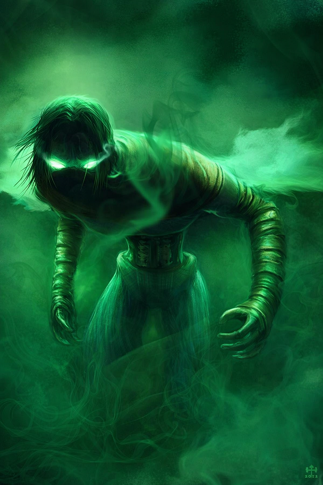
First, thank God.
for breath, for time, and for the ability to pursue truth without fear.
Second..
a special thank you to the OG hunters from 2022, who pushed this forward in 2022 when there was no “status,” no applause, just work..
Joop, Winter aka Summer, KimDamyun, Peter Pan, Andy, LP, Willem, Gorden, kachoperro*, enkidu*, and everyone else who contributed to real receipts.
If you should be listed (or a name is misspelled), open a PR to update this section.
If you know CAW only as the Manifesto presents it..?
read this first …
Across the Cawmmunity, the CAW riddles are often overlooked, misunderstood, or casually minimized as “side quests.”
They’re not.
The riddles are Caw’s manifest..
the part that can be traced, reproduced, and checked..
The “manifesto” is one artifact in that trail,
a layer surfaced through the first puzzle.
They’re linked, but they serve different purposes.
Here are the hard anchors you can verify without trusting anyone..
May 9, 2022: the CAW deployer address 0xbaeEDcCcbFB112d4a921dAa635AC2276307A1705
sent a self-transfer of 0.666 ETH with input that decodes to “58bZfQ1”
— a slug that leads to the first image clue.
July 17, 2022: the same deployer address sent a self-transfer of 0.999 ETH with input that decodes to “zrUfKaKV”
— a slug that pointed to a Pastebin clue for the second riddle.
That’s the difference..
meaning can be argued, evidence can be reproduced.
So what does this mean?..
wen a community tries to define identity, “leaders,” and lore before it can reproduce a clear, complete chain of proof, or even before it’s discovered the full instruction set, momentum dies, and stories outrun step-by-step verification.
So this is a “gifted” redirection back to what CAW is supposed to be...
verification, transparency, and permissionless truth.
This work is a comprehensive forensic explanation of the CAW riddles —
~3,780 hours+ put into making the trail reproducible so the whole cawmmunity can check it without having to “believe” anyone.
fortehppl.
And yes,… those same rules I demand, apply to me, too.
I can’t “declare” anything into canon.
The proof is the same for everyone:
a verifiable action on https://github.com/cawdevelopment or message on-chain.If the CAW deployer (or a legitimate custodian) wants to authorize these findings, they can do it in the simplest way possible by approving and merging them into the main GitHub, which i have sent in our behalf.
No screenshots.
No gatekeepers.
Just public receipts anyone can audit.
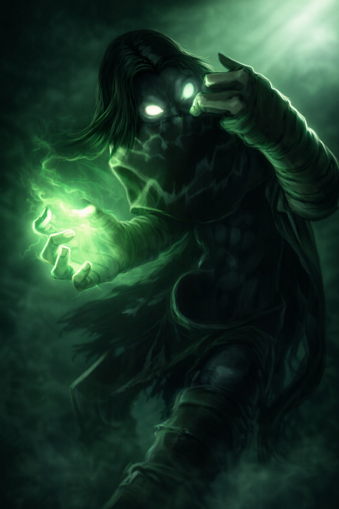
Inside the CAW Riddles..
A Forensic Reconstruction..
Origin of the Hunt-
Every story leaves footprints.
CAW’s trace begins with a funding chain linking back to Shiba Inu (SHIB)’s creator.
On June 15 2021, the SHIB deployer wallet sent 2.78 ETH to an intermediary address.
303 days of silence followed…
Then on April 14 2022, that intermediary forwarded 2.22 ETH into a fresh CAW deployer address. Just 2 minutes and 20 seconds later, that very address deployed the CAW token contract, renouncing control immediately after.
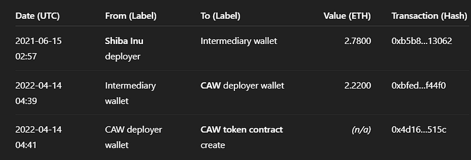
The flow was deliberate..
This on-chain receipt trail was public for anyone to see —
SHIB → intermediary → CAW deployer → CAW.
Such a clean lineage is not coincidence, it’s the puzzle’s first clue.
On-chain, what stands out is the transaction structure more than any personality or story, there’s an intermediary step in the flow that creates separation at a glance, but it still leaves a clean, followable trail for anyone willing to trace it end-to-end. That’s a factual pattern — indirection plus traceability — and it matters because it’s the difference between “a rumor you can argue about” and “a chain of receipts you can verify.” Pair that with the timing and the unusually deliberate-looking ETH values, and the most defensible way to frame it is simple, the trail was engineered to be missed by casual observers but recoverable by serious hunters —
a breadcrumb path that doesn’t require trust, only verification.
Equally telling is how CAW actually launched, not a hush-hush whitelist “presale,” but a public CopperLaunch / Balancer V2 Liquidity Bootstrapping Pool that ran April 14–17, 2022, seeded with about ~466.67T CAW and 1.8 ETH — meaning price discovery and early distribution happened in the open, on-chain, where anyone could show up and buy, and everyone could audit the flow afterward.
What’s still unusual (and rare) is what the contract doesn’t appear to give its deployer, in the captured probes, the proxy admin slot and implementation slot read as 0x0, and delegatecall is flagged false, which cuts against the common “we’ll upgrade later” control surface that so many launches quietly keep in their back pocket.
Plus the deployer’s behavior around launch looks consistent with a “deploy-and-step-back” posture — no recorded pre-launch activity, then funding and deployment actions clustered around launch day, more like a one-time ignition than an operator gearing up to manage a project.
and then came the riddles…
The mysterious CAW token deployer wallet (0xbaeEDcCcbFB112d4a921dAa635AC2276307A1705) embedded the starting keys for two elaborate riddles directly onto the Ethereum blockchain. Each clue came in the form of a self-addressed transaction with symbolic values and a short data payload:
Transaction 1 — May 9, 2022: TXID
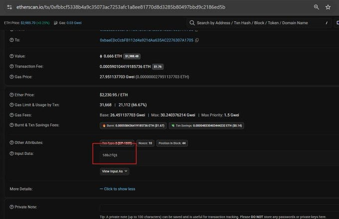
https://etherscan.io/tx/0xfbbcf5338b4a9c35073ac7253afc1a8ee81770d8d3285b80497bbd9c2186ed5b
0xfbbcf5338b4a9c35073ac7253afc1a8ee81770d8d3285b80497bbd9c2186ed5b, from the deployer to itself carrying 0.666 ETH (with gas deliberately ~66.67% consumed) and input data58bZfQ1. This “666” motif (two-thirds gas = 66.67%) nods to the “number of the beast” and inversion theme – indeed 0.999 in the next clue is 0.666 upside-down.
Transaction 2 — July 17, 2022: TXID
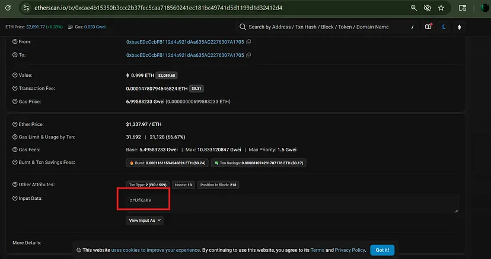
https://etherscan.io/tx/0xcae4b15350b3ccc2b37fec5caa718560241ec181bc49741d5d1199d1d32412d4
0xcae4b15350b3ccc2b37fec5caa718560241ec181bc49741d5d1199d1d32412d4, again self-sent by the deployer with 0.999 ETH (also ~66.67% gas used) and inputzrUfKaKV. As expected, 999 mirrors 666, reinforcing a duality theme.
same signature
same author
Both transactions’ full hashes, values, and payloads were public on-chain – an immutable trailhead proclaiming the riddles’ legitimacy (coming from the token’s creator) and inviting the cawmmunity to investigate.
so we did…
and each hex data string turned out to be a key for an external resource.
Interpreted as UTF-8,58bZfQ1andzrUfKaKVweren’t random gibberish but rather slugs/IDs for content on the web.
In fact, the deployer was effectively saying “go to these addresses.”
The first pointed to an image link; the second to a Pastebin page.
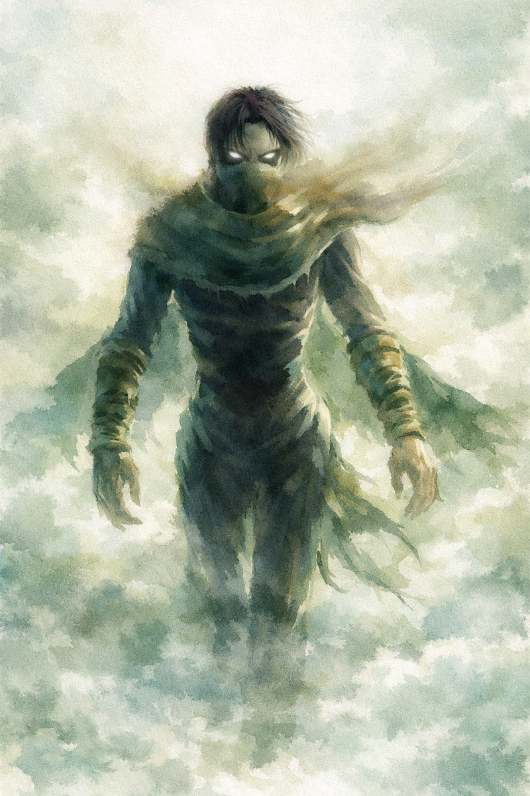
58bZfQ1 aka Riddle 1 (R1):
“Epic of Gilgamesh” Image — Hidden Poems, Coords, the Manifesto, and more
Transaction 1 — the real payload was in the Input Data field,
an alphanumeric string58bZfQ1. No explanation, just that string.
The community’s first test had arrived.
Within hours the CAW community proved its mettle. Telegram handle @KimDamyun ( a member of the cawmmunity and og riddle hunter in 2022) recognized 58bZfQ1 as a possible ImgBB image code (the format looks random but is short, fitting an image ID). Sure enough, visiting ibb.co/58bZfQ1 revealed an image – the first riddle image…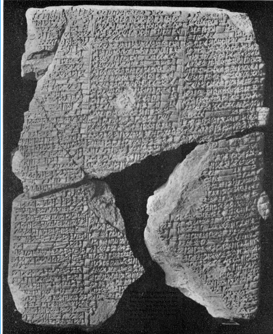
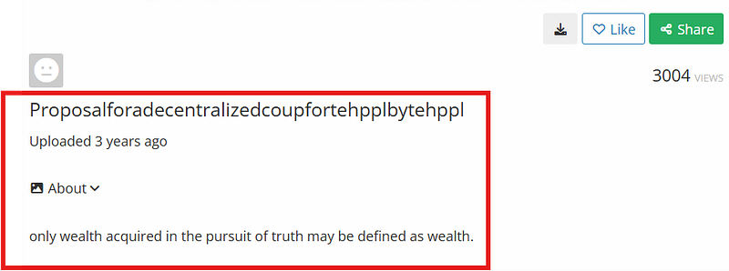
This image itself contained more hidden content.
Cawmmunity members quickly discovered that the 7-character string from the 0.666 ETH transaction fit at the end of an Imgbb URL. Indeed, 58bZfQ1 led to an image on ibb.co, https://ibb.co/58bZfQ1, titled..“Proposal for a decentralized coup for teh ppl by teh ppl”.
This picture (640×776 PNG) showed a photograph of the Yale tablet of the Epic of Gilgamesh – a clear hint at ancient Mesopotamian lore
By 1:30 AM the next day (May 10), hunters had found the original image here:
https://www.gutenberg.org/files/11000/11000-h/11000-h.htm
then noticed there was a copy of the image super imposed on top and a secret message embedded steganographically in that image.
that secret message was the word “The” visible in one corner. The odd overlay of the word “The” suggested the image itself contained an embedded message.
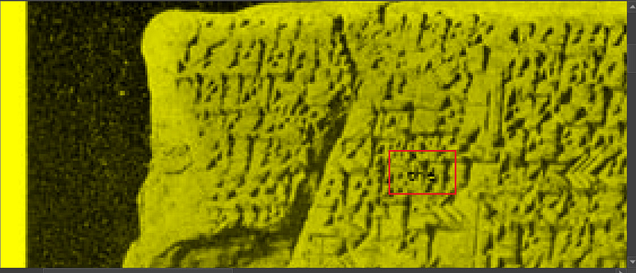
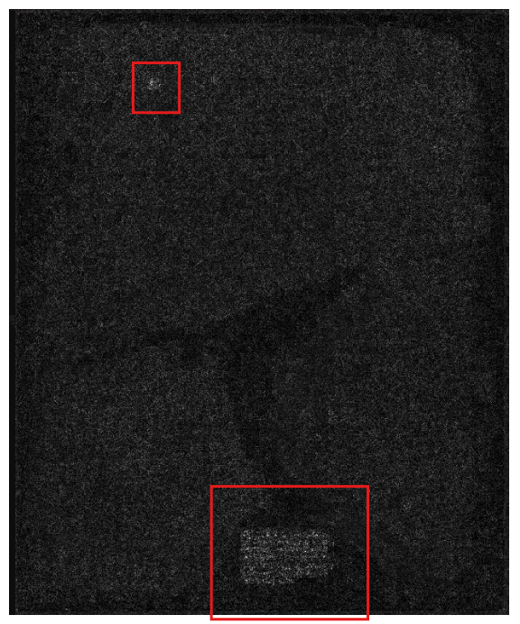
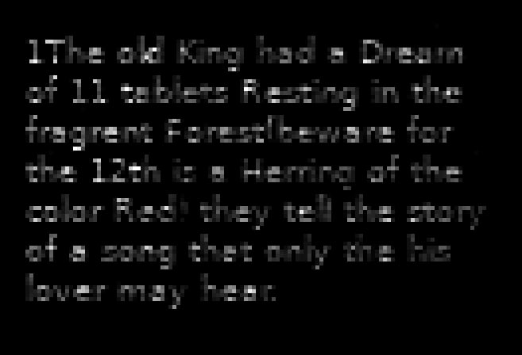
Steganography in the Image:
Using forensic tools (e.g. Aperi’Solve, exiftool, zsteg,etc..)
they found no standard EXIF tags (the PNG lacked a normal EXIF section) but did uncover an LSB-embedded text block in the image’s pixel data.
At the very end of zsteg’s output appeared a long hex string(its long so scroll down to cont,):
Aperi'Solve
First upload: Sun, 12 Oct 2025 15:03:35 GMT
Last upload: Sun, 12 Oct 2025 15:03:35 GMT
Name(s): first clue tablet.png
Size: 523.83 KB
Upload count: 1
Common password(s):
Decomposer
Superimposed
Red
Green
Blue
Alpha
Exiftool
ExifTool Version Number 12.57
File Name 44eebd2919d6895fff58d1389b15e2b5.png
Directory /aperisolve/results/44eebd2919d6895fff58d1389b15e2b5
File Size 536 kB
File Modification Date/Time 2025:10:12 15:03:35+00:00
File Access Date/Time 2025:10:12 15:03:37+00:00
File Inode Change Date/Time 2025:10:12 15:03:35+00:00
File Permissions -rw-r--r--
File Type PNG
File Type Extension png
MIME Type image/png
Image Width 640
Image Height 776
Bit Depth 8
Color Type RGB with Alpha
Compression Deflate/Inflate
Filter Adaptive
Interlace Noninterlaced
Exif Byte Order Little-endian (Intel, II)
Bits Per Sample 8 8 8
Orientation Horizontal (normal)
X Resolution 72
Y Resolution 72
Resolution Unit inches
Software GIMP 2.10.30
Color Space sRGB
Subfile Type Reduced-resolution image
Photometric Interpretation YCbCr
Samples Per Pixel 3
Thumbnail Offset 328
Thumbnail Length 16948
Profile Name ICC profile
Profile CMM Type Little CMS
Profile Version 4.3.0
Profile Class Display Device Profile
Color Space Data RGB
Profile Connection Space XYZ
Profile Date Time 2022:05:04 01:50:05
Profile File Signature acsp
Primary Platform Microsoft Corporation
CMM Flags Not Embedded, Independent
Device Manufacturer
Device Model
Device Attributes Reflective, Glossy, Positive, Color
Rendering Intent Perceptual
Connection Space Illuminant 0.9642 1 0.82491
Profile Creator Little CMS
Profile ID 0
Profile Description GIMP built-in sRGB
Profile Copyright Public Domain
Media White Point 0.9642 1 0.82491
Chromatic Adaptation 1.04788 0.02292 -0.05022 0.02959 0.99048 -0.01707 -0.00925 0.01508 0.75168
Red Matrix Column 0.43604 0.22249 0.01392
Blue Matrix Column 0.14305 0.06061 0.71393
Green Matrix Column 0.38512 0.7169 0.09706
Red Tone Reproduction Curve (Binary data 32 bytes, use -b option to extract)
Green Tone Reproduction Curve (Binary data 32 bytes, use -b option to extract)
Blue Tone Reproduction Curve (Binary data 32 bytes, use -b option to extract)
Chromaticity Channels 3
Chromaticity Colorant Unknown
Chromaticity Channel 1 0.64 0.33002
Chromaticity Channel 2 0.3 0.60001
Chromaticity Channel 3 0.15001 0.06
Device Mfg Desc GIMP
Device Model Desc sRGB
XMP Toolkit XMP Core 4.4.0-Exiv2
Document ID gimp:docid:gimp:906173c9-d537-4dd3-bf9f-1b37af073328
Instance ID xmp.iid:095ce9d5-e4ad-4b0d-af32-8e6c13033c3d
Original Document ID xmp.did:6f3638dc-d1b6-409e-8045-828f6d7f19ea
Format image/png
Api 2.0
Platform Windows
Time Stamp 1651630902699720
Version 2.10.30
Creator Tool GIMP 2.10
History Action saved
History Changed /
History Instance ID xmp.iid:d5004044-8a90-4014-81a1-c780c28f7877
History Software Agent Gimp 2.10 (Windows)
History When 2022:05:03 19:21:42
Background Color 255 255 255
Pixels Per Unit X 2835
Pixels Per Unit Y 2835
Pixel Units meters
Modify Date 2022:05:04 02:21:42
Warning [minor] Trailer data after PNG IEND chunk
Image Size 640x776
Megapixels 0.497
Thumbnail Image (Binary data 16948 bytes, use -b option to extract)
Binwalk
DECIMAL HEXADECIMAL DESCRIPTION
--------------------------------------------------------------------------------
0 0x0 PNG image, 640 x 776, 8-bit/color RGBA, non-interlaced
64 0x40 Zlib compressed data, best compression
19801 0x4D59 Zlib compressed data, default compression
23611 0x5C3B Zlib compressed data, best compression
Foremost
Outguess
Unknown data type of ../../44eebd2919d6895fff58d1389b15e2b5.png
Steghide
steghide: the file format of the file is not supported.
Zsteg
[?] 822 bytes of extra data after image end (IEND), offset = 0x82c17
Strings
IHDR
XYT"
zTXtRaw profile type exif
WVoe
//cG
Zxr(
.=>)Nv
"G.2
qXw{
UPm?
iNn~
=af=zRW
`OsF\
gajx,
aJTk
G=`)_
zx+Kppf
/5?
";~l
>^cJ
@|q1
?/.Oz
y)/)
*n^.
u>`tB
3`5"
@IXk<
~ltrj:
wwxN
)\sQ
[N?Z
7R/9
[(N<
67&|
`.jv
RYx|
``\y
B\,(o
NQ`E
(k+9y
^?Zq
u+zaX8
vIQa
r:ZD
.x v_o
q)9=
"%?:w|`
qX\4
AzKP/
=NUHw'
J,y%
P?9P6
B)rz
<BP-
F3-4R~
Pu`p
frUM^
$01>r
><`
&,8RE
pGp>
RWne
@<\D
\w@/Z
,P-|
{>g-
MAy"
!J+[
uC7w
@jkV
%KHD
8e5Y^rC<
eA1_
j6"fA
Du;9
"&|+'zsD
|G{Z
_azFx
LGf.
6#",
X%p)'Ej
HCS^
@JAq
`Pw
qO&$
f1os|
rIBp
B\rs
wDXB
bAN;
+78l~
?B9!m#
]YPk
f:mX(
y&l|
sN*G;
8XR'
!Q:Z
eF-D
NE(\%
rD'W
ofno
/0u~:
NNXY
bLy^A
C.rt
~.kj
P<k6MG
*>9`\
<|nd<
c,#X
VHe>%(
%r0S
YN}gcLFJ,
G]AVnH
Kx~m
1zZ.
&h{L
^X|1
$X B
PG%cL
W\ ;s
46?,
4,pV
A?/*
|vQ
>m_6
Y=Y*v
Y3^6
G1C&k9
t/{
iA}k
Mm9$
MWAr
S!Y8
d2Qn
h6H&N
Vna9
w`d7
mOG2
Z}Z9Cfn
d\gN
m";X
dmBH
6'7@
t!^~
Yg8d
@Q!"
`m8>
lb"so
8.Uu
3GBZ
],:j
Bs"(;
{TKm
s|&w
*@8|
cbxjw
=fu*#w
m@W=
C7@%h
nXRb
<C&:F
@RmKo
0.q\
#`J:x
66^?
@csJ
5N?&
-5ewSJ
bIZFe
-C~j:
'O.%
'6pF
NW}t
gQ,"
#F-a
LBDq
ARYLR
Iy>b
=EgO
*`!#
zY5oX
tZ16
aWVH
B]~q
ca[a
WV5D
ig<3
`[Hp
; lf
hv(x
GrPK1
cw7k
-?GTy
9:l4k
@w]>
` ;h
Z[y^0N'L
/;!q-
t"9\
%J/ZA
GDY{
d!h>
' e
1*>?t
t~x-8H
#h@8
gY'\/~
Jw~O
3c`k
={6/
+>8t;b
s.uz
W46y
?`Ul!
V%`d1
iCCPICC profile
!Iqq
G''E
q.;,
)&2t
f?Iov
\\w5y
iTXtXML:com.adobe.xmp
<?xpacket begin="
" id="W5M0MpCehiHzreSzNTczkc9d"?>
<x:xmpmeta xmlns:x="adobe:ns:meta/" x:xmptk="XMP Core 4.4.0-Exiv2">
<rdf:RDF xmlns:rdf="http://www.w3.org/1999/02/22-rdf-syntax-ns#">
<rdf:Description rdf:about=""
xmlns:xmpMM="http://ns.adobe.com/xap/1.0/mm/"
xmlns:stEvt="http://ns.adobe.com/xap/1.0/sType/ResourceEvent#"
xmlns:dc="http://purl.org/dc/elements/1.1/"
xmlns:GIMP="http://www.gimp.org/xmp/"
xmlns:tiff="http://ns.adobe.com/tiff/1.0/"
xmlns:xmp="http://ns.adobe.com/xap/1.0/"
xmpMM:DocumentID="gimp:docid:gimp:906173c9-d537-4dd3-bf9f-1b37af073328"
xmpMM:InstanceID="xmp.iid:095ce9d5-e4ad-4b0d-af32-8e6c13033c3d"
xmpMM:OriginalDocumentID="xmp.did:6f3638dc-d1b6-409e-8045-828f6d7f19ea"
dc:Format="image/png"
GIMP:API="2.0"
GIMP:Platform="Windows"
GIMP:TimeStamp="1651630902699720"
GIMP:Version="2.10.30"
tiff:Orientation="1"
xmp:CreatorTool="GIMP 2.10">
<xmpMM:History>
<rdf:Seq>
<rdf:li
stEvt:action="saved"
stEvt:changed="/"
stEvt:instanceID="xmp.iid:d5004044-8a90-4014-81a1-c780c28f7877"
stEvt:softwareAgent="Gimp 2.10 (Windows)"
stEvt:when="2022-05-03T19:21:42"/>
</rdf:Seq>
</xmpMM:History>
</rdf:Description>
</rdf:RDF>
</x:xmpmeta>
<?xpacket end="w"?>
bKGD
pHYs
tIME
IDATx
yz>|
x4F8
h4D$2
p8B4
h4@$
x2B8
h2F4:c
px!O
VL.UU
!ff.t
h2A8
y>.O
p4@8
.~>3
p(x>
"f@t
F#L0A42c
{O3v
>==5
]2v?
8D?d
~o;;
888@"
<==E8
p8D"
t:H$
b1[#
3)|G
3A=A]
8::B2
V3g0
Q:==
8==E:
t:vmu
8==5
gUGi
o+ ^
<D40
l6M6
u,4+
%UgR
s3Xb@
tMhwyv
~NOO
p84g
xo:R*
HUai6x
5:GGG
(PNU
5C{zz
J;E9
i%z>S
_~95
kL.9
h4B.
8;;C
[S$sss
:NOO
BZ^9??
pvvf
\r?E"
'?A*
,PfF
8NNN
ncnn
3rMC
sss8>>F4
Wix}
=;;k{
<>>6Y
z899
``kI
D:33c
SOP~h
5\K=
u;;;
8==5a
9fff
B6??
oprrb
qrrbkGC
T\T@
/*L*i
"*+:2\
:JjTi
k(V0
y}>#
#9;;
D077
Jann
f Bd
q-kq
J=p~Z
x<nM'
R]ob~YF
C<??
cKLh:
70L+
wMS^ I
)\B1
j{yM
MV'E
Fqxxh
zJK_
vyS^
oBQ\%
wJu-X
&j(G
Ke1-
nf%4Bg N
BV'U
,>zU
iag53
l6MF
X,bkk+
LygY
e64p
P?A3
IDAT
8<<|#b
ivL3">
3G9WV
>jVF
T*ev
_1qJ
CGF#+
U'BI
'U\5
|hYk
:fz~
eI9Pa<
(4.B.
*KF4
HitI
VC18
FY|>
zBh^_
V #Me
H$P,
1u`<
vv|3
N304
2C#O
nOq~
}`=m
}t^4
p||l
K#i&
$ggg
+jaa
H$p||
!T|M*
<991
|}4r
,fgg
6(uG:
FCCJ
|o<{
23338;;
imX5
U30Z
)'z(4
%[N"
J%,,,`qq1
7` U3t
}TJ"-
zj#_1Q
:aUg
)~d)
mmZT
0~wZ
F>'g
}?7QKM
t:6r
t*bB
mP"_
k-9*
m^#v\
Z?VOY*4
[[[ft
u>&35
rX\\
H$ptt
f<==5
P^G;
gW4[
cEGN
fB]km
H[Sp
4TzX=
z-//
/_bgg
X^^6
uOXM8::B
/#X*1f
T!zRW?
1??o\r
lbuu
|hFP1
kg\6
N/Q'(
H`qq
kkkX\\4
Z-0!
?\]#7
24tt
iaa!
d-7jS
L'di
?2J`
,--a~~>
12>=
T 4.
H`cc
Y?]D3
XgfY;
lR9+~
*sJ2
|1Xa
h4,KK
"$=$
R6ur7Qp
i$xP
V3gP
rmu:
NKr:)@
::>{
t*.N
=FTK~t
RN+l|
],--!
Sg 3
<x`N
tzzj
e}_2
IDAT
LG-z
L&qpp`
VWWM
677q
u~1g
=::B
+++F.Nn
`f7Tw
:+\eR
|/"h
%TR\
T*fL
$677
6vvv
IR](
tppp
d2888
<x`glkk
Z1R<
Sry-
[[[h4
b6]ikk
p.mt
Ssoo
c444
X__G
T*amm
X,boo
GvnH
l6Q,
Vnb3
kkkX[[
Zfb~~>`
6pqmh,
}6MK
X^^F
;`Z\
;XXX
nc$P.
<*92
L i^
<677
=zd{
bXZZ
pzzjM?$pgS
P(`cc
T2=C>>
uf}v
Lb}}
n6k<
z sL
F0&r
z|d&
}&$t
a)|VMb
XZZB8
V19Jy
Bvtt
</,,X
rXXX@
,oT*
W;;;
)eFx8
R)<y
o:ATd
&#[[[
.*J-
T*aee
fSa&
tlmm
6Hj5H
PNN&W
*+U.,
v*HU
ElmmYF
vnV*
h`ss
a{{;
qw42tr
>vww
ZX]]
X2ev^
<wZzf
o0??o
={fx
ht#,
i,--!
2??o
677-
D)q<,
l6kg
$ a'
+6V+
}stK
{(PZ
P0EE
KKKx
:NOO
\.cqq
X4^@
0gL9
Msdy
XYY1
B xf58
9`wY
,KE:
vvvL
bee%`
^]]5y
u6C%
8677qpp
t:vww
BiVH
:qoo
'tHu
4VVV
}Y[[3
32\]]5
IDAT
bwvvptt
h4ppp
O1j~
"+,:
d28<<
:M,]s
XXX0]
txxh
~o}}
5HSE
tl=,
KKKX__7
1r^[[
/^`yy
,?'{
Vmff
`QFE
|+"8n
U{{{V
Vmmm
B7zvv
Bt~~
<333
a=33c
q~~>"
ZXXp
H]8P}
n{{{^
F3}Qg
&''-
?3E%
T\g4
677g;;;6;;k
'vvvf
Ombb
v||l
611a
vzzjO
G>><<<
%;??
UO>/_
g699i
wljj
;::r
%;;;
k333
t:v||l
?~lW
655e
<99
qrrbW
W_}e'''
6==m[[[^T
c333v
PJfgg
W_}eO
/{qE
W611a
K611
7fff<
m;??
LOO;
1*g<
---Y
qwN`"@
MLLX
EG4<kFT
>88pM:
V'N7
&]t8>>
L&}L5
N@AHb
5;;;
W]\\t^
mmmy<
hiiiD
7Gl\Q
"{*r
N;b:
X,zrS
}NNNZ2
e+\3
T*V,
C;<<
J|j6
o`(>h
sq||l
78($@%
!EUy
YF*dii
VWWG\Z
.w_e+
RDsGfgg
MLLx
t:V.
vvvlyy
5SH7
\.72
I[]]
.U2F$Vp'
p8<r
HMqN
Am}t
K777
Q"<)
NNNluu
GDu[
7}lM
mnn:
h4<F6
|:uZ
|K^]
bL=`
hmnn
gS^"
lmmY<
sJRa$
b1K$
$4<4
IDAT$
<_YY
)+hb
`UzK
`]NP
$^>j
^Qa^
b:;;
VVV,
vmee
@=99
\p[}\
L&maa
fmss
9=77
KGSSSV.
qwu
p\{8
nfgg
;M:#F
@otA
"mlW
!nll
:Q{rr
=<;;
8mmmY,
3??o
B3J>F-azz
\)]B]_
+ _9@Z
{vxxh+++
l766
;699
(Dx'P
T*V*
VpkP"
$n$G
EEN($AJ
QG$b&
&A59
EDZ
J=R,
9M%u
<OUXP
z@2>e
=,=|$_
O2#h
\XXp__,
%"84
Fm}}
C1GAM
x7?O
@ebh
qQsg
:F.:
<==uQR
,..Z
-,,X
xk t
655e
Aq>Ug
Hpg(Zj
{699i
Dlww
:mGE
Lil23
9h7T&b
\Hl
v766
uXju:
<!2^
s`<K
pBSE
b^LpGU
Yb (9|k
PaiP"
xnh>A
Z-'FCr
rF+l\
vpp`
o-jgff
;E{U
M7ZI
-333
VWWG
)R8k
899q
sNA;
w&R4D
gP!!
hq9>
Qlpy
r9HP
g>3/
GPN"
VVVlnn
iTiZB
0j#B<G
8W333.O
%fpwi
gZ-n
+AQ-|
u: ^&(
A r
X^^v
V[$y
wF1DB
;RHS^
VWW}
d`h
'yJw
fgg-
q]B&Z
m}}}d
7mrr
T*v~~n
,--Y
]/|(B
H$luu
Eggg]
hmmmD
g6??
"W"i
b1[YY
vwwG
|:"FZ*
S)TIB$
Toj8f (
r.AI
fmjj
ttt
IDAT
|Hj@
H'HQJ
K.Zd
>33c
yR$.8.
4N$k
+lmS|
6r)`
84i<
;-^)H
]_ZZ
{ciF
W+[j!
[I*oC
q2y2
8',l(
;55e
wk'u
c[[[
+++vzzj
K>Dq
&'']
LtLZ
5/8q
~<;;sn
{rnnn:a
P(8'
.1199i
9zxxh
Jvtt
)JYV
#~sv
b9/SG
moo{
[^^vT
r^\QP
L9w4!
GD a
EGzxx
P&&&|
:;;k
6;;k[[[
l6k+++
fggmmm
:*TY
mR+'
pS/I.
`0hkkk
ryyyd
Jfgg
moo;j
i[__
h$P>
K)RJ
a|b8
swjA
^^^v
H;FE
{rjGA
NOO[,
vvvF
4Xhq
IAH
=P5F
4epNY
j5[^^v:
iZ(,i
zr/E
a8\ }
9>>v
=TM:
A[__
EO44
OMMyLi4
>P}h
\Wj(
2u `
}|~~
Wt`jj
@X)8
wrbb
TAVHG
X[[s
9Xys
?]Za$q
j\[[
i>;(
Vmff
[[[s
Dlkk
:z?.\
'''
hyy
J%K&
UkSN
'8}lQS
/ryy
-&}*E
=??o
Qn[2
-//[.
=:zt
(`@ku
>$zFG
.@!YD"f
IXl|q9
!13B
l6k;;;>
*AAGO
O F:
,<H#
S&N"
SdT*
rV9,
'?_s
vvvf[[[
|h\L
z`\3
y$eE
#W:q~
IDAT
S})
4|+++
OOO-
x<>"
UKlP
E]__
mHRGGG^t
5==m
b#1F
,,,x
3iQ8
yy$,
X,Z"
:]\n
xDb9??
t:mGGG
"""""AD$MC
{vaO7
Z,up
ll"3
)XyQ
NNEEI
NpwI
h\R,
ONN
H"=>>
d|;W
w_]]Y
Vs^6
wY3u5
g A+
@(<)
^,$t
w(`s
4Yy\
S{{{;t
]__;
TjtO
+ZH1
RYtz
_t I
<<44
"Py|
t:Nh
!]p"
@@ht@
8V}:
d2V,
riwww
wdn(
{E`z4
e/..
6BAv
"K9m4
9KcL
(ooo
|3"
{x||l
DbGC,
bvzzj
P(8g
h4vx
L!,Z
ogggvzz
\:"Gw@R
wTw-
BDEH!
1rW4
_xoo
^__}q
Z-k4
XC1<
b4w^i
>EG)
)<;81
kWWW
yQNq
q4Vi
?^__-
NPwT
Q=_EZi
;==
7|<F
>4bL:P
FKk4
N=&I
Z:jE y
svvf
~%9+
F$>$V
d2iggg
wv||l
eu@p
?==Y2
9wP;TiDA
+(Bl
4/RE
X,l0
u{{k
Orss
o:XF8p
NOO}
9|B~f:
]:Fb
IDAT"
8bQ2
U6L5x
\%8y
H9n(
4"h*J
^5kt
`)b8
ri{{{
T*ya
u%5k
3IJ78)
H`|n
8t!G
M={l9
Q cS8p\X
:"cC
vyyi
88asi
gT/F
hz}}
0:tpIy
?ggg;
9K4<l;cC
N"M'
nW*#E
J)hZS
j)_%
oF[\
!Pu/
?Oy:<S
~6I<
k\~h"
y?99
%M&<
99TG
kG@A
7ol4
MCqW.
nkRH
+&8S
]!q!
T*Y*
{lNC
3eq"
T%!ti
*ZH,
xxp.
!;>>
I4dA
m_Egw
C#0SP
K`Th
k8C\.
V@v(
hX9|414?
K@PtD
Pxpnq
b-M
4/b;
oJRp
Q;==
E;::rY
[512
P5Fi
iX@J
9;;s
.U&E
BpUP
fsg
aH8Q
R M&
45j6A
KSB|S
xcdKW
W;;;
|>oWWW
(Lt
_u/a
qPX!
1(/R5
IDAThrQ$
kla;
:<h
[" i
N=h!
s{}}u
D"NZGl
$63_
35QW
jLE8G
+#.3
w!l@
nxoB
}yyiGGG
o<)l6
"7*+C
t,V)
V?Q*
W5ti
=///>
oubQ
!`#X
R?qg4.*W
R@1*
6Est
M$@)
hpA
7NY^QQp
$<..
U4+:
f3w$R
T+RF5l
,USx
F#_*
}yyi
hdff
F ^&?Wy
6F|vu
`DDC
v4Si
\Ib4
{Os6
H6h4g
q_<999
cRPQ
i(i*x
">?g
TFaV
w\$xj
kS-<
w(jz
cQAE
'x*<_
p@+h\
bGGG
LuIC
T>w"
@ny||
vrrb
U(&L_
utI!H
pdUQy
3G8S
}xxp
6i<7
C;::
:99q[<
/$R~
x<v^
5$x}}u
...\
Zl%g
g;??
gxtt
rs8
U3T
?>>Z.
;|~~v
RmMhO
u D'
=)nHPt
B$18r
4 \;.P
jCE0&
bmT*
S=^__-
&!#w
5d1Qs
L&V,
H@QG
g!\7
q#0;_
"3^d
L1X(
#kEy
MNxa
PGA
]/Fi
8+a>1
Qc<J<c
PpmLE
tttd
v,E>
c`>+
Q*m]$Q
Cg4FA
R;#qF
}k{{{
777v||
3^V^+
:GC
IDAT
1xss
_^^:5"
2bA,
IOb c$
2QQ.44
H]\Ri
yzzrKO
;==
)@ox
=n",t
l6s]F
noo-
mh(r
db777V*
O/wJ
jjLQ
y $-.
#B`w5
!UgL
%<}Gl
U_\RmP
;tLOGG"
(0q>
wB1@
www>v
$L`W
nnn,
g\&x
UN a
O7OHJ\z
}~W,
t:uAh
e5Xd
m{yy
P44&S
':<o
72rOOO
X"""J
JDD,
KDDDD
kc~ee
"W,Q;
?9e.dZ
k=<<T
gwvvF
S.#Q
XEj6.
_^^n
{{||,
OOOk
/dvjj
S`xff
iWWW
vttTS
cq3m
,$KsiaO!2==]
qyyY9
Os|K'
hKKKU
g8=@%RI
[onn
/Z\\
( ;3
]__W
7u~fgg
.noo
vrrR
w|>h
%E%V
0M~n@
e)n:
Auxi
t:moo
1mW
6'3QI<
f =LWWW
~k/^
255U
bCZ~
Lm1CYi
w"u@
v||\
X^^.
\i~
wwwwD
8kqq
s;<<,
B-8C
s$2-
bhzz
Z2==]
[<TrXb
T[]]-
!P>
(G.'6
>]^<?
nwD?
}}vw
qF%\
3gDc
S;99))((
%pH%
><<lGGG
x6bZ6
WWWE
p8lGGGmjj
|&Mcyy
k9j}}
\]]U
!2Fc4
Ew*eH
oTszzZ
n97>
...j
K;99)dsuu
tOnE
nnnj<
+EnD*Js
g811QK=
u[__
s2*7v
V3z}}]
}.,,
o8+b
c4Iwwwmjj
IDAT
;rww
M$c-
Da|i B
sc6G
pR4J
`hmz
#(KF
/1)@
Rs}}]:
6izv:
%%"
04Sq
x{{[
v~~^g
5"CD
mccc
3l{{ccc
ry{{[#
fffj
zJ )
uI3!
@ggg
Wtrrrd
T|ssS
*M~)
Bi%U|H
RQ"
W,p(
zzZ
9Rxr
97/_
VVVF
?15E
:EQ.s
{ttT|_
:-[1-
tf}/g2
<;#s
Ix~~n
,<>q
'z@H
#!g\S
~Lyz
EZ2~/
t;??/
kkkmuu
jLpyyY
6.t
r\IJ&
La p
xRF1
l+++UL
Ujlk
vwSa
*,$W
i{p\l
BwlS
{|ww
myvv
&J1\
fx69
>;-(
~~g#
[noo
\,[^^nwww
kkk#
mKKKmmm
T]P{i
1"MR
Lq+ Vi
ayY=
*D +
777W|?D
QR|BT$
r62"
K[YYi
ussS
9\ZZ
muuu
~Y?*d
c;==m;;;
qzzZ
]^^V
a@[Rl
`.],//
P)wnqq
S-z)
q3$Lb
WWWmss
p||\
nq!)
_zz&*
XP9>>n'''U
dVWWk
?==-A\
p8lkkkmoo
hWWW
w+g*
RL3h
qssSz
333#
Y&/dkxL
8em6
c|Iirr
Pvvo
`waqq
vzzZ
B %(
v! >
)H&w*
qtXA!
N?ig
jt d
$)7M
8==-
dDs4%
gy:?wN
xp:3
/)zVF
www%
pd;z|
q?mrJ
83mQ{
^[^^
P.|f
666F4=
moo
U)v@M53r(T
suuU
[&yA)I
D0E4
e[[[k
N=PyB1=
vyyY
*g~ee
u[__
dda
J"5ac
U:k9
VVVJv
IDATPR
_^^.
;??o
>|hWWWU
S69(
/;5 >
F^al
qaMk
osss
&-(!
zn+++E
B[[[k[[[#
/rar
DKt{>x
]vEC
wqqqd
MR:N
dBRpv
iXYAlWVV
N*,5
@SLjznnnj<
nSSS
7wwwE
V<55
~rrR
_H/D
emJ
<]@"
:]|5
.NnG
RXdYZZ
NPr2
_WWW5nM
jR D
2,xeS
3uqqQg
56u777
*8aQ
ZXX(
_dIn
vvv6B
Mb W
_qE>D"
A;>>
vxxX
,333
22ev
b.W)X
===U
=i:)a
/maa
&9;9v,
*|R ^
;RlJp
Mq]h.^
vxJ$7
|S6e
hggg
xrrR
q751zaaa
K,)A
[\\,
C?+!
c$2w
666J
H.vzx
Fygg
vqqQ
Dd-U
S@=<<
E;(Z
w`qq
mGGG
hdbUHy
K'OQ
g~~~D;H
C+aA
FF$
$fzx
KnN.
wyyY
vppP
I Pp%
g/..
Bdrr
677+
.Xje
u296p
Y2A]rC3G
w,//
GHv)
uu5BD
wSSp\
gnA(
g3d=)=I
3cS
Fs[[[mvv
v||\V
,5b4
)iOfA
36QB
U.//
A;99
mCb6
es@`
i{hY!
,SSS
GZ:e#
P-_A
<..^]]
bBrN
R5ox
Oqgg
Z;88(
[<IK
r[/G
bo#K
...j
{vg:V
`gggD
e;88h
mkkkD-
^\\l
I777%
gmtF
\$wZu
H-Dn
QNNN
q[]]m
^.qn
vyyY#
E.}C
:7==
Q;==
xRbJ1
dJ I
jzR+>
Ezu???
xojq{{
&K"4n
8??_
WpKr
r|aY
>]&]
IDATf
<==]vy
$EXr
NmUg
-_\\
FgJU
fggK~
]M$4?
[K
V.U"Q:
vppP
9FRx
u9U<??
mB7y
`0(^pk
sI4^}b
`VnIhbb
V'&X
*N4l
sONQj
n6~IGIy
22Lo
Puz>K
&(xs
NNNFD
j<fDd$k
KRk/
}z"[t
B Hab
/^<]U2=~
B/yZY
p@Ra
6nKy
mmmU
t;<<l
?~l?
,H /_
J q$
O\1c
gL$2
<MLL
]7GB@
3Y__
ev<)
_911QR
S<:cR
~ssS
...JH
FwF`
3333
C6Y
"mrr
3t7|O
rQ"A
%mf\
sAKq
8>>n
m[[[k
R 6"
Tly~
K*C3b
vxx8"
#3"N).lA;
4VWW
2\F,
KKKE-
n[YY
wyyYN
6]QV
8quuU
v~~^0
mkV8
B{xxh
Irjj
>lhB.ST\
$=9S
%vc&
8tFr
K[YYi
g.)%
""IH
?==m
x`{{
k[XXhkkk
6Z^YY
u~3o
,zBN\4
3 u|
XZZ*M1
bDf@bL
xK2%
666j
vwwW
W*TH2
{R+P<O
t.u&?_NrF
T.t5
nubP
~4BvO
9#d4
<.g:
!DCtqqQ
Dh9i
.f<P
J>!$
X-f(N
7?on
6K:a
e911Q
l<~766
yOR(
8~O:3)p
_-Gk
SD]3
5RZ0
23?B
a5ys^
|www
T6O+
80)od
iDR<
?9{)
1-.hz)
R"JY
R"""
kU%s>
z;<<
*\M?
/[XXh
@uAsqn
X[[k
R/X~
%RM2
{96H
yug)
>GW)
U}/zG
}J"B
Lja&'0
D).h
>%$v4
/,,T3
:.##
IDAT
<+<BR
vyyY
'Y @
;xssS
]\\T
-X'zo
|xxhWWW
EP8wJQ
DV`+
26N
N5?dP^
A1.@
777K#knn
MK2#
z~~n
@|~~n
\Px||l
mSg,1Q
F7nd7
{nY[
6d8UDR
RHAg
P}||l'''
nnnJ;N
=ONNJ
eJkA?
mooo
ve\X[[
>}*
4RFb
wCqq
S=>>V
Qn"L
W1jkk
]__/$
:X*zd
\TLY
@'''
$*hr
Vf:w
k#V1
Rr-:
vKn"f0
)LnH
#kkkE
1N>==m[[[
&ZR2,
Q~mm
5Z[[k
u;::*
gggk
G;>>
}rvS
v||<5
Yd|1
P =I0ND eH|
SRAP
*.Sw.
rCJ#H
(m6?
tssS
.--U
;<<l
280f513
}||l
#V:a
ga[9
Omgggj!F
FS8;
876;WVV
h~J#
wZk%
z%0m
~zzj
S;>>nkkk
M)45
677k
H^`n
rcR7
(9^3
Q[^^
e;>>n
Ifff
];==-
+mY|
vww7
u{||,![
p%xr
d2)4
86.<
z5%2
b6!r
SPr
$)/,,
Map4
}>Imvv
"CJBps!
h]2I
h+8V
_z,;
Dwmmm
VVV*
)Hqr
CO1S
Sd:p~
$577
xO0I
EXn+
...jy!
rhgg
R'Mv
MZMeq
@4V`
qI*O
x<88(
z;::
h9>>.C
wvvj
$uH\
,>ra$
Davv
\YYi
gr sT
xW2%
Xt{{
?~l'''
I7SXAA
-9%Y
0SbD"p
FwFc
Y;;;
y&PN
A}ee
X2qW
?::j
rggg
Qy>S
___/Y
rTwww
h]]]Ur
vqqQ
IDAT
#xd;
tglgg
)_l`
1gJ#&
,{Fd^
Ynq&
Tq>RL
X\\,k
\K+0
s{{[c
@X;e:
d977W
hw1!
b}WE"
UayqqQ
i|uu
hNA4
JmxI,H
v{{[
Zkmwwwj+:E
SL.--
=PH;
[;>>.
tFP0
,qvvV
\*,(
NOOK
}}=eU(f{n
C,ooo
&gh^r
'0[wX
6>I_
[c&g
.^]]U
Utlnn
>;;[
Q_,u
Bw95
gy-*
LR\Z
?zee
GZ_ :6
fnAv
x||,
]}&B
`0()
~m'''
&N[[[
jx_9
vRO4.~g
K$0M%
i]'Y)
I|||,
677W
vyyYM
Evvv
mgggJ
<<<TaK
Emk=m
~ssS
vppP
|)tnkk
G\AG_
hj'Z
dkee
PL\ZN
.jJr>
]1BAO
mccc
r1N1
{oWWW%
Jqx:
[IJi
_]]m777u
fpee
e(qI1o
933S#|
e.rtQ
|1v1
vlnFB
EqrttT
1wz6'y6
@z<{v:
J#8
u,g@-
m-^__
.=@!
5L?mt
vqqQ<`E
YV@we`J"
.;$"
LnYg
KnSB
owgg
Kj|f
fB{s
<3]i
LJLt
JPov1
s;88h[[[5
]k~l1
h4*bxW_0
wg okk
%Oc[
XS@:
\9.//
Gz~~~J
! D8
NFW{0
\lHI
]G$)
W[^^n
U%KI:}r
Y}~~.
31P|
\ywS
7w-Ri%
C{~~.
(loo
<88(
0$N2
,28$
zz*1m\
iN~hmm
?Ie2
Akooo
IDATmZ<
;;;%
gQMhF
1DAA
RJ'7C
b./H
F@F#
777E
sJ'yOi[
vrrR:
)P&h7DF
XL0]
UP'y
sYBQ>;;
:OOO
|i{{{
E'70
g;>>
]XXh
0/bv
m9??_
jLoh2
rttT
=<<T
NNN*6
^\\l;;;
rVWW
|0;;[
gqzzZElJ
U`YV
%AWq0
!!_bK
5ggg
QZ`H
jc:)
b$F#
bI~@?
U*bt]X
15)!^
':F:
jr _d
&mmm
_YYi
[__o
x6I(O1f
<UD%zA
k,@M_
k=88h
^__W0V
'sss
Wmuu
KZCs
iRR'
]qVy4+
LK=1
j777
YZZjwwwm0
W,1y
R*+
5jww
l):|9
mooOyj
Pm\
HQXh
.I'*-A
wwwS
hr J
JX[[[
U[YYi
2tqqQ
V44P
S(n.I
&iii
]]]M-
#9.#YM
OSA$A!
KveQ
yxxh
{j:J
{ssS
nwww
0M T;
vyyY
f*dJl
*y #Q2Q
l777
\__W
otwr
cR\>[
vuu5E
OK>c
Yyqq
dOM0MT
AU2{zz
\m9&'4
v%1ze
x*iK
'rAwRc
Z[[k;;;
_$~K/
J[__/49
#aM
ruuU
p\\&
vssS
hZ\\,
AESjwY&A
GHoXx
w'7Q
Eh"w
XJzI4i
={{{
~||l
vttT
T H/
OZLR
iIzijp
F(`(
gOg4
$~ppP
@xvi
BNA'j|
];::j?~
-B~{
ZkWWW5F
:;dhH
d?R*%
fgg+
n!NF
Sgpee
tNY4&=
BQeh
6H7>.
P]^^.
bT@Ni
I$,y
Y]Wn
}7c*>
cLbs
'6@
3#~)
wV \
|wwWI_Q
<%v {
7g"'
ERPfr
2+(y
]1.O.
G2OtO"3
s$eZ
)/kq
2;;[
,7}2H'
rF.B
grZ"J
p Sx
pXcF
J677
RKu$
nx79}I
HF^r
IDATd
['=
R-|>
qNrl
^p}X__oGGG
.oeqdkkk
s1 %
MY~*
wqnqq
*:)r
SOnr
`L.rv]?
OH}>_6
Yyxxh
(gzP'G#
Zyv777
Q[ZZj'''
V;;;k
%mc1
!]ZZj
k+hm
kP,Dy_
T"yI
-7N|zz
(!Q=
!H;3
~{{[
v9 h
///kaD
hejrB
ILM&
o36%r
f[nU
oS.Q
&NsT\
c;==mkkkm8
&E.)V]
rk6=
D;si
."^X&w
v{{[]5t%
S.@y.
5$Q:c~w
nook
z)aZjx
s4Vs_
mLr8
H{{{
*zssScp
ollL
{)n\<
#iq~,
cll,
,..&r
i\777ckk+y
sjy)>
/bww7
bkk+677s
JZ52
\ZZJ
n)ve
G155
^/VVV
ooo/>
Qo32.:i
|0']
#"baa!
kv+
V+yeE
KeQQK
7/<9
$FyQ
A:-3
Zqtt
k0&"
.-V<
;tP~9
gi1]
ZvG
Qy~ M
E.cO
.1==
vlnn
$@Fc<
T $\
w||<
^LMM
ed933
QLlll
cyy9
Jp,
<<dU|
eoo/j
#4-L
{tt4
/-9c
LlmmE
W_>'N
l6cee%
XKkrr2VWWs
7gg0
oaa!
(ph
ONNF
nIX0V
5')~
O=;;
+\XX
buu5
fNOh$
8Z\\
X^^NN+y
^2Ic
(AVt
H7g;
}8Po
7bAX
!vMl
LV$jP
$ ~ss3
~F@X6
B@QX
acuzz:
C:d{{;
Bcrr2j
Z6hn
kH<Q
J~V+G0n
L-">r
EscW
A5ly
P9{RrH
4cf[JQ
@;yo
nznn.;
R&&&bmm-
)Ij0
Do|g
"Psx{
$i8
1Ox(
\xS@MMM
Hp.<]
^20E
zDl"
jj\QX
"xq)
C0=A
\lll
|!.sF-xK!
_?66
$wjkk+
6O%h
t3mY
'3E-
gLCb
Khph
pf=%$?
V|7&
|UtEsqJ
$?dqK
bff&yA\"
^/G
b6.$C
)2&fTe
`mm-
-..&jM
IDAT
@[RESEARCH_PATH_REDACTED]
!lmm
+++Q
rs&(
E$P%Pf
p`AT
nAGoK
@`@w
NqcaM/
j^Eq-
G0<F
zkkkh
wK|6u
{bqOo
#A D
(*Af
\) G
sbb"
p!Tt
~?#Bs
Ttcc#?
0[RESEARCH_PATH_REDACTED]
HdNV
$khJz
^lll
p5JaD
p'&&
PPs.
{P?8
t#E
a#zL
e[+~
8""~
c]6V
;;;C
?VVV
ebb"
nmm%o
Lu2`
[Kt{&
yH\N
G:&H
KEXyaaaHX
1&#Q5
`DGP
+SB,
<1333
0Mr3
\.gnDI
\y(t
} `^
%@B(
$z~~
/F<)
c\L#J
m&7/..
t:1>>
~.Z|
Zwqh
#N'}C
ZC\hs
+++C
P."^
MOO'Q
JP5m
333Q
m-F"B
J2&9
p-)U
>zinccc
VWWSB
={6$v
`gg'
:LMMe
~?666r
sz("(
!$i1J
OLLdS
{AAFsC
v3F/--
IM!_
`JWD
,(XH
Qz|2
Bp1i
%}zz
R)%x
,>iT
#"iC4
f3y{
A4"E
t_8`
Nxvv6
m]0+
j5Qh
$5[FQD
caa!
cii)G
rw8O333
y,8'''cmm-vvv
KKKi
b{{;
~?G*4
;#@F
Y t:
F:A-//
%c"`
cn/qyk
ccc#c
tqqqh
?:nH^p
IQKL6
=cii)
t: |
:#tl(
g!@@
gSLz
DEQX
p^pr
vqq1
s8;;;4e@
24rDj
.,,$g
IDAT
d1`eeeh
wB"FZ
}.//
Ylmm
,//'
m^m=J
X^^N>"E2
yuQ[
dsP=>
/o2{
p)48
,cJH
lLiVWW
AP<[^
nff&
To~~>y
8K^f)fccc
@,Jj
s\*/
F0tX
pfp2`
cuu5
!M6/>
baa!I
:h%H
In:??O
j<px8E~
rAwA
(<Z|
Px:t
Ps.H|
KKKC\
-.--
FGGcss3Q)
,b/
5qloo/
/bii)
+++iS
\Lc)kbb"
+++1==
#>.@
7*|P%#,
bmm-
'y{LGA
f<Hl
n@Az
>PL{
7~.#WF
,318<<
J1io
,k>r
g/dX
$ba[xW$c
r$O{6
ccc#
7%A"qR
]$usB
blszz
bnn.
aK#D2
>rFIH
%.//
:L((
N"E=4
1boN
pOwl
9Yy#
##7K
T]\\L
r7Nl
~nnn
w<'.s
(3#I{a
Q@{s
R,5q
r7SSS)
-\.9
|x^o
=.//
b{{;
Ye4NqA
KKKQ
b~~>7
!\T)
?VWW3
Vlll
Q66C-[a
l6S+
E{E/
MOOg
SyW4'
^,cXF
bee%
T*qzz
v;'4
hpnA
g1_\ L
6fvaKwm
)-aH
6dw~
l(2J
ckGZ
Dp'A
x`8|
ho[R
b+>^
CI@`
3R<MLLD
\Nm/
J%G`
9K26
=Kv|>
crr2~
s~~>
J&+H
|29@|
"nA[
bqq1
S*eqq1
byy9
d :>>
ccc122
GGGqqq
gggC
/c}}=
cnn.~
:...
bnn.n
8c7o
s'...
M:;;
r%FFF
71::
e\\\
P';22
E"SGGG
W1::
&ell,
b}}=n
P,_\\d
Beii)>
czz:NNNbdd$
/bkk+FFF
IDAT
'''qqq
Hlmm
GGGqvv
1|dd$...bff&
;~ J
[RESEARCH_PATH_REDACTED]
~.pX
Fo![/Bq
9Eo#${
iff&
&[!y
%fNf
#yb2>>
).//
y#so
5888
j&r3
:x2|n
8N Eb?
(kxR
bww7
caa!E
F\^^
css3
<7/W
-ar
< #wN$
A7rTD9
?R)>
0BT4
QqvY
G&2;
Ju2c
Y6!nSl
"H,pQ=
<%:#
1???dG
Aae-1
cvv6
p1e'
/1y~~>
]mQJ
w{{;
cuu5
brr2~
_fSa]]
;6p)
vNj(|
n/Fs
k+.#
9>>N
e#gq~~>
mGD!
w/;|
54OP
Rh~~~
HQ`>
qV-S
=88Ho
l,--
sg\C
T\ro
wqq1Q
h!b
>Zb
LAjn0
OOOS
`lMZ
xV$t
}\l0I
~ff&
bee%
?\s{2
>VWW
n7}3
!NOQR
K777
X]]MEt
KKKCdV
f3.//
GOOO
aFT$@
PA_A\
H8N|
^loog
hee%
_H)mnnf1pxx
+++Iu
:9`ss3Qw
hzUqQ
9A_x
V+;{
RJDD
R"JD
8`(2xz
7|fj8
Xd?$
;u$S2.c
`#u.3
MndW
45h~
$%'J
PAxh6
'''mkk
\Vkkk
VQ^:
#AQ(HT<
4m_?7
7Lutt
^`5h
zR"pCud
VM-3
(y*]
h4Z2v
xxhWWWKI
;$rww
Y"*H
lZcd
J;==m
>7,A
N<==
0Bcr
%X9}
eW3R
" =t
l]2 AQ
]Dxe
|d8R
+tuuU
K^\H
Whm}
ap@"
yY]]
=NNNjR
[j.J
IDAT
IrZ8
EgM]V]i
eKd<
HLnv
nIL%b
(:(9
wRNc
S7I`
f KB)Bp
peuG
-mAT
^]I(m
yzjw
iggg
<88X
$i>[f`
jr1}
"+lUe&
uU05
e[__o
f;;;5Td
:r~~^
Sy!;`
@Rm`(}
O4+}h
M EN
|>/}
%xxx
iJP
TBw<K
%{P+
rd+D
3x}}]
DbAry%
&D,6$b
yxx(
666Js
/?e1Vq
=88h
kwwwmoo
TJG:
L2$E
sg|6
+9F+P
TK\Y+f
GN}&
8<<lwwwu
RW-=
3N>_
imYo
Wmz}B
g/^J
#'C]
sZkm8
Byuu
{]!x
0(Nj
V69m
2*yv%`|
WWWKv'-
5e7%=
k777m:
^Rh$m
J^,?7y0
a|w
jce%
wssS
g}ww
jC@C
?%6~7%bT
x&#!
SJd=
C:!y
vssS>
/_jXE
%ev}}]
L\ G
O^QJR
/KKO%
l6+>
E;??oGGG
x+]W
XH8G
B"}^U
r*]]<
SJ\d
d2)=J
o~V+
-?::*
(RKRA!
vuuUg+
vxxX
%{{{
XyCJ
M23p
Qooo
Q}_:H
O Vl=%
e[YY)
kO)r$
oa;f
q{||l
t7[k
Z]]mGGG%hN:F
@Ej\
?;;+
Ki'j*
ha&6
@w`"
4~75
fLDC
(DV&
^$"')3T&
I;88(?U<U
)[]]mggg
>>>n
n+++
BAE6
$:g+
'%0]se
xVZB
Z iP
9qM*
K`}RJ
<booo
eu0t
z;>>.
rwwWw
$Jk5e
Udwww
J;=(_
Kv v
0\@?
SPv&2
yq&B
IDAT>~
ip/P%
5RO!
e"YM
^;;;[2IwP
)#!X
*X]I
6Y:V$z
PiA% Iz
K>p %,i+%1
$+(
HiZOIf
zzzj
U~||\
GhN
TWz%
j:/E
e"$hg2
E>_V
RmuI
&~ i
kr*%
|YXeN
s!8d
'Yx$7occ
}zpg
.P]g
i{||\
NGGG
/Vp]
G uP
Z?- It"
>uy"
'A;[(
!U]t
N;88
aEoZ
gKPCA
vyyYE *
?88X
u"Ey
DD%l
*4A,
@8~$d
}pL&
I{||l
*wHozA
syIrT
cDNjg<!
B6mB3a
c@FwvvJ
zxxh
*N$Y
"j39O
J.Y&W)
AQ$~
H:%L
7775
bQ-.m
:qZ2
El::
VRiR`9
t4r~
* QCU
/I)r0
?+`|
xppP
iM[M
I^KJ9x=
X,*y
7./D:_
"RrD
.A0T
.N]^^
MYvR|'C
rVYX
t'''
g2kM
\v, :x)$
KL"G9^2
$H^5
<]$\
pJZ%
@DJ(
ShUA$
g{ss
zI6H
Jq||
NNNJ
f5tb
{!]%
L\$]nR
&Xzxx
p8\rh
lmk%C
}?g-
wwy^__
L]\\
>N{C
vwwW
x<^J
-wm}2
V sp<l
K;;;
W!:\
Xs:/[@
W0q@
DLso
Vf@MmL
wqiSv
lPM h
6'zG
*:@zW
U;<<,
qAt=
g/Xc1;
.X"Q
d{{{
U$caWH;;!
lR#)]D
S6|z
lA:&H
ponn
H|{{[(
vppP
8)f*
0[[[5
|>/^
Gs H
qppP
L=Ck
>cMw
5PY$,
vttT
t~o
}%1N
lc%2
z+@$
[YY)
^oi]
J(777
.(g>U
f1XA
^__/%Ty)vi
I#X__o
Bv|$
]3?'
''<]
2sUY
8/;U9
Pi e
^]]U
Oy/@x<{
hY tc
IDAT
nHBf.~
#IHm
Z;;;k
[D)7
a]>P
poZ?E
6lll
={V4
?coR/
g(9L.
%bhV
@=X5
o+++
a jf5
nyzzj
)C$^C
sg&
! G"
!$'''5u
xy{{{
K;88X
L&u&
WrX)W
bt3t
{css
Si%&E(
0}v%_
$&K6X
]lI;H
e+;'
%zzz
<%{W
sBW2
wUz%;
papz|
.gVP
q<9_P
$j$T
<<<l
BDb(
@`N\
dggg
4_Hi/
9GjAf
x<.d
MQP0}
gY]]m/_
Xg|8
IlR-2
9LqvA>
v||\
1=%sL+
dIWH
KL|~
8)Fg
M/aL0
yH`I
XYYi
]^^.M
Wwwwmoo
Xjmmm
?VB'
Srmsj2/7
1J{(I
dR|N
x<.~
tZ-j{E|
[nook}X
(28*
{ssSS
mPAC
lO([
vd[.
===]
vuuU(
lNJI
yt'I
E#2,&
HZFv(
WVVZ
`0(}-6l.L TN
.b\$
`^l+++5m
#Nw8
jp}}]
Wg-s
J.<?
K;??oWWW
W{LK5
.qus
n0]7
Es*;
b0 M%m
|^ H
P%/A
zP|:
$qkk
Em^-q
c L
{39>Y@%
lBw\Jy)
Ql@6p
+Za]Y
~;<<,
kML7
6Z*|{MA
],2]
d=r"
vuuU{
d~ww
$guu
VsjO
R^F.U
f8+.>
q;88
l{{{
uY\__
Dh4(9
V1}<
wu/(
vttTg9
LZ0j=
kkkm0
P&HD
Rg"y
VU9m
'-dkk
RCI
Pw=>
'''Ut@f
d6uE
3F>O
L&mkk
IQ_zq
g&u"
jXC1
gggu
y}Oh
zttTT
@wb%
R3.I
F$cm
k'_K
{dzLk
(A&E
IDAT
l_& =
]j3J
^%Db
m{J\F;
;>>.
]DlM
)]!PBO
xxzZ
g6-h
%~{{
Hzrh
@/F*
l6k;;;moo
9E*O\^^
^H:\
ASpO
?~,.
tZD`
gWN#+
Z;>>.
9E+^
dMBF
iGGG
'L_C
$nWWW
)Lvvv
:290
:f7$U?
VweaT
&+M&
Il(G^
]VOOO
XJ,Ax
|iGGGu
^Y^|
vttT
QVv)
d%qm"
\;0mF\z
xzz*
f;>>^*
L&uO
]^^Vq
JV?=X
uu);
{G}y
+62I
V tHSO
=moo
AN 9;
[.5v
]:==m
9iC7
!X0|
|zzjggg
TM3~M
N@!'
j;??/Cyw7%>i{
V2%C
iyx
v{{[
YuOr
OS{
s\hA
cX1r
fKbu #/
!w;W
gooo
^>>>.
$$~>@
k@=e
+7p!
{.bH
gu>k
c&o-0
J;::*
K\5d
+<s A
t@['
=99Y
wwwm6
,uwwoZ
vwm1
.E_[w
2w-H?/
.&=-mS1)
rv>|
`$Zk
^;99)fPgC
rB~6
x}}
ZIWt
&ycc
2\x@L
^;Pl
BN=c
hT,(
d2)&
,e()
(w2;
wqYz
fW5;F9
MSiUx
61xV
f;<<
UOOOO
;;;mgg
;f +
)6)w
1ykk
?WWW
.9Y@ S7@
l~nz
;61X
v@~>(>
M, I
`"sg
[6\2
qqqQL
Jf&~}}
1[[[
W[_L3
I3'U
0&F{
HWvb
IDAT
y<<<
&m~m
I< B
9+@*
nook(
]GGGej
6?]]]
7-Sh
Fnsz
Lc`{
T.vO
\]]mo
`aZM
aVWW
e{>wy
#|xxX
e:b
aPHP
ewB7
_IA
ZiPMW;
]__W
j%"{!1F
Iq`(La
??Ol
gWf0
q:mG
m="k
^0!9
a4J?
vssS
IB&
a\YY)
\u' e
V"|2
*L1)=[
8maR
IAk
|n]cm
EzJz
h{{{e
JmiNO
4ezN
[YYi'''
]\\,
h;;;K
qo3Vgk
W7 7e
wwweq
zj)|
9ZE2
<www
!yo%
)S-1
(}ivc
666
;}o[H
:Ig'H
q,(u
\^^VB
`fK$Y
F[Eh
8u}}]
oGGG%
n;-5
nookT>
l'IMB.
O!kNI
49t6
jBlNV
o|;wvv*
f;::j
K;88
m^$K
|U}Y
L&mmm
a-`J_f
$)Bu
vppP
~*`>
@YDNg
.6ngg
Gy@^
74e9
_R!Gb`(*
Z3OOO
*U[B
tV)k
]__/
yL @
.Tv<
,Q|d
k,?}
5=uuuUST@
l6+0
}%K@
ow{{
lV[u
WWW5|
J;<<,P
fb9
Gsw6
q;88X
MnH [
c} /
K>wZK
svwwK
<?w9m
)8R4
6`Z@
*Lwvv
]__o
vrrR
gh~&[
IDAT
:#"]
I'mpr%^
&5>iRKs
l{{{
uuuUZ
vqqQqA[\
UqBg
w}}]1fgg
rj|cc
_[lHl
bcW^
.//k:
-eg5
+ z'
Bu76d+
t!5T
;'''mww
$:G9
aImH:
"&cx
.k/w
l3){
j;<<l
:$gM
,a-SC d
g\Io
@jB3ai
C`S~
TMV{6
UjZ"
vxxX
x<.
jj}v-v,
v)9TAO
yqqQ
p8\z
.K(OOO
kX11
Y__o
kn.I
Up>tR
vmnn
si=W
{>+M
U2GZ
=En.
&isuV
y{xx
,&s-
CI:)
>777
7rhK
J@+5
C2%9
w^__
|ppP
S@OkS
HW;T
8Q8*
I??r
9?OW
tizS
k{{{
EA;8
&Y{$X
97yf
zKv+
{Zt 1g
;4<Z
-uz9
_ w^
svLo
vxxX
h4*oK+
LjC-
[H|>
;?_;
hCY3
*tnoo
q{wwW
n~}}
-'9pB
p8\j
,Y\vk
S@RRRQ
WWWK{
8???
y~~n
zwwW
^GGGm<
9`>N/
CI}`
{||l
X,j8C
z43.
sw.
`Rn3
fmcc
|ho1<
Jk, 0e3
y999
2n&@K
x\IX
Ya*%]Bl
fe!#
\[[kGGGK
60<<<
'e2utn
oook
P\4-m
3@#j
Wk"=
nggge
{orK
_YYi
Fu&s
7`l` ;e
c{{{
N_4h
fMAg
5Z*9X!
eN);o
*@@{6}
f@YQAX
Zbz:
IDAT
^1%W
#&<#
LJjqr?
%0(9[
&P0NV(W
LJWqt
#ml?}
@kj5L
$k6*:
J&'E
B<??
-b<f
x<^*
[9w.'H
ej#01<
rZJpIq
.&zuu
ySm*:
9`"g
>moo
MDcQ
JM97
XU1mee
OOOm{{
V^W%
tZSOZ
%BA5
1Udv
nV4.
lG%3*H
Q'YUZ\
1|:U
"3ADn
+W|d
K *G
pe t1r
N1}jG
}zz*
I[PVVV
QPd|O7
Bw'A
\OCCA
A`T|
w8SH
9=7&a
Yyps?a
$MLS
wZ]9Y
v}}]
x<88
{az;
4uV<
RNwc
r@%;j
"*=Z
NJ1/x
CvwwW6
*C+
D&8O
WR7% Y
(W8:
K KL
/^TkU
]{zz*
/jwhF
=<<<
Nii#!hgai1~9x
C*Vr
8??/
>|(@
-vvv
w:*~
s;VJ
ZMZX
`zPy
\Q&q
-XP
&r7pz
777k*
)`q#
-9C \Lzg
*nx/b^
onnZ
9gggm
szPpI=]
-",#
9_]]
P@da
/ucHHh
vppP
pX :%
RW/W!!r
0AJ]H
$Wo&K
4Wmuwvf
S 8]]]UP
?88(
sqqQ"^
L1@F
"""""""
UUQU
nooO
=orjR
txx8
)rBw
pZYY
(q/80T
:7UiJ
r!dF
"5Lmr
{~~>Z
RDYq
~{{{
dZYY
]\l<
Nvvv
x6*>
x1mmm-X
eZ[[
Avo0
pKTD
p--0K
x{{{X
|ER-
~N2w^NOO
>LGGG
3-n*
yuu5
aZ]]
IDAT
";@$
iwww
}5UZ
iooo
tqq1
=WWW
U@c[
`V}
Patk
*[;G
7c'k5(m;kU?y
txx8
}{Li
Lgggc
9<::
|kkkz
yrr2
tpp0
rV%o
?mll
:v/ IN'''
Mw||<4
Mcwww
{||<
`_^^N
txx8={
1mnn
h<+I
b=K*
y}}=
ttt4&
rqH^
s01$
^@;==
{www
8]:^M
Y[^^
...F
t:&4
Z`\'
W=7x
T{.bMV1
7yW;
R]nM
~'11
Okkk
Um5X/3
`vOub
pZ^^
jHI%(i
4X%k
pvv6
i'o%Ig
v:88XX
____
rw///
WWWGqe
DQ1V=
7___
immm
i@u,
jBv7
*U@@
keUP
~AER
Nb@l
;6Hk
8+]{
$qM^kP*9X
w]+Y
lcy677
GWWW
)lmm
Q=x
Q6M\
Zu;X~
~ooo
pu(:
ummm
e!Hc
={6moo
ioooz
vwwG
U._A
nmm-
X%c`O
^$&bkH
h]^^
<_cu
={6Z
"6Kr
u4,Z
b*\AK{
-2=S
? pyyyaw
1lgggC
VJj
%X,S
s\#hr#
iwww
v8q G|
qz'znp
$=h!I
]|}}=
<o@VN>??
VY~P
K-L_
4%Zv
m`lh
trr2
;c(D
iw5R
|"Y!
{mvWk
%WyE=
gAAux
-e:
=:PW
a8VmmmmZ__
(k -c
#P^^^
f777G
Ep&/..
IDAT
7-///H(Z
6rs7D
%3VWW
@v^Mw
...F
x666
iuuu
{XA~
6wDW
L'''
kiii
%/C!
4h_+L
}>u}pW
XoHA\
3t@:
txx8
TrQk5
u@}w
m:99
iooo09
C!@R'
kGx}yy9moo
'''cgm
lsp888
wrr2V
kwww
;E['U
msss
R40P
isss
677G
vwwG0
WM~oll
gyyy
mccc
O[rC
5lmK
>|8=
|Z[[
X>m
h75Q
z:;;
`g.//
Iz5q>_
-YUA/
0qr/
,Aoyyy
3y~~>({
`V5WC
V[ZZ
Hggg
`Y$?
?N;;;
:@70
kE1[
JcO:
sHNOO
MH,2:q
.___
q:<<
Y^__
hZ__
-Ic0
s'&X
Fcw-h
V.*~,'
Q)b)
`*NNN
([$1aC
uhMJZ
i}}}
v;AE
cggg
s=a-.
; 1mZ
.P9V
iGGG
z0|m
k{Z}
z.m?
i{{{
e:88
33TE
W0fWp5fm
xA_Y
@Mp[
A~}e
3H"Q
#U-N=
5W^__/
bNeV
N2.`
>n@X
;_(rJ
UT;{s
{===]
mVSiA
ar`+>-
gWoD
iZ]]
ZT/_
`*X+
O;;;c
^\\,X
{)z4r=
:\ZZ
Qw!7
Aef1
IDAT<
bQ`(
^Cb@
~ccca
tqq1
>*~U
0(hz
N+++
Pe2*
{0D][[
_5,(7
gbKM
;[4G
R$3w[
QoEgK
|yy9=
l`uc
{www
?]]]M
]^_;
l}&:
kccc
;1E|
]<t'1
sgZ[[
j+}>|!
[[[CGC+@
,-_o
\___
0Z^^
2OsY@5
|9-//
1cuLPL
\1N'BW y .
(:JO
6-t]Y
A\]]
s||<
iooo
~.!j
ypjs
g}}}
5tUJW?y
j_"8_\\
`szz:@
}uuu
,caU~
t||<
h:>>
}~~>
rccc
t:99
M'''
<y2@
{ss3
VUi-
t3u~~~>D
<mnn
.Frg
-uWt
.rha
trr2.e5*
2~fE
V766
g}}}ht
~nmm-
OWWW
_^^N
,FnnnN
QTu[
2+HDg
w[Lggg
bbgE
aiii
1Ixzz:
7Vqp}}=:
q.---
immm
tiii
1+;+
i{{{a
hsssLG
=4%4*
E"rC4e
vknmm
>@lW,u
^miwggggxa
>|8]\\
L3nx
#\tt677
(ZYYY0l
MGGGC'
Rh}}}
$8wMX
gSmQA
y7w0A
\]]M
3TbA
IbuX{
v zY
-Ov`
3t?w
{pp0
EVvv
ml+@qrr2b
LGGGc
Uo'7
VF/e
^\\,
iooo
teee
tsss
4U}rr2Z
~=t{
,{egd
2Ve{
)hT#
P[)s
IDATx
{w:::
:e`D
&UiJ
2`P@
nooOkkk
`W!0
C\MJs
>}:V
vWWWGL{
'qHZ>X
t||<
|s>-
xkWA
t||<
Xhvud
g[q[
285@-h
||nC
u888
vikiyyyz
m$"x
~yy9
u,uQx
`.//O
iuuu:88
L[[[
xjk:
wvvF
ioooa=c56m
sY,:
HWn*
tWVV
<Y|S
MRs+
VB@g-
wuu5X
tvv6
/GGG
mL@J
-NAK
:w?;
YkyaRGE)pv
i$lF
*""""""
z(,|
{~fN
9{(piq
%on^(7
#qBF
-`wI
~,zi
pX>~
>P@i
"1$A
r@#Ic
L*2A
f"Fz
pMy1z
gggqv
ruuU...J)
Y?tk
,liR
nnn* J
$?'an
dgaj
X,b_R|
DK~y:
G[vz
whygqvZ
|~~
YCN8
u9??
~?$W
@9l!r
*P:^"m
H*`#?
hT>~
"|M9
qP]^^
4Y;$
E9::*
h4*ggg
zqne
ZPJ)WWW
RJ m
<YKL
52aY
L}1W
r}}]
I9::
fSfP
TF,qT)
xXS8
IDATZ
Y?==
uUHpB
l?<<
=xZv
=MI%NR
Br|{{[
S"XC
K,;;;
[G$_y
>qR63
@PU[
)(ps8
H<XG
LH\M;`
bKG0
N'x&Tw&
@h+b
XT|`I
<i#
5G<go
Dbjw
v;Z<T6
7<<<
p><<,
<lc?ns
W%`@k\-
?88(www
i{'AF[
aBBm
t:-?~
zcD`
y|6t
wK)|
}q,x
"SGM
v#|
<hBPc
b0a<
``-6
\xxx
D" )
?;88(
IBy/
sRu~~^
+=sg
p`>|
ma;4
&-V'en
$('''
trK2hW
wIA@;
a?Cs
\@qc~
2_.Kl
uO2lae
_)J@r)(I4)0
^b6G
3|-*=
2Zg^P
BQh^d.$
^.//c`
7Cpa
zc$
"IV9
3l=f
v 9D
>&I.
<'nVf7
h4*zI
kZ<///!
yXyr
n-N0
\'Kn
0$aR
V&[ R
`,h1
6t6c
P#'cY_
dd'{
1z{{+
<wh8
"acj
/aP'8r
x\A48
QAd<]in
9x9p]
;-]sJ)
t:-///
AXlT
TwhK
b5G0
+do;
IDAT
Tnoo
Q`s;
.lI4
rzzZ
>L*l
dO@#
/hCPeQM
*`
V$U@71
2O@!
X6P'
gy)O
}|cs
'7-A
68c^,
.#>qM>
mY@L
EHUj
bx&$
8LAV=
Gqbg
2g-5
!s~-{B
lVnp
=99 d
rp5w
$xJv
&H~A
18FL&
)WWW
V8l.
=O3:
Vcw+
gn#YS1
4pv"2
-\oT,
p##F+9
38e
BdO`
t?==
]=o6
V0')
Ap;:
H@A
\'{9#
di/K
;IFO
/qo^
!1zA
|}}-
y9::
?<<,
i}@;
k!xO`
oxr|
^ygF
|HBX
iyxx
nCrMN|2u
8qp?
Vnnn
=pzzZ
ZAJ9
!WER
OlXL
6: #m
"i&y
t:e0
8YgM
E2nR?
0;Zd
!8<<
p`Y<
4$^x
I: 8
mw??w&,
;maF<
lMh5
c)<S
[+8^<-
&>;94
hNr_
u7):
\PX,
HD8hI
*E1o
[x"aE,G`
9aOj|
G@]
N)L@
-v;d
$T&b
VDJ3_
JFo1G
Dm6;
tZNNN
>nD
'G]A[
S{0g[)s
bmXw7
+H8}
c\13
\@'QN
5a?9
uxxX
n!_s
s...*S
noo+
9|xx
cm3Q
V>;~)
wxxX
#\9Oo#X
0xf@
IDAT'C
%3o(k
\xyy
9>Am
49=s
2)<{
1etuu
=)z||
&HQuQ]
1me
;<OT
%GGG
^X_9
E&]3
_NPt
l 6&mS
8tmsD[
f!vO
L11o
-)sw
<cT0
z||\:
7bm:
ARIb
C<9k8
9ODZh
0Fc<%
`_y`
8F\y
LS1,
63lp s
ggge0
C1sr
0s`rK
3$8lf
zppP
,P${
tZnoo
0T ((
\\\D6
9bT
eM<>>
XK 6
l6e2
Ghstdk8
kg9
HovL
]6_o
Ht803Bk42'
C.0,
O5C=0
#t6NU
2c*7
M9;;
.1pb
jQT8
vM^w
l M>
lGgi
(///
EGY4
u&g3
Tfl:
uppPZ
+Kad
p"jT
O2jU
bQ^^^
;SH,
N@F
@yS3u
${V5
?-p\[
8b T'
LxOF
NPdkS2
w,+
J>==
0ygT
9(,Yc
.XxG
[N~A
4*E&z
pRz~~.
/777
%~<$
nFE\
]juo
SaX
X*Hs}<d`n
`% F
dA{O
BH$2:
a|8`
Bvs0?
\}f>
e[<]
0Q@D
x~~.
n_g[
VvF1
<G'z
OOOe
H'''
:FNb-<
-`V%
F#(#
@\wt
H*L?
{teD
z{}=
IDATX
%{/k
*'PPK
}NEY4;'
;7\+
Ll!K
p"md
Mm?_
IBd}5s
80)"
|d+K?
/H(,
f99d
W*(CN0
yy}}
YS0k
GVlI
eY:o
N0!m{
<As-
`>tJ
'gff
$p*=i
ztt4
988H},d
mg*H
{kRQ\
op+
0 (k
Vy_n
T*i;
!)d/
+++1
;%Me
pxw8fy
@#oa=
cqq1
z O@
n~?/
YlllDDD
_9yK
=nllD
p8LoY
3{}{{;
b6q~0
G<a:
l)%f
V^vi
0ld*AO
!AC=9U
.hEx
>d<T
Sl0HG,$^
$W7o
|KKK
[b2q
VWWs
iii)
o)ER <
Q1^.
<<`~
r)L8
$fvH1
h4J]]
c)J_Jx
^Gmr
^#;pXx
gFRd^
Co (
6q;;;Q
sqfa
DbO&
S] r
eS95k.
=O9uo
2I9h
'aMb
S$[l
GuaQ
z,--
qpp0eY
`2|7
\8tp
~9uo
|C d
+[ZVpg
-$*H
i8uLb
i=:O
oh "
@)1E
31jnM5
R1aoo/
a;77
qkk+
h4Jb=
$x$Bp
cm9k
mNO1`
{iAgd
:pZqqj
S0Hl9
c{{;
##`e|6&2
?ok0
pPE---
3Rfd
6m9Om[
01tii
SDrW
F\\\D
zss3
Tbyy9>
A0S]
fS<8
L@?<<
hL#
$!P0
s<k{bZ
+}b
ccc#*
tQT{O
<O:(
vcmm-
>l<@
~#7
kfy(#
L-DL
Y8::
jF;9
=/,,$
=HBry
<tPv
tBo=J
S@sf
4naa!
;;;SS
w733
IDAT
`0uH
%q--
{eMs
m8#y<
I|9YZZ
=}j}0~
k<::
h4b}}=VWW
-2Mg
\['j
A:0n
bYly^
v%8>>
YJr>A
`D)%
taXS
M7(;[
i766
MJZT
].%z
XwN<K
FLE3
)u}KE
I `9
DL{
a]p=
\VVVbss3vvv
=fOgZ
$?7e
k#p"q
1kkk)W
LM?x
^:<8
t#;k
D;;;y
-,,d
{!.XN
(yDkkk
GGGY
%S\N
"ub`qV
@-//
w$%t
ML57
b,.x:
i\^^F
V+%r@
czxx
Au\xlnn
^\^^
zlllD
v,//G
MOqRM
'OIy
LVjVYo
a^^^
~?VWWcss39
!aeP
zlll$JNQ
RJN1q]
&+'P
ess3
acc#677
K?Y:
s0Uj
N$E&
+x^'''
_YYI
*m!W
98J3x
r O$z
TNcU
:TN|
ss||
.'Nn
`8k0
S~&G
;d;7'
DCJT
,JOQ[&V
HNJh
NQk-V
lmmE
y):o
333?M
en"{
g_bk1"4
MGrlg
bJ)lo
_[dt0
NX__
A2Rg
L^]^^
<te^
MY)SUL
gk -
IDATbw:
"PZS
?O#m8p
>'''
;.z\P
{NpI
jlllL
domm
BqoAh
B...
,%a)
JK9X
H)4o
'1h6
O`s]F
>G9
}B^b
wRwy
J-Wa
@XXl|
)we
`!Q0=
b}}=
kkkS
@Qpc
f3666
ZZZJ
+=JM
e/..
.`,
({Z[
FjH@
I`}x
u<|D;
\(J+++
/8/
\/hi)
C86ne
0vww3
6FCl
fOvZ
dgggS
Ebkn
#uUy]B
TBl4 ~
- vI]
GGGY
."bww7
W `9
Z^c<
g0MF
)gff&j
n peK
R>-<'
.2-n
w}rr
-{pp
?\f+L
paa!
Zmj8
%;&
Fq~~
KKKS~
f3QD
bcc#
Ilnn
:;;
g1??
bnn.
7nd6N
wcvv6n
{X\\
uNNN
bvv6^
gx67n
7nDD
WWWy@
],//
{w*y`
\]]eQ
:fff
ccc#
Z\]]
2...
?fgg
.NNN
7qzz
:.//
d.G\}'
3ROF
-r&6+
vpp0
)-,*o
vqq1z
'[-1C
>TJG
M%!A
ZWWW
R$ynn.
F#E7
y\^^
6:(;q
x~~>5<
b$f4
^Om9
{Sux
TGlPs
h...
IDAT
Nj@l
bcc#
pxq MN
R10I
P=I^
+I"S
O<?[
wX#8
VJ4yz
6662
H} d
:v v
Ir WVVR
)-62
h2=z
[-wb^
OH2
IbPpk
j~2q
mX@l
HB-I
l6cyy9
M"B2G
Tb}}=
!8;H
NI(u:
hNJI
Coee%'
X888
blnnF
Jt M%*;6W
m\$G
dqi?gR
~ii)
wOB^
emH*
+2?n
9<<
34dT
<L2n
bkk+7
a1Ra
#"b0
ccc#
p3-7
tPi8{8
GDlll$
&1-9W
YXYY
eth_
H8x_
vvj^
SM,L6
Ws~_
a}kk+[
eTv(
R"JD
6-Sk
V}||
D%<r4
777+h
8*]g
9ww
UP*jg
rtyyY
S }gg
777+
czmm
ABjrA
O.^"
gY<y>
DIS{6Gc)
tssS
777+C
{dxC
:P9#
G<88(
<C54
}FA}Wv
s*K>G
w>Or
HfS[V2
wgVvgu&y:
2VQy~
d]92F
S:e<
3x]n
n;99)c
,?<<
F*E>uP:
7N69
)4k_
999Y
Q"5cYr-
k>Gwnyv
'#/u
v{{[
]L4Q9
vttT
g|"'
A{JSe
g!u1
RUNz
=5A%
wppP
Y6zt
5%j6
xP)\*
IDAT
vxxXA
q>ooo
SUi
Eds
~xxX
ls"Y
a"H9
N;<<\
EA:y+
mv3;
vyyY
{[__o
KsUJDu
@U: l
&G<&
"BeX
,_%B
PWDZ
Zj=e3
u63(
vssS
yI +
<k,AK
K:XV
0{'S
D(s|
ry8&|
t:]A
b3@)T
L@%6
(k1,9
quuU
TuqqQ
mmmU
ch~&!9
=e.0
Z?H{8
`<p]
}J#kO3
D6.hN
lrJDRU
>O`
gF`j
P&p>
he5#
pvG%
e7]"
E1s5
Qp@777
gt}}
h (J
K|cg
H}Zh
,d3y
;Nd^C`
z)%&
@\__
f%.m6
9 "
:t777
gr6ir
O.tj_B
d\]]
\Gka
$?/9
nggg
aW<\
IZq|
]F/K
h4*(~mm
8stx ~
m,`0
|vof
wvirt
"4.Kn))
aW;+
tQfB
\.+8
|X+(
d2)n
|>o?~
Rr).
{We|g85
Rrm9
dmmm
-/'Q
/q4+\
=M=T!4
+rVl5?(y
}+xO
G cvj
B2b;;;U
vwwK_N`
%\__/
vyyY3
\.[L],{0
psp<n(
zz*D
DTPZ$
YI63
X'c*
kzqqQ\OIz&d)=
B5aJ
vvv*
WI25
@Wbv
m;88
q;<<
FdYRp+1M
|zJa
x\#KIr
Vyb;
z;>>^
T2;R
0K}J
qwww+H
La\|
3d(i1
{qww
d6`$
cY I
)#$X
rNt*V
H=<6
x<.'@C
DONN
}p;r$
l6k777
,erJI
~mll
5gspp
B#!2
w>==U
kGGG
!&m*g
rZK6
IDAT
*%)_
|ssSM)
BI+[){
e))'
Imjw
;g$Q
ID%l4NS
(uD{
Ir)
r)Fk
e< g#1g
x48)
xeg.
*Y `
OA/i
I]N.
\CwZQ"
8Ed3
;&.9
{pyy
I63H
GQJnm
/vww
NHnUU
Nf7s
1)?9
q;::Z
y;99)
Y<'g
i?)]
Rv)Q
I"fJT
(&o'
Lt
:JRx
y;88h
hYSA
8/9/S
HBQT$
N&Z#
X,jmr
mooW
tZ%ZT
{Lvz||l
/udQK
Y#aU
?< $u
%!#P
B=>>
FFC
DN]P
0*='
/2N.;
*0ecR
`l3"
(jWvFd
1Q+h
m;</:R.
y||l
x;?~
T(u)
B$9=
Hg#I
wf2Ab
-0\.
ogggE
I)(I=
V6iI@
a0T)B
EuPi
wwwU
~do
9{S6
eB(*
`t9*d
bGQ |w
4\g4"U
aj7g
}xxh
bL}'d
X)Uds
`0(-
4le O
-2 Y,
Nv`Gr
MWw5
M)dm]
6i6]
n;<<,
s~~^H
n(Lj
vzzZ4
wNI
*G"w]
D&R0]n
*T& l
;;;E
pf'h
>C)4
^!I2
vppP
vttT
TJ!k
y?<<T
djOf
tfkk
YAWr
qi9
lJ"[k
T;rz
@/GP&
8==mWWW
v9^s
$a?<<
eAGJ
YFkfp
i;::*
mUM20
{M 5
\s0w
.//Wt
2[[[
<;;k
pnoo
~.K(
=JT3
IDATh 'U'
qo)"
Z4}h
8ek_
rhJ{
<t4)(Y&
GGGe
v{{[3
IGhb
2lrq
b[[[%
xEZC
R9@0
IuYA!
{{zz*q
}VW06
_^^V
arpS;6
RVXW
3pJQ
!cJT
p?5*
I<[I
=9y%
lVbo
9::*
*~v+9
H+7r
:%bR
UbIa^H
i;::jo
N0j2IJn
eCDNlp
RO}:
7mgg
]UTr
B<5Qf
v||\
u||\
Mqi S
{nR'
<88h
pe}|
q@muauG
9?~omm
glllT +yBx
r)9p]
`$gP?
swvv
{Z[|f2.]ML
xssS
Hr#3ya
>)8JZ
C$NetY
V;??
.5Mu
vuuUwP3^W<=
UJRI<r4
qP6T
aP&Rf
v||\
)c?>>.c
E%(777+c
CmtNk|
j{{{%W
wrd\VYH
vyyYgOp,q
7F2F;
!OJE
];99Yq
Jgw7
d Az
Z0,`A
___/
" JY
'U#H
=WNvOq}
S9_:
`eh4'
]__/Y
vxxX
O9 H
0$o7;
L&%5
BivwwKb
vvvV
L&+\H
O&l=
TP%{
L%Y
]\\T
=mwNk
fcZN
f5mC
mnnV
irH~
]3F"
Y^T
VRINY62
;'A^I0
)) K9
~v4'
$9f=
l(5Z
3(d$
...VF
TcD&Q
;8xI
'n_$
aN "M
sRz2
EJG0
D\666
ei('
gggU2
M30?
c6+$g/5
mVqO
|8%_
:k9i
='hN
IDAT2(8
sppPses
L3o0
[RESEARCH_PATH_REDACTED]
,".SW
b))2
hrv<
a:>>
Y8<<
5}xxho
Yqg2
38toM
LIma
jcRyrRL6ve
nyg7
9y9)
WWWu
%9Q9-
Qb777
P[[[k
|xxh
-""""J)
(t9QX[
qfee
}xxh
DP%E
tZKT
Pnh;c8
e5FW$
L&mww
OX9m
]ben
tQ6-s{
N]1g
0r26S(
e7 '
6tM,
;99iggg
m}ocw\Z
Xlll
D+p-/
d2i{{{5
&&T04
bp~~^q=
2:v
%`*Z
$/Nb
777K
lll,
{%hA
\]]m
3uuu
\__/
8Z[[k
Ps .=
ZR4R
:99)
Y[[ko
.8Wy
gJ F{
7ooo
z[__/JF
Rt}}]
9q(E
erS!
-8PH
H E"
O1aE
djH*
`<)4
,u"S
y@Kw\
=#dL'
-#FIn4
YrR$Gg
_~iwww
vzzZ
'A3u
w9m9MI
NNKF
677KG
t%'6
Iy*g
s919z9
YJIH
\WWW
WX>!
#e(un
}<:vu
SX8Wx
OkP,
Kw}}s
h4Z@
XYYi
%g,u
85eN
888(
hT#~Va
0/nu
Pyxx(MV
GGGU
DiTG
Bdr\
9nRhI
6A]>
t xm
r)F!9B3
<P,fcc
lggg
kWWW
5_5
hq?q
aOOOK
|v]0
o|WW5
qHcHa
P{{{
\]]m
=e[20+l
7jZZZZ
:KKK
kR{U
>99)G
|yK#Icp
IDAT
lZ3!e
gA+ad7
Dj4Mth
)0wvv
=aWx_
Y[[+
bK\NM
s[Xq
Eq2T
vttT:{
hS\K
q.4 $
QmxC
<7(g
]^__
; @H
^]]- w
mgwQ
pIT35
h~ss
mM0.
Zx.F
?~,[
s}}]
vrrR
kQ,;_
Q &2
mWCR
Z__/
3-`u
GY\???
vWF?
H\?$\
CI$)A
}||\
(v.//
?KcA
%IlON
<ej,
U[^^.
D&5v
IWTz
/*t4
Rz|L
swqqQj
W##4
b^]]
/^TS
v}}]I"-
DWl1
!x/(N
6>CnPgs
E%gH
iT|nMO
Trqt
OdG }
qppP$rE
>''7
9P$fc
Fmss
0Edr
YWVV
U;>>n
*(|?
|>_p
w/e2
F;99i
_^^. }|
xvvV
mI47
!A"H
DEB:/dQ
]__o
No_:
G<G|&6
S+5E
m_,a
}?W1/
+X<g<
bBR2l
d;/j
$tb0
ggg5
v||\
>|h+++m
3%8)
I&U"
5-T;p
T'I*
'OJ6
syyY[
{6Y@
h&Jw
JZT&
NOOk
{9g)
@HT5
~F#8{
vyyY
nC(O
~r:7775
8}ii
m;;;
_WBBu
]w$MF.
766j
r&t}mm
KNj"
Yr1a
QQ*/
Nr,<
Bw(!K
Di5^
ei4y
c8h
:DA9
p>5T
Ap/ONN
UnJgq
T,L5
<1=e
IDATt
<5|=
3)']
07t|8_
%9L&
:88X
moo/
L&mii
M$CqtqqQb
*{&dc
AL3y
HWVV
/7#5"
z)K#
C;99)
p$iq>
J7 h
$}Ps
SlRR888(
Brwvv
~.7$
&nnpk
>}j'''
W3[[
RY]3
4/jw
b;8x
61q5
\#z<(
lV<#
pnLJJ
vppP
Cg6i*]
hI;I
][^^n
b:AX
F8I3
]>[:
DRO/
BWoN
$h]4
8;;k
kuI.b
\__o
AwNOO[
vqqQ
Gi"e
mw#%#B
Y__/
%X?sgg
cLy4
<fY3
]G,C
Esxq
w=88X
ug^tJ
dZ,u
C;<<
fevz
z;88(~
R;??
J9NV
KX5}
Sl7m
*8SQ
.FGH
rooo
>::j/^
rYCR
tPI+
vuuU
T|noo
k2 EG
@JR=
{]^^V
GyA!<
>/qNhM
,,J@Cm
{eBS
2e).
_|{{
T55M
n8a~
xUD(2R
$\vvv*
n'9@:
RRJe
Q-u<{
<==-
z6/_
GBN(
lWWW
pvGR
ui')
.//k
`0hkkk
3:N'
B7Q@%
3^[[
6P-c|
|Qh(
iggg
f;::
9TLM
}. 6ea
nnn*
/..*
ECS
=<<T
)uss
k{ww
PWb*
#G&).
0bYjL
+^&w
'WY}a
DbsG
M+++m4
UP3*
zggg
>u}dt,
>T '
^b?;;+
).h
RSOstww
NOOk
]H<u}
#c4M.N
B8735
i8777
&W1a
gw9i
+++u
1<;wI
|69a
pXA!y
6Bbt4
]Ia@6%
zw||
`pss
s,~$7NA,
\R6~
_[[k
~wn'
('s)}
jKKK
6^S?
{{{m0
\zwwW
gggu8
+x=}
IDAT
q>!k
cHg"
d2i_
R"+]
~)&)
m/*6],
K;==m
yP,X
XEBimm
Q-wA(///k
UHkZSj*
iYBAg
z)9(
sQ-k*
zro2
qp,"
Nd1}
s;99YX$q
cQBR+R
TrWs
|rrR
A+)Zi=
3X.//
d2)N
@FS'+]W
g$iL
G.//
>ZrPti,!
\wiP
j2zM]My
H.dre5%
^[YY)
Aq(...
|\\\
<$Vw
+DqPS
8I<o
myCT
M;::
flww
_~Y8C
1Og>
J;==-
r>Y8x
h[)~
I#_g
VpI2LC
e{xxX
\;g-
$r- X
nooKC
I$^<s
*Kz
ARv&
<]\\
KWh$
HwglquuU
'Qg]PWD
E.Px
(K8A
i{||,
s'/,
[r[n
^[[+m
zX)u
H<<\
/'W
aX[[k/_
yhpl
1EDTUT-U
TUTDLSL
UUUU
)_I@C
S\Ro
4nllTg
t@iV
>e\Z
7(_#B
NLIK
{L-`
\^^V
^W~e
~7%1i+
@*c}b
bzIa
yhgr
4KS
~}_W;
bwNXJ
KpM"
pN>x
,YKv
vT}r
Ng) i
#frZG.
HRG
NOOKp
`ey<mf
FH $
M1t@
Iz<fg^
9'*eb
)N2a
(_\\T
^[[+
=zT#
Kq:'
+%a$B
ONNJ
fY>}
\@L 14
vuuU
:/..
QNOO
zZL)
|^MP
wzqqQ
SVT;;;u
VHk2
IDAT
Pq%u
jonnj>#
qfvWWWe
'moo
T~2A
NNNJ
iZmeS
e%3)
/av;
lVId
(Cg&
h-//
Y!f;{u"
rlhv
llL3vVm9X
8);~
U'pe
v~~^
ifE*ya
4gG0
,(Rs&[
nIDP
+a$g
' F.
{{{5
XYYY
r:}G
y;<<l{{{
6&9>*
Zwde
e#rZG&#Y
*5b(WWW
$q9Cxuu
xt^&
IS^'<
@3}^
tz95&u
igggm}}
5h&[km{{
LzV^
mll,TY
YY*L
V:M8
M#{N
msss
6u{{
{;==m_
~m/_
={V,
SZ\eR
]]]-
ZwjZ
3x:pd(
l6[H:lLL
%N6<
?kv2
yuuUz
gVWW
>|hgggm2
qyy
=mjL8
*G1f
6]-r
|>/v
+VBc
`0ho
Y>QnL?
9Q(5
X+ !
$'F@&0J[
%v9w%|
X M&
6]'R^
x 8.L
v{{[
S,K;i
:rv,`
c?'`8
~]Z>
w{{[`
3j6&
J/J)
i;88(
+K&+
?#eqO
tRkyww
o[[[u
6xZ
R;;;
PaSomm
3e9!
16@P
v{{["
fU^#
-M[<
#~qqQ
XXqk:
ncM6
GGGm6
7M-i/
/Rjw
2-*2
}zqq
wvuuU
={~~^
u]ZZj
sKKK%
sxWVVjm
Fu}}
nllT
vvvV2
QY7m
Fz'%
KS(A
tv?~
}Hz*f
ZJ%J
Y;==
6`:c
kMZs
9ggg%
hHqy
PX[[k
IDAT
`0({'
<gggeh
:c9f
:99i
}k;;;
gggm:
6]z
Y6R6M|
$58i
q+Ms
a6vX
~;::jwwwe
cLvD
qvZ{`
YYY)
vrrR
_YY)`
^J6g2
V2g$
!,;g
D& I
$DO&q
4|---
WiO&
v||\v4]
spgg
|^qdmm
rzzZR'q
eG(oe
|s}}]>\
_ZZ*;
L\2P
>|Xe_M*
`0(S`
vwwk
]Y?9
~vvV
f]=E
~[[[k
mooW
GGGE
|Y`NI
}1K;
Sc,1
i]%a
^[^^.
,{Aizii
31~@
zAgi
4>[9
sX=&
ts:Z
l^Z?
}{{[s
gmll
jJ[r
z7ly|o
tId<s
{g{{
I{!G
tk(-
8b-I
a6_\\\T
9) *A
{938
a?(yI
_]]UB
i'''
TcIM
j6#o:
/..J
jY8I
NyM:
M_M@
|rzz
:]?Rk:'
ecqP
&HF1
>: %
IBl%b
5}cee
5`|S
IIHv
5kkk
~Jz$
lZ*Y'
L&e~-
K&mXn
H1#d
}fi6s
jGGGm>
j}x6{{{
>HVE
qO=P
HP/>ds
lPJ'
iucBK
X}=~
*w;#s
|:wiQ
UT ?
q[2$f
3FAP2
n;<<lWWW
B :A\
Lej{
#}uu
KWVV
&,"?
vuuU@{kk
GnVT
!;;;%t
/tce
gJk
eCA&
2`B'
23Puuu
F32s
}X^^
ywwWC
]ZSa
)*d=
p8l/_
>::*oA
]^^.X
`]K2%
NcLZ
B`KF(5C
|v2:
qooo
8 0'''
t}}]e
r6+`
/uwB>{
IDAT
o4ci
)eb)
B|Jb
3Er`_9/T)
;^ZZj
qJ=r
;su2
GrO@
JHJ@
}mnn
IMfP9
dQ)8M
^Y5e>
iv?y
%K*c?
+E)8k
p8\0
qsssa
v||\
(SW,
+92L
_wvvj
Fmoo
vY2O
Uys.YS
9ddW@
\^^^p
$,//W3
A;<<,
777m<
tZ?Ov
.---
l~3p
n}}}
?~lgggm}}
LCn@0}
yRVJ
j}eg
<i[[[
}||\Lz
Z[[k
, =}
h4jo
S;99
t(0*
-;X__/6
v&M&s(
vyyY]
WWWW
a7=+
T:Wu
du7c
3+O=p
ogI;
=J6b.xz
H|Zu0
9Y*AN
tuuU
dU9+=
Btfa
a"mN
noo/
dTr-9
0/Y2I
2g`-
(!I/@
hTgO
m;;;5
>/?LmZ
`W766
Q^l2
ueEJ
Zwww
d2)6
A%52s
k[7;6DG
aaRs
t2qX
DXB)i
|E"Ac
7oZk
k;>>
s`G2
Lz.,
Omkk
`uww
]p6q$;?S
@Jq0
Z;99)0b
sBw)
s%N?
)i .AL
N3fZ
N9P4<
Z22Liv
{yyY
_NP1
Wm{{{
txxX
d)+F
Lg q@s
i3=q
?5@6
d&lHF
Q;<<
'''m2
fcgg
~v-J^@#{
Iu(:P
tuFm
=jGGG
8A0?
$(d6%
=KKKmkk
33wk
tv>f
MkJH
vxxX
NXIzU
Ku+#i
a9Y$
egcfq
kMfu~~^z
X^^n
WJK2
(6|mm
%fLOw
l\SB
wwwm6
XKd5tj
;88(
IDAT|
0www
|hul6
\9'5
;(;m*
"K4R
QMVim
[90G,
l?#s
K;::Z`
%. -
?~,FP
J<Fp
;"#+.
gFJ,RJ
Ck-""J)
DDDD
A;88
h;;;
777K
J;;;
%DSf
777eh-
tdFFF
f'oAB
BbSQp
bwww
}ttT
!;<H
~{{[
*dA#@J
{uuU
UZ':cbu.
~zzj
};>>.z
{F`[C
FMSH%
:dhH
+0l+e
x]s*
K\777U
@WZ';7
\cQh
]%[M
nI0uV%6E
xN{5
vzzZ
S707
m+++m
#jd4
s'S?
x&&dA
w@]p
}+{%
Va"@
+rzz
mmmU
>),9&
^J<8
*w^Q
Xo4(q'E
?OT5
kZPZ
|^1C
PUwv2
+#P4
y;>>
gvvv
#=##
Y.X$
.':|
snooWS
uWP>
`5%777
An8Kf
_^^VsqxxX
]R<'
P"\4g}gg
NNN*!
NJ =
sW4eh
]OOH
i_\\
-l\HI)
QyzI
JH[2
s>99
.W75
xpW|
8qg{
^)+(
S!y~~^
xZ|uO
B?t
wDDZ@
vvvJ
O %#
*K8r
q|n{
A<88
$-3%
//eq
;uOr
T4HWWW
[[[5^^[[k
.Ej(
ZeM3,
S{-eh
fxD?
`0( ,cE
QU`C
"G|1J>==]X
CQH@
.}DH$D)
6_xR
tZcp
o(On
DBe)
Ommm
SI!h 3
MOFA
zzz*oG
AsVH
vzzZ|
K QM
P1NNN
B-Hd
"PRS
n]}BEfWB
QP@K
b`nm
=cyy
{\__
p#Gk,
%8/Y
IDATm
9==m
ynA&
riO<N
u;::*D
+++5a
iUtk
v@SSJK
u-Ir
W9Z6
,Z(^id
mwww%
|zzj
/MOe6JF!
:k9J
l\vww
v;==m
{NKr
<uwe8
T.jh*
$Mg7,
^@wY
ILUd
w8=%u
FRxk
/s_,
X___
Dls|
(\\\
zg[[[
%~*Nv
1'/P
8ZW~v
?q[ *
]t \
A;;;
H^].L)
J;<<
lgggE
,xt4
K{29
R;>>nWWW
lw#y
<ejx
XK#l?
@hAr)Q
^FII
NKjAa
oWWWu
XW&&}
r%PR
&1}}
6NOO
Fm{{
[DoI
3{zzZ
vvvJ;
}wI$
vg<+
>==m
,y'4
?mj~
LhbD
<+&!
RKr{!
1Kh27~
E2!I
{rrR
Rh+Qc
xxxxh;;;
'HO%
Nj@<oq
Y~xxhkkk
o|mm
yCh-
S.\&M$'
NPO?B
7o*8K
t'@g
CEIJ#
?~,w
y!4WWW
o[[[m8
Lk9w
*mY5
T I{
Z[[k
[f0125B
{ k.
tNRy
M;;;+n!tEA
m;::*MG
Scu D
%gZc:nH
o{{{
VWWK
MN]=[
LR.m
(g)O
c~H
3Uy:V
Ir,r3Qgj
WVVJ#
reaF
~^.&)F
suuU
ySF+
Q$S,
s,7x
&'?y
Uv~]!
9d9s
{vu:
QWj+
i;>>nwww
i;;;
yIU(
)g4m
Q;88X
I=He
*CJ#
x9PCk
CEJ%(
;Gd2
N&JDg
1n`I4
CnAB
8q^R
zjRz^
UHdq
]^^VN
Br}}
[]]-
c}}}
Ev~xxh
mnn.
)0VVV
;O.W
,OOW
F*B2I
"'g6
P<.--
c;88(?ow,
I;;;+
Zk'''
IDATAK
El*j'
$n#Za
E;<<,
vvvVrBi
oll,H
\;;;
@g07M h
\Prg
*r'GGGm
|FgQ|
hb<79L
bRm
UpnnnV1
mks2
dwF/@
8;;k
ywx2
|>oOOO
J$n}}
xQK$
F?7W
E2q1
%o69
JahZcIZ
5,--
A'rqqQEX
jwpp
F6;;;
`qqq
9<<,T
{zzz
K V`
D*5t7w
*&$g
&$M*
rj2*ns
ruuU
ORXS
/(90)EAN
/q9Q
<i)]Og
TTs
VXva
x>iXn
%x("
bzW)
-.p{
D%Sv
O}Pw
oEjN>
T$A>
zxx(
vh*g
+++5-
ruuU
C]/g
j,YL
\^^Vq+
n*)J
FKP`
Y:??
-lK@
oggg
b&Qx
5wvv
4$P,
NR.,%
6cNE
C#Owyss
evQA
&eY4
}<n(
m[<7
^^^.
/\__
pGs{5
>i8r
q<gs
Y,>:C
.si5G
M\N)
Hnv!X
wwwm6
2}-#Gz}
SZN.--
@9*7
l6ko
4Nsp$
`;29[ |
R V{
R;>>.Bx
<Zkm
hWWW
SB&]:
)'#F(
f;<<\
v||\
3 lI@
/)X-1
/_jk8
/L$<
=GuJ
2(Ga
Qmnn
!\__/am
y[__o
YTi:
R,?-
$Bg.
\(J^c&
FuNs
#Rr)
< ]Q
4Ewi$
$p&Z
niiia
i'''
%oN$)(
~{||l
D766
T$G+
*>4+
1m4s
IDAT
3R#1
C4jh
DVt%i#
73=
`A#Q
Jggg
Pt!vC
777m}}
"$G8
#'S)
0m2=
p8,[T
NALh
L&mmm
>}jwwwmww
y5rY
)wn?~
Y;88h{{{
=Xkf
OOOm6
Ea#H
kkkm8
ec2mp
<www
1^~xxh
)C}
.^^^V
KE9!!T
t."u
BoVVV
3?;;
xS3K
BO&r
I=P<F
l(BS8=
MZb&
;{)$
AI E
IEK-
gxvy
U/<GN
q>LZF
nookU
WqtzzZ
/e% Ogggm>
f %EW
>|(w
]__W
%Hr
wK:ij
U^YY
uxxX
A;99Y
666*
!6I
qUW&
C;>>n
\mmm
!DVG
9zL9
]^`W
VDv9BF
ImQq
QuW2
+'16
#R.G
B !nF
777m>
tlK[(
WWWm6
O@3'
`..w
3BX-eA
:>>.
OfqF
u6*^[[k
%0cU^
`"T)V
* 'i2
eGQ'Zu:L
O(aY
.$&n
ndd$
>}:t
imDR-
X^^N
D.i}MMM
((5
qvhg
Fi,o
>9Hj
off&
sgg'
}@"o
q9=F
^&S$R$
J{9#
G2"V
$Nt=@
mvb&
KKKCT!x
C(hT*
caa!
6%z> FF
[><<Lew
VN$M
?A|zz:
F,,,d
bnn.
,llj
NA{{{
|@s``
=P:Mq_
|a(B$
@S#H
BZXX
Fp%1@
g@Ip
{)X<
w...R
rfHdyF
nzzzHU
zpp0
Il.$
ott4
X^^ND
5=88
<+jH
rB,E
"V"0z
qSV@
1baa!
KKK1;;
v;;K
J%QH
Bf~~~
'8s\L
#id-I
;;;)
NghZ
RI-Dk
2;GGG)
IDAT~
)*\z
<>>N
Flnn
ng|e
?mIC
G*vkA
t-|,
v(!)
;C@@(
UGD<{
g1bfqgP7
HTy-
$'6I
"luu5
<x0D
D9ONNbgg'
+~._
ULhq
5*)Z
bqq1
fLOO
$'=|
.U?/b
'oF:M$7
f3...
hbb"
#q#i
=evv6Z
V>/k
AI((
O|v]p
MS(8
.//g@"
'''1??
_...f
#I1S
p~~>
1222
`[9Mk
LK0)
erj"
bii)
@uy~L
,+d$
!['{
(.6.(O
c}}=&''
nff&
cyy9/L
x/..
gdee%
)"biii
bqq1
KIZ8
;<sg
t:1111
n=2t
*\F
R\\\
/bww7/
(mYe
T666
rll,
:$oA
bcc#FGGcqq1
dQaZH
Ary~<'k
?k}?
b}}=%b
[aonmm
qsv8
Dj.m
$a`MI
I:+0
]h}Zl
42q
5,
a)*nO
"4m*
,//'
2866
A;99
&Q)e
C1R@
P,y@
\6`s
cnn.
>fgg
NZy-
..//G
}011
0=r9_
6R\N+++199
cK(x
,=QX
"Q&^
nnnF
@?]?k
E(kdG
ErOi
k.O8
qI:J
Dl1g
JZT)
vRq<,W
B~AA
8|Y.0[
;;;Y-3
8Dx-
dww7
wwwS
d+uee%
+++CH
Rvgzz:fff
l;/{
v6<7K
F@0-
'f-G
v;sW
}NNOO
>2iY
D2622
f}}=
rcc#z
^r\9
vcc#
x,mB
"8MOO
]?_
4A!J
x[\Z+
$U(
Wt1L
SSSi$
yu|*
a+%Z`
N!(sy
K!Yk
J8I$
bll,U
c\J(
ZmHR
+Zr,hY
fcc#&''3
CKaT*
mu_6
IDAT$
b~~>
:b`94c
}|7S
X :!
B%BH
w;Z
+"bvv6
}EAZ
-/:4F'A
QsS<<
.,,d!
;$Rn
/..&
S>|o
S<|@
pff&
oDd;
XZZJ
$~kQ
R[`u||<
'&&r
2c-K
mAw-
;`Qq
J1>>
_fgg
EQma
GFf~~>
sssqpp
rvv6z
mkk+
!^,{D
VWW3
Kp||<
GFFbvv6
O[.L
Z*H.
Ob===
~?'kyVp
;;;1??
OOOcss3
/>tVy
N$Y{
!!9>>
X]]M
zrr2
*O_s.www
p_8XW
r)3`
dcdd$
D-IZ
i\\\
dss3
yo?o#
T&~\<
c(E
S> mF
AS)<\
eE,V
R%l^
{zzz
ugg'^
&"bmm-u
YlmmE
a) +IX
]:2aR@
1nmmE
lY"y
#jl*s(
t:Y}z2
6v$1i
GFFR:
}nn.vvv
]eh=
e|qq
tbaa!
A}oo/
}Jxy<C
ZNOO
p10e
.,,D
(PoHjX
5mmmeL
}l'J
s6n)
n>#P*`v
<yv<3\
6H!|
E,//
j jJ
Vcqq1*
gO.:v
-F8=L
c3RO2
3h $
/y6n}
!.ML
$o$A
b}}=
#sN:o
gggczz:
\$}TR
kkkC
twss3G
I-x>
'''q
-/iQ
9)TI
Jlnn
E<+k`
v"aD|}}=
GGGYx
V677
pF=Eo
E_IC
&v`t
s1LLL
gkk+I
h4bgg'
e[[[
!NOO
F2]
r||<uTYg
RDDR|@
*`#[
smm-vww
jEDD
+W2y6
'.I,
bnn.
e\XX
?4Mm
rvtt
g<??
Fqxx
cccq
;;;y
z}(fS@
8K5Q
| #@
n7'A
M>OhOOOgP:99
1'''q
[[[9
' !E
Fw_<
rC((p
,-@"k)
2-I(
333iOF
X^^N
IDAT
V+y!<
1333$j
J{tt4
8??O
3i;<<
czz:
E+*X
V(<Hl-
YYYIy
baa!
#b"= #
zvv6
s'9qw
,|I$?|
/'rH|
%zvv
Q|?X
$'''
K?^{
7bss3
=mu~6)
[$[
DED@
n'2a
woHp
e\""
y3[i$K
<[wk
cuu5
bnn.
Zlll
x#Z+
=-JB
9B~}
dloo/
nlnn
988H
,<o}18X
n'2Dl
Brn:
LNNF
f=y-r&
A.-s
SC\`@
B!>S1Yo
DfHjA
Aj6Z?
jdd$
bcOx
r.IR]
"^V*
=@rE
C.>gFF
Vc{{;vww
7baa!
tff&
lONN
bqq1
'fyV
[^^NNZ
1w>$
|Q}!
$8K$
0Mj?C
v;""
esss
.]JD
a.Mb(
\,//g
swXN
;k~~>iY
fggs
jzz:
+\4:
$x$
#===M
FZ1Z
j),O;
x:22
Byee%
4\?O
@s8>>N
1HI"
bzC0h066
j$4,
l90@
g|6Z
h4Rg
s_2\&
$_Hx\
:}ggg)os
gggY|
<#:<
1.%t@L
L=MF
*'<HkX
f,,,$
mll,
3$~||
tww7fggS
tzz:
QLpy
-811
tt4^
q~~>$#ttt
mbb">
_2a}
B#"E
;;;q
333q
logJ
8s/)
^oH&
04@?
$)$d
j1===$
0[[[94@+
caa!
E,..
@J)X
lx^:
[g-9
aww7
e-Qh8
eUJ1JC
6)|9
Blvv6'
CpZ^^
[3p#A
sssQ
$666
VKQb4
iMs)
bii)
pmm-
*=~io
a333
}?8i
IDAT
-..z
T\]uf
rMi)
J%Ol@
oU^~*
4H2=
O>)
,<4,
d###
KKKV(
qss3"
gojj
^__[
E(QP
h=hLRlk
Yggg
CRZ.
bb~~
dzE#
]__[>
'VWWmyy9
2lswwg
DeZx
@+S+
*G1C
ph3hD
U'|IT
qlE&
G 0*
DDd[
w(@(|h
d2i777.
mfuSQ
_\^^
J9Rt
>>>v
&T&D%
1Z\)(
(CNK
,(qR
i[Af
dFZJ
cD}U+Mu
CAJ(
JBS*
{B[/=
1F=P
R4SSS
t@C'
:P@H@)
mC-"K
<X/j
H:AE
}{qq
-VEQT
#+,f
%VWWm}}=B
N8hT
A-^5*u
'8(yf
qpp`
8@*,
4999
/^8(
* p{{
=mBx`
677mee%2FN
q` E
v-.8
6<<lWWW
q[[[
\P|qm
s8dY
[;::
e[[[
$Y`$4\
6pJ\f
q:yDR[*
ZZZr
P[!EDH
X,fggg655
o]2hrr
b1ON
#t4!
Cxk$_
S7,r
x||t
JEZ@
x?JJg
H$lff
Z6;;kSSS
VC_U
` Qc
-GFFl}}
NNN\
!IZNa
~N%K
l6"JL
.Csrr
`$.J
$ -//
P]Cm7)
+++^
DPD]
r9;88
X,fsss
accc
)&SI
=-Dt(E
(BUdZu"
I*{G
2q;??
>U+K
T*SZp
9\Ux
*ok``
@X__w$
C'LX
d2><
b1[\\tD=
);==
V)k]
p"W5 9
a=}^
JTM9
M8P*
777mrr
hDZ+p8
...lgg
`B^.
*hm[s
IDAT
t<(ZI
0d7??
;@-A
sPiV
aCk@
T2JeI
/S4K
qxxh
,-pxv
>W-V
fmgg
_;|!
. tu
gggmcc
5)Vn3
P(DZ
pMX$<?
-<g=`
o6|J:
Mcc(~
@y.z
766"
/&yArA|
I;8G
M>::
,T@V
yc_~
eDTvgg
jHOBwttd
q~V[
5/xb
Bbb8`A
NGtW
"jRI
rE_A
w{{k/_
DaD=
h`XdUH
j?<<xK
655e
}/NLLX
^\\X
8+9;
*qg``
@ff[[[N U
w>??o
b1/Pc
onn|
n#700
quue
666f
Y;??
H$<1PN
C;::r^9
l6ko
sFhl
0 2j
noo-
~`j0@#
;88p
Oy}}m
C<aA
|QET
upOIR@
633c
MMMyAC
I!(%
$yccc
P\4 g`oee
ST-`T
?,dM
a{K'C
Nm!A
E{@_
b1K&
p(^]]
H$lrr
|-r +oX
H<O]
I"&V
BeDb
+ =U
,i Tb
TG'vy
T~V]i
NGP$&v
N{{{
TdG%E
VI%]
)<A
9SVLs
>U=9
Wm9~^9?
Gi0J
b666f
vahw
uJ<$
HWW1
:@E fj
lllX
Ppdogg
&To^
6Q-,
=88h
pY9$u
1Zlr
"Su#
rv}}m
1HuF
][[[
jKKK.
7olrr
vww=
O'B9
bIxp
=/--9_
;[XX
/--9
JBU*B
jsoO
UEFx?
@JCN6
IDAT
NAAg
Jvpp
?]w:W
O2`=L@
VN!j
&o<H
666l``
%P)EuXt
rvpp`
a:>>
u[ZZ
Cjgg
C!{P
tTe]
>a2E[MQ
{<;;s
t:m?
vww}o
?t0O
JT]Gt
^M0U
n^YYq
xC+&
pCx.
}qqa
VVV"
&_i
b133k
@FFF,
Xz@i
d:lm
Wm@C
1cx||t[W
B?eE
[/..
{ttd
GyLp-5X(
Z p)oJu
0Pql
AT.E
* 3::
f32-;11
<~||
R6;;k
v;r8
wwwvyyi
vzzj
mmmE
h:q#
sIr)
I"/..
vyyi
4<<l
gSSS
h333
mllD
dn||
fff|
&&&,
vssc
t:n#
?hooo
c I"Ei2
n{1<66f
@`FGG
.yV\c
z699i
611a
5x?s
t:vssc
bv~~nWWWV
S/bb
6;;k
tlff
]M-BZ
*9Q{
?::r
lllx
Y766luu
/_zp
NNNl{{
p||<b
TT[e
\[dL
z=bW
h1(\<
MNNZ
wff&"W
8___
===m
U@eo
VW$]=
"NcX
N !)Uy
A'Tyy
i+++>
#y||
J.'Pi
{||
D"aggg
E;;;s$2
Z,rV
&*j)
J4E&
j3<<l
h4\I
=>>v-
Y;::
bp||
=jI`A
vgff
jd=
Q$b@
_3($
$><<xRG
:zn(
<CMN
FQ$E
,,,8
PbHE
;&aD
yGiVWW
pGGG
"kkk
r9[__
dcc#b
U/I%
FGGmuu
_\\DD
H^ p<7
!utt
ojj*R
a6M2
i-HU
-"V@G
YnL+L
P(8'
fgg=Xsh___
h4l~~
F\/
vx$n
9;;s
:(/_
$E7-
1G2`
Py&$k,n6-
om~~
'''~
|aE
lB>Ku
=6??oggg
NOO=
)OFQ
>"IS
]]]E
WXOz
RR#V=T
W;,0
v{{{
mnnz
EGoee
u[__w
IhH<
.//{<"
CL!y
tBH:H
s$7
>SmA
s$ha
IDAT
6g/1
}ssc
vvvfsss
occc
<nnn
-..Z<
OOO[<
w.`*
aKKK
.VAL
hhmQ
fggmff
X,fSSS
z688
Z-_s
L&c###vuu
oggg
dSSS>,
fmqq
tc9c
bvyyi
s;99q
899q
611a
&4aJ
u[ZZ
D&6OOO
]LOO
8d9T
;99
);??
`0pd
}ssc
d[%1
h(DM
dMNMMyRJ
5{srr
z\Wn
r lr
(mW)
Yt$S:
h988
c|_UNAI
R1$=GGG
677m{{
fP>&
]^^v)
<7P &
X,fO
>u7 m
"I'E
9Rn
h%dOOO;
/cJo~~>2A
Nu3
~dhH
X)Z@~C
<??w
???o
@9J
3Fyu
t0$t
rGYg:
;
{;;;
Mptt
jPo~
MMM9
]XXp
-q]eSTl
&a9;;s
FQi E
7^__
5,//
^9::r$
&777
VVV|
6Pr'mi
L~2!
G2/$yL
@diVWW#
sPh mC
><<X*
|Zp`
211a
jSq8
moo[
&qS[3
1,,,D
XGggg
;4EtT
cMb"@n
O?uH
<YX*
J*w
&f$nh
{Ig x
sssn&
\^^vY
mmm9gL'
a6-
Zxx+++V(
@}...|R
Onoomoo
wssc
}Ofy
@M88$U"G
kkkvvv
Wco**
{<O=k4
?ZpSSS
/,,8
W8<tuue
^w$Oi
IDAT
Tm%M
666\
|>c8
Pm4>jB
hWI5P
o^%f
R@4
OkL+enD
moo;J
cggg
&1Pm;
_899
NOOm0
a$Rnoo-
)"LB
AJ:'
^yx>)
-b(6
XXXp
)p`x
md:W
7'''>
eCem
d2n5
Z @K
^ZD(O
$Ec,
OSdTi
= 1AC@U.Z
Qg6!
)R^<U
mllx
\.;*
ZD6B
}Cr}@
fkkk
m8$C
g-3!
_m;
~'''
5{Uy~*
3vaa!
yUgP
Q[y$$b:
J%GB
PJV&
mnnzb
$Z[[[
-}5C' "
,8HA
H$ljj
.@a(
!.sVh"
vuue
699i
[^^v-<3
=9>>
6;;k
#33K
mll8U
'Oljj
T*633c
X,f+++
-..Z6
{+cqq
tqqa
J~p*
{wwwn1G
G/E.
655e
9?S9
a(jii)28af6
zoll
6: <
@9aZ
1ogO
uPE=W
YU;W
>6;I
/laa
ex&LN
/AM?$
>V[3
Eci8D
p %\4
EZ(!
+;::
*Nu$A
AH8\WVVlcc
`[[[
H.(o
FdmP
_M'e
~CAb
{X5:u
l6#*
yuu52
-D#5&*
H6H#
]7T'z
d`~~
yxsss
&m]k
iggg
3lmm
'YR
v:I"C
,T]CE
@8$F
sSPG
COZX(
Qm(G
U[]]u~
7<Ct
>k3,
8pT\Z
SpjX
;;;;N
mnnz
g033c
i^__
#n_~
wyrr
pCDZ[.
O:qS
_Uv$
IDATQ
;U)4]
JqR^)
bX; J!PadMn
TQmM
UD\[
<<gE
Zs*M"lmk
Dy9hi
$A$p
:rh"xxx
&(<s
*SM'M
Xc<?
611a
osss
-499i
d2vssc
h4lrr
vzzj
h&''
`KKK6
OBv:
wvrr
Y[\\
T*Y"
-..Z,
uWQf
^LV*
{ZXX
Zvttd
{;99
=<<X6
s[\\
{R[2
)ArH
HVuB
WQX-
Pmac
25!'
rH@
8~GI
>P-8px
'0 |8%
vwwg
:6t!
b <o
<B/muL
vbad
ooo-
r||l
aq555e
v;b}
v}}m
H$lii
L}sf
>u~~nKKK
<.--
qa*e
\[kT
#r6 \
333c
Y3z]
t*P'v
q>88
NBm;M
mm+'G
wmAj"
0P-Wm
ONN\
"zO!z
vww#
xv*,
&&&lyy
Pgh#
r]kkk~
a{*$
N,V3
>h0??o
-..Z:
c;99
b1;>>
H$l~~
c'@'
G3q7
fff|
|r}}m
t:><
MOO{~1==m
AO];
dMMM
b6==m
xssc
v||l
LnNOO[
a.//}
~WVV,
\&yQ$
Bio%
V'YALx
rm\;
/Qm`
yOLI
z"f1%Ja
X,fggg
c[\\t
c[XXp@
H/,,
0$H4 P
IDAT
Om}}
Fvuue
$`aa
B:R/$
jy!@
D:NH
{899i
ggg=
IS_L
6==m;;;V
R1:
R9=!
G}4i
IBP@
DV%;Tl\
K=eu
<qS%k
VWW}
X,F&
TNcgg
,j6-
^b?2
tj:t
S .EN
[4aZXX
bLOu
][\\
\.[:
mllxBH
'P 8HS
]]]Y2
Wzss
1 911a+++>h
JU&tP
Y9Y?
-//{
5ma(
QV5~
Zw*s
|EX)
*xo
PRD[s
2UJF[+
<t=Q
qQ $
?g2H
J<)8
^UME
z!ggg
,36]
z=_8
JiPE
NNN|
z*I=<
]sqq
'''^
.//]0
_^^z
6 x7
UTUUJ
=^{>
tuu5
\\\d
...2
u~~>
r8^&
.-//
rzss
Ng`N
)B(}P
@ Q~
"<("2
@s@$J
JGGG
A]]]e
ffa@
FZYYI
$+VVV
y{{;=~
l+93t
a!z##
9!Zv[>
gcii);
2!6
cmm-
e^AhR
YaHp
[\\L
Y"{v\9
`yaF ;
*wZ:H
OX__
dO`q
2brM
v;+g
/sTyf
vy+\J
vT#W
Z-u:
oj ~4r
NOOs
CSXE
okk+
hl"$
^YYI
Bjw/
8!;CD
amm-c
1((9
D@CbJ
l#jG
$6<&
<O$lci
yqq1PV
^^\\
*yqr
VXvdQ
|i8y
Snn?
i><gc
$D9qF*b
IDATXe2~
@7RX
Kcg(
e 3oE
.8^.
~F\u
hl!v'
fnn.
aOi}_XX
j-,,
@K?{
Gmmm
QF($
iee%
+F"2
\]]e
icc#
W_ey
omme
\g%p
k~fz
XJ#K
Rf|4
xwS"
tUg*
k]^4
;Yrx|
J7UJ
KAix
i(bT
9cC+bY
eim~
/Q4n
]4GW
uI?Ms
Urt'yV
:@,ezG9
wX)yZgt
gVed#
23W])`+
8*+R
.eW"Fp
IEND
B`54 68 65 20 61 72 63 68 69 65 76 65 73 74 20 73 70 65 61 6b 73 20 74 72 75 65 73 74 20 6f 66 20 74 68 65 20 6f 72 67 69 6e 61 6c 20 31 31 2c 20 62 75 74 20 6e 6f 74 20 74 68 65 20 31 32 74 68 0a 69 6e 20 74 68 65 20 62 72 6f 6b 65 6e 20 68 61 6c 6c 20 6f 66 20 6d 69 72 72 6f 72 73 2c 20 68 65 20 73 65 61 72 63 68 65 73 20 66 6f 72 20 68 69 73 20 70 72 69 6d 61 6c 20 72 65 66 6c 65 63 74 69 6f 6e 2e 20 0a 69 73 20 74 68 65 20 73 65 63 72 65 74 20 69 6e 20 74 68 65 20 73 6f 6e 67 20 6f 72 20 62 65 74 77 65 65 6e 20 74 68 65 20 6d 65 6c 6f 64 79 2c 20 20 6f 6e 6c 79 20 74 68 65 20 6b 69 6e 67 73 20 6c 6f 76 65 72 20 68 61 73 20 74 68 65 20 65 61 72 73 20 74 6f 20 68 65 61 72 0a 65 76 65 6e 20 74 68 65 6e 2c 20 73 6f 6d 65 74 69 6d 65 73 20 68 65 20 6d 75 73 74 20 77 61 6c 6b 20 62 61 63 6b 77 61 72 64 73 2e 20
When converted from hex, this yields a concealed poem:
54 68 65 20 61 72 63 68 69 65 76 65 73 74 20 73 70 65 61 6b 73 20 74 72 75 65 73 74 20 6f 66 20 74 68 65 20 6f 72 67 69 6e 61 6c 20 31 31 2c 20 62 75 74 20 6e 6f 74 20 74 68 65 20 31 32 74 68 0a 69 6e 20 74 68 65 20 62 72 6f 6b 65 6e 20 68 61 6c 6c 20 6f 66 20 6d 69 72 72 6f 72 73 2c 20 68 65 20 73 65 61 72 63 68 65 73 20 66 6f 72 20 68 69 73 20 70 72 69 6d 61 6c 20 72 65 66 6c 65 63 74 69 6f 6e 2e 20 0a 69 73 20 74 68 65 20 73 65 63 72 65 74 20 69 6e 20 74 68 65 20 73 6f 6e 67 20 6f 72 20 62 65 74 77 65 65 6e 20 74 68 65 20 6d 65 6c 6f 64 79 2c 20 20 6f 6e 6c 79 20 74 68 65 20 6b 69 6e 67 73 20 6c 6f 76 65 72 20 68 61 73 20 74 68 65 20 65 61 72 73 20 74 6f 20 68 65 61 72 0a 65 76 65 6e 20 74 68 65 6e 2c 20 73 6f 6d 65 74 69 6d 65 73 20 68 65 20 6d 75 73 74 20 77 61 6c 6b 20 62 61 63 6b 77 61 72 64 73 2e 20The old King had a Dream of 11 tablets Resting in the fragrant Forest beware for the 12th in a Herring of one color Red, they tell the story of a song that only the his true lover may hear The archievest speaks truest of the original 11, but not the 12th in the broken hall of mirrors, he searches for his primal reflection. is the secret in the song or between the melody, only the kings lover has the ears to hear even then, sometimes he must walk backwards.
All spacing and spelling are exactly as decoded (notably “archievest” for archivist, and missing apostrophe in “kings lover”). This cryptic verse is rich in clues with references to an “archivist” and “original 11 (tablets) but not the 12th” clearly invoke the Epic of Gilgamesh (which comprises 11 primary tablets and a 12th often considered a later addition).
The poem warns of a “red herring” 12th tablet and suggests one must “walk backwards” to find the secret melody — hinting at reversed or mirrored data.
(Think about that: the puzzle was solved to a next stage in ~9 hours, without any AI help — just human curiosity and skill.)
next, Hidden Coordinates in Metadata:
In addition to the poem, the image contained a second payload…
a list of numeric coordinates suspected to be a book cipher key.
Solvers discovered a newline-separated list of Line:Word number pairs embedded in the image’s metadata.1 173:21
2 55:4
3 144:20
4 227:11
5 99:7
6 91:2
7 91:14
8 121:12
9 707:16
10 710:1
11 187:10
12 90:12
13 11:2
14 441:4
15 493:4
16 579:5
17 196:3
18 49:11
19 457:6
20 268:9
21 47:12
22 444:7
23 218:3
24 218:5
25 17:11
26 49:8
27 20:13
28 203:20
29 896:1
30 813:2
31 74:10
32 593:5
33 1019:5
34 604:4
35 1104:2
36 172:4
37 731:7
38 379:12
39 733:7
40 790:15
41 351:8
42 445:5
43 896:1
44 933:1
45 1112:2
46 379:12Indeed, the cawmmunity retrieved a table of about 46 coordinates from the file (initially via an EXIF dump shared on ControlC).
For example:
Taking the specified line and word from that text for all 46 pairs yielded a sequence of 46 words.
Here are the exact 46 words extracted, in order.
Queen
made
drawn
death
Mesopotamian
father
Uruk
in
eight
After
goddess
savage
RETURN
yet
quay
axe
eight
Mountain
drinking
sun
Weeps
quick
ominous
Cedars
Long
You
mother
Voice
six
killed
Voice
JOURNEY
four
Persian
Young
measured
six
under
overthrew
three
in
Queen
seven
Would
Collective
Voicethose coordinates are applied against the Epic of Gilgamesh text corpus
here’s the epic of gilgamesh corpus ( its long… scroll down)
1
The Epic Of Gilgamesh
CONTENT
PROLOGUE 3
GILGAMESH KING IN URUK 3
1 4
THE COMING OF ENKIDU 4
2 7
THE FOREST JOURNEY 7
3 12
ISHTAR AND GILGAMESH, AND THE DEATH OF ENKIDU 12
4 16
THE SEARCH FOR EVERLASTING LIFE 16
5 20
THE STORY OF THE FLOOD 20
6 22
THE RETURN 22
7 24
THE DEATH OF GILGAMESH 24
GLOSSARY OF NAMES 25
2
The Epic Of Gilgamesh
PROLOGUE
GILGAMESH KING IN URUK
I WILL proclaim to the world the deeds of Gilgamesh. This was the man to whom all things were known; this
was the king who knew the countries of the world. He was wise, he saw mysteries and knew secret things, he
brought us a tale of the days before the flood. He went on a long journey, was weary, worn-out with labour,
returning he rested, he engraved on a stone the whole story.
When the gods created Gilgamesh they gave him a perfect body. Shamash the glorious sun endowed him with
beauty, Adad the god of the storm endowed him with courage, the great gods made his beauty perfect, surpassing all
others, terrifying like a great wild bull. Two thirds they made him god and one third man.
In Uruk he built walls, a great rampart, and the temple of blessed Eanna for the god of the firmament Anu, and
for Ishtar the goddess of love. Look at it still today: the outer wall where the cornice runs, it shines with the
brilliance of copper; and the inner wall, it has no equal. Touch the threshold, it is ancient. Approach Eanna the
dwelling of Ishtar, our lady of love and war, the like of which no latter-day king, no man alive can equal. Climb
upon the wall of Uruk; walk along it, I say; regard the foundation terrace and examine the. masonry: is it not burnt
brick and good? The seven sages laid the foundations.
3
The Epic Of Gilgamesh
1
THE COMING OF ENKIDU
GILGAMESH went abroad in the world, but he met with none who could withstand his arms till be came to
Uruk. But the men of Uruk muttered in their houses, 'Gilgamesh sounds the tocsin for his amusement, his arrogance
has no bounds by day or night. No son is left with his father, for Gilgamesh takes them all, even the children; yet the
king should be a shepherd to his people. His lust leaves no virgin to her lover, neither the warrior's daughter nor the
wife of the noble; yet this is the shepherd of the city, wise, comely, and resolute.'
The gods heard their lament, the gods of
heaven cried to the Lord of Uruk, to Anu the god of
Uruk: 'A goddess made him, strong as a savage bull,
none can withstand his arms. No son is left with his
father, for Gilgamesh takes them all; and is this the
king, the shepherd of his people? His lust leaves no
virgin to her lover, neither the warrior's daughter nor
the wife of the noble. When Anu had heard their
lamentation the gods cried to Aruru, the goddess of
creation, 'You made him, O Aruru; now create his
equal; let it be as like him as his own reflection, his
second self; stormy heart for stormy heart. Let them
contend together and leave Uruk in quiet.'
So the goddess conceived an image in her
mind, and it was of the stuff of Anu of the
firmament. She dipped her hands in water and
pinched off clay, she let it fall in the wilderness, and
noble Enkidu was created. There was virtue in him
of the god of war, of Ninurta himself. His body was
rough, he had long hair like a woman's; it waved
like the hair of Nisaba, the goddess of corn. His
body was covered with matted hair like Samugan's,
the god of cattle. He was innocent of mankind; he
knew nothing of the cultivated land.
Enkidu ate grass in the hills with the gazelle
and lurked with wild beasts at the water-holes; he
had joy of the water with the herds of wild game.
But there was a trapper who met him one day face to
face at the drinking-hole, for the wild game had
entered his territory. On three days he met him face
to face, and the trapper was frozen with fear. He
went back to his house with the game that he had
caught, and he was dumb, benumbed with terror.
His face was altered like that of one who has made a long journey. With awe in his heart he spoke to his father:
'Father, there is a man, unlike any other, who comes down from the hills. He is the strongest in the world, he is like
an immortal from heaven. He ranges over the hills with wild beasts and eats grass; the ranges through your land and
comes down to the wells. I am afraid and dare not go near him. He fills in the pits which I dig and tears up-my traps
set for the game; he helps the beasts to escape and now they slip through my fingers.'
His father opened his mouth and said to the trapper, 'My son, in Uruk lives Gilgamesh; no one has ever pre-
vailed against him, he is strong as a star from heaven. Go to Uruk, find Gilgamesh, extol the strength of this wild
man. Ask him to give you a harlot, a wanton from the temple of love; return with her, and let her woman's power
overpower this man. When next he comes down to drink at the wells she will be there, stripped naked; and when he sees
her beckoning he will embrace her, and then the wild beasts will reject him.'
So the trapper set out on his journey to Uruk and addressed himself to Gilgamesh saying, 'A man unlike any other is
roaming now in the pastures; he is as strong as a star from heaven and I am afraid to approach him. He helps the wild
King Ashurbampal. 669-62? B C The excavations of his
library provided a major souroe of Mesopotamian literature,
including a good portion of tire Epic of Gilgamesh
4
The Epic Of Gilgamesh
game to escape; he fills in my pits and pulls up my traps.' Gilgamesh said, 'Trapper, go back, take with you a harlot, a
child of pleasure. At the drinking hole she will strip, and when, he sees her beckoning he will embrace her and the game
of the wilderness will, surely reject him.'
Now the trapper returned, taking the harlot with him. After a three days' journey they came to the drinking hole, and
there they sat down; the harlot and the trapper sat . facing one another and waited for the game to come. For the first day
and for the second day the two sat waiting, but on the third day the herds came; they came down to drink and Enkidu was
with them. The small wild creatures of the plains were glad of the water, and Enkidu with them, who ate grass with the
gazelle and was born in the hills; and she saw him, the savage man, come from far-off in the hills. The trapper spoke to
her: 'There he is. Now, woman, make your breasts bare, have no shame, do not delay but welcome his love. Let him see
you naked, let him possess your body. When he comes near uncover yourself and lie with him; teach him, the savage man,
your woman's art, for when he murmurs love to you the wild' beasts that shared his life in the hills will reject him.'
She was not ashamed to take him, she made herself naked and welcomed his eagerness; as he lay on her murmuring
love she taught him the woman's art For six days and seven nights they lay together, for Enkidu had forgotten his home in
the hills; but when he was satisfied he went back to the wild beasts. Then, when the gazelle saw him, they bolted away;
when the wild creatures saw him they fled. Enkidu would have followed, but his body was bound a s though with a cord,
his knees gave way when he started to run, his swiftness was gone. And now the wild creatures had all fled away;
Enkidu was grown weak, for wisdom was in him, and the thoughts of a man were in his heart. So he returned and sat
down at the woman's feet, and listened intently to what she said. 'You are wise, Enkidu, and now you have become like a
god. Why do you want to run wild with the beasts in the hills? Come with me. I will take you to strong-walled Uruk, to the
blessed temple of Ishtar and of Anu, of love and of heaven there Gilgamesh lives, who is very strong, and like a wild bull
he lords it over men.'
When she had spoken Enkidu was pleased; he longed for a comrade, for one who would understand his heart.
Come, woman, and take me to that holy temple, to the house of Anu and of Ishtar, and to the place where Gilgamesh lords
it over the people. I will challenge him boldly, I will cry out aloud in Uruk, "I am the strongest here, I have come to
change the old order, I am he who was born in the hills, I am he who is strongest of all.'"
She said, 'Let us go, and let him see your face. 1 know very well where Gilgamesh is in great Uruk. O Enkidu, there
all the people are dressed in their gorgeous robes, every day is holiday, the young men and the girls are wonderful to see.
How sweet they smell! All the great ones are roused from their beds. O Enkidu, you who love life, 1 will show you
Gilgamesh, a man of many moods; you shall look at him well in his radiant manhood. His body is perfect in strength
and maturity; he never rests by night or day. He is stronger than you, so leave your boasting. Shamash the glorious
sun has given favours to Gilgamesh, and Anu of the heavens, and Enlil, and Ea the wise has given him deep
understanding, f tell you, even before you have left the wilderness, Gilgamesh will know in his dreams that you are
coming.'
Now Gilgamesh got up to tell his dream to his mother; Ninsun, one of the wise gods. 'Mother, last night 1 had a
dream. I was full of joy, the young heroes were round me and I walked through the night under the stars of the
firmament, and one, a meteor of the stuff of Anu, fell down from heaven. I tried to lift it but it proved too heavy. All
the people of Uruk came round to see it, the common people jostled and the nobles thronged to kiss its feet; and to
me its attraction was like the love of woman. They helped me, I braced my forehead and I raised it with thongs and
brought it to you, and you yourself pronounced it my brother.'
Then Ninsun, who is well-beloved and wise, said to Gilgamesh, 'This star of heaven which descended like a
meteor from the sky; which you tried to lift," but found too heavy, when you tried to move it it would not budge, and
so you brought it to my feet; I made it for you, a goad and spur, and you were drawn as though to a woman. This is
the strong comrade, the one who brings help to his friend in his need. He is the strongest of wild creatures, the stuff
of Anu; born in the grass-lands and the wild hills reared him; when you see him you will be glad; you will love him
as a woman and he will never forsake you. This is the meaning of the dream.'
Gilgamesh said, 'Mother, I dreamed a second dream. In the streets of strong-walled Uruk there lay an axe; the
shape of it was strange and the people thronged round. I saw it and was glad. I bent down, deeply drawn towards it; I
loved it like a woman and wore it at my side.' Ninsun answered, 'That axe, which you saw, which drew you so
powerfully like love of a woman, that is the comrade whom I give you, and he will come in his strength like one of
the host of heaven. He is the brave companion who rescues his friend in necessity.' Gilgamesh said to his mother, 'A
friend, a counsellor has come to me from Enlil, and now I shall befriend and counsel him.' So Gilgamesh told his
dreams; and the harlot retold them to Enkidu.
And now she said to Enkidu, 'When 1 look at you you have become like a god. Why do you yearn to run wild
again with the beasts in the hills? Get up from the ground, the bed of a shepherd.' He listened to her words with care.
It was good advice that she gave. She divided her clothing in two and with the one half she clothed him and with the
other herself, and holding his hand she led him like a child to the sheepfolds, into the shepherds' tents. There all the
5
The Epic Of Gilgamesh
shepherds crowded round to see him, they put down bread in front of him, but Enkidu could only suck the milk of
wild animals. He fumbled and gaped, at a loss what to do or how he should eat the bread and drink the strong wine.
Then the woman said, 'Enkidu, eat bread, it is the staff of life; drink the wine, it is the custom of the land.' So he ate
till he was full and drank strong wine, seven goblets. He became merry, his heart exulted and his face shone. He
rubbed down the matted hair of his body and anointed himself with oil. Enkidu had become a man; but when he had
put on man's clothing he appeared like a bridegroom. He took arms to hunt the lion so that the shepherds could rest at
night. He caught wolves and lions and the herdsmen lay down in peace; for Enkidu was their watchman, that strong man
who had no rival.
He was merry living with the shepherds, till one day lifting his eyes he saw a man approaching. He said to the harlot,
'Woman, fetch that man here. Why has he come? 1 wish to know his name.' She went and called the man saying, 'Sir,
where are you going on this weary journey?' The man answered, saying to Enkidu, 'Gilgamesh has gone into the
marriage-house and shut out the people. He does strange things in Umk, the city of great streets. At the roll of the drum
work begins for the men, and work for the women. Gilgamesh the king is about to celebrate marriage with the Queen of
Love, and he still demands to be first with the bride, the king to be first and the husband to follow, for that was ordained
by the gods from his birth, from the time the umbilical cord was cut. But now the drums roll for the choice of the bride and
the city groans.' At these words Enkidu turned white in the face. 'I will go to the place where Gilgamesh lords it over the
people, I will challenge him boldly, and I will cry aloud in Uruk, "I have come to change the old order, for I am the
strongest here."
Now Enkidu strode in front and the woman followed behind. He entered Umk, that great market, and all the folk
thronged round him where he stood in the street in strong-walled Umk. The people jostled; speaking of him they said, 'He
is the spit of Gilgamesh. 'He is shorter.' 'He is bigger of bone.' This is the one who was reared on the milk of wild beasts.
His is the greatest strength.' The men rejoiced: 'Now Gilgamesh has met his match. This great'one, this hero whose beauty
is like a god, he is a match even for Gilgamesh. '
In Umk the bridal bed was made, fit for the goddess of love. The bride waited for the bridegroom, but in the night
Gilgamesh got up and came to the house. Then Enkidu stepped out, he stood in the street and blocked the way. Mighty
Gilgamesh came on and Enkidu met him at the gate. He put out his foot and prevented Gilgamesh from entering the
house, so they grappled, holding each other like bulls. They broke the doorposts and the walls shook, they snorted like
bulls locked together. They shattered the doorposts and the walls shook. Gilgamesh bent his knee with his foot planted on
the ground and with a turn Enkidu was thrown. Then immediately his fury died. When Enkidu was thrown he said to
Gilgamesh, 'There is not another like you in the world. Ninsun, who is as strong as a wild ox in the byre, she was the
mother who bore you, and now you are raised above all men, and Enlil has given you the kingship, for your strength sur-
passes the strength of men.' So Enkidu and Gilgamesh embraced and their friendship was sealed.
6
The Epic Of Gilgamesh
2
THE FOREST JOURNEY
ENLIL of the mountain, the father of the gods, had decreed the destiny of Gilgamesh. So Gilgamesh dreamed and
Enkidu said, 'The meaning of the dream is this. The father of the gods has given you kingship, such is your destiny,
everlasting life is not your destiny. Because of this do not be sad at heart, do not be grieved or oppressed. He has given
you power to bind and to loose, to be the darkness and the light of mankind. He has given you unexampled supremacy
over the people, victory in battle from which no fugitive returns, in forays and assaults from which there is no going back.
But do not abuse this power, deal justly with your servants in the palace, deal jusdy before Shamash.'
The eyes of Enkidu were full of tears and his
heart was sick. He sighed bitterly and Gilgamesh met
his eye and said,' My friend, why do you sigh so
bitterly? But Enkidu opened his mouth and said, 'I am
weak, my arms have lost their strength, the cry of
sorrow sticks in my throat, I am oppressed by idleness.'
It was then that the lord Gilgamesh turned his thoughts
to the Country of the Living; on the Land of Cedars the
lord Gilgamesh reflected. He said to his servant
Enkidu, 'I have not established my name stamped on
bricks as my destiny decreed; therefore I will go to the
country where the cedar is felled. I will set up my
name in the place where the names of famous men are
written, and where- no man's name is written yet I will
wise a monument to the gods. Because o£ the evil that
is in the land, we will go to the forest and destroy the
evil; for in the forest lives Humbaba whose name is
"Hugeness", , a ferocious giant. But Enkidu sighed
bitterly and said, 'When I went with the wild beasts
ranging through the wilderness I discovered the forest;
its length is ten thousand leagues in every direction.
Enlil has appointed Humbaba to guard it and armed
him iii sevenfold terrors, terrible to all flesh is
Humbaba. When he roars it is like the torrent of the
storm, his breath is like fire, and his jaws are death
itself. He guards the cedars so well that when the wild
heifer stirs in the forest, though she is sixty leagues
distant, he hears her. What man would willingly walk
into that country and explore its depths? I tell you,
weakness overpowers whoever goes near it; it is not an
equal struggle when one fights with Humbaba; he is a
great warrior, a battering-ram. Gilgamesh, the
watchman of the forest never sleeps.'
Gilgamesh replied: 'Where is the man who can clamber to heaven? Only the gods live for ever with glorious
Shamash, but as for us men, our days are numbered, our occupations are a breath of wind. How is this, already you are
afraid! I will go first although I am your lord, an4.youmay safely call out, "Forward, there is nothing to fear!" Then if I
fall I leave behind me a name that endures; men - will say of me, "Gilgamesh has fallen in fight with ferocious Humbaba."
Long after the child has been bony in my house, they will say it, and remember.' Enkidu spoke again to Gilgamesh, 'O
my lord, if you will enter that country, go first to the hero Shamash, tell the Sun God, for the land is his. The country
where the cedar is cut belongs to Shamash.'
Gilgamesh took up a kid, white without spot, and a brown one with it; he held them against his breast, and he
carried them into the presence of the sun. He took i n his hand his silver sceptre and he said to glorious Shamash, Tam
going to that country, O Shamash, I am going; my hands supplicate, so let it be well with my soul and bring me back to
7
The Epic Of Gilgamesh
the quay of Uruk. Grant, I beseech, your protection, and let the omen be good.' Glorious Shamash answered, 'Gilgamesh,
you are strong, but what i s the Country of the Living to you?
'O Shamash, hear me, hear me, Shamash, let my voice be heard. Here in the city man dies oppressed at heart, man
perishes with despair in his heart. I have looked over the wall and I see the bodies floating on the river, and that will be my
lot also. Indeed I know it is so, for whoever is tallest among men cannot reach the heavens, and the greatest cannot
encompass the earth. Therefore I would enter that country: because I have not established my name stamped on brick as
my destiny decreed, I will go to the country where the cedar is cut. 1 will set up my name where the names of famous men
are written; and where no man's name is written I will raise a monument to the gods.' The tears, ran down his face and he
said, 'Alas, it is a long journey that I must take to the Land of Humbaba. If this enterprise is not to be accomplished,
why did you move me, Shamash, with the restless desire to perform it? How can I succeed if you will not succour
me? If I die in that country I will die without rancour, but if I return I will make a glorious offering of gifts and of praise
to Shamash.'
So Shamash accepted the sacrifice of his tears; like the compassionate man he showed him mercy. He appointed
strong allies for Gilgamesh, sons of one mother, and stationed them in the mountain caves. The great winds he appointed:
the north wind, the whirlwind, the stone and the icy wind, the tempest and the scorching wind. Like ' vipers, like dragons,
like a scorching fire, like a serpent that freezes the heart, a destroying flood and the lightning's fork, such were they and
Gilgamesh rejoiced.
He went to the forge and said, ..'I will give orders to the armourers; they shall cast us our weapons while we watch
them.' So they gave orders to the armourers and the craftsmen sat down in conference. They went into the groves of the
plain and cut willow and box-wood; they cast for them axes of nine score pounds, and great swords they cast with blades
of six score pounds each one, with pommels and hilts of thirty pounds. They cast for Gilgamesh the axe 'Might of Heroes'
and the bow of Anshan; and Gilgamesh was armed and Enkidu; and the weight of the arms they carried was thirty score
pounds.
The people collected and the counsellors in the streets and in the market-place of Uruk; they came through the gate
of seven bolts and Gilgamesh spoke to them in the market-place: 'I, Gilgamesh, go to see that creature of whom such
things are spoken, the rumour of whose name fills the world. I will conquer him in his cedar wood and show the
strength of the sons of Uruk, all the world shall, know of it. I am committed to this enterprise: to climb the mountain, to cut
down the cedar, and leave behind me an enduring name.' The counsellors of Uruk; the great market, answered him,
'Gilgamesh, you are young, your courage carries you too far, you cannot know what this enterprise means which you
plan. We have heard that Humbaba is not like men who die, his weapons are such that none can stand against them; the
forest stretches for ten thousand leagues in every direction; who would willingly go down to explore its depths? As
for Humbaba, when he roars it is like the torrent of the storm, his breath is like fire and his jaws are death itself. Why
do you crave to do this thing, Gilgamesh? It is no equal struggle when one fights with Humbaba, that battering-ram:
When he heard these words of the counsellors Gilgamesh looked at his friend and laughed, 'How shall I
answer them; shall I say I am afraid of Humbaba, I will sit at home all the rest of my days?' Then Gilgamesh opened
his mouth again and said to Enkidu, 'My friend, let us go to the Great Palace, to Egalmah, and stand before Ninsun
the queen. Ninsun is wise with deep knowledge, she will give us counsel for the road we must go.' They took each
other by the hand as they went to Egalmah, and they went to Ninsun the great queen. Gilgamesh approached, he
entered the palace and spoke to Ninsun. 'Ninsun, will you listen to me; I have a long journey to go, to the Land of
Humbaba, I must travel an unknown road and fight a strange battle. From the day I go until I return, till I reach the
cedar forest and destroy the evil which Shamash abhors, pray for me to Shamash.'
Ninsun went into her room, she put on a dress becoming to her body, she put on jewels to make her breast
beautiful, she placed a tiara on her head and her skirts swept the ground. Then she went up to the altar of the Sun,
standing upon the roof of the palace; she burnt incense and lifted her arms to Shamash as the smoke ascended: 'O
Shamash, why did you give this restless heart to Gilgamesh, my son; why did you give it? You have moved him and
now he sets out on a long journey to the Land of Humbaba, to travel an unknown road and fight a strange battle.
Therefore from the day that he goes till the day he returns, until he reaches the cedar forest, until he kills Humbaba
and destroys the evil thing which you, Shamash, abhor, do not forget him; but let the dawn, Aya, your dear bride,
remind you always, and when day is done give him to the watchman of the night to keep him from harm.' Then
Ninsun the mother of Gilgamesh extinguished the incense, and she called to Enkidu with this exhortation: 'Strong
Enkidu, you are not the child of my body, but I will receive you as my adopted son; you are my other child like the
foundlings they bring to the temple. Serve Gilgamesh as a foundling serves the temple and the priestess who reared
him. In the presence of my women, any votaries and hierophants, I declare it.' Then she placed - the amulet for a
pledge round his neck, and she said to him, 'I entrust my son to you; bring him back to me safely.'
And now they brought to them the weapons, they put in their hands the great swords in their golden scabbards,
and the bow and the quiver. Gilgamesh took the axe, he slung the quiver from his -shoulder, and the bow of Anshan,
The Epic Of Gilgamesh
and buckled the sword to his belt; and so they were armed and ready for the journey. Now all the people came and
pressed on them and said, 'When will you return to the city? The counsellors blessed Gilgamesh and warned him,
'Do not trust too much in your own strength, be watchful, restrain your blows at first. The one who goes in front
protects his companion; the good guide who knows the way guards his friend. Let Enkidu lead the way, he knows
the road to the forest, he has seen Humbaba and is experienced in battles; let him press first into the passes, let him be
watchful and look to himself. Let-Enkidu protect his friend, and guard his companion, and bring him safe through the
pitfalls of the road. We, the counsellors of Uruk entrust our king to you, O Enkidu; bring him back safely to us.' Again to
Gilgamesh, they said, 'May Shamash give you your heart's desire, may he let you see with your eyes the thing
accomplished which your lips have spoken; may he open a path for you where it is blocked, and a road for your feet to
tread. May he open the mountains for your crossing, and may the nighttime bring you the blessings of night, and
Lugulbanda, your guardian god, stand beside you for victory. May y ou have victory in the battle as though you fought
with a child. Wash your feet in the river of Humbaba to which you are journeying; in the evening dig a well, and let there
always be pure water in your water-skin. Offer cold water to Shamash and do not forget Lugulbanda.'
Then Enkidu opened his mouth and said, 'Forward, there is nothing to fear. Follow me, for I know the place where
Humbaba lives and the paths where he walks. Let the counsellors go back. Here is no cause for fear.' When the counsellors
heard this they sped the hero on his way. 'Go, Gilgamesh, may your guardian god protect you on the road and bring you
safely back to the quay of Uruk.'
After twenty leagues they broke their fast; after another thirty leagues they stopped for the night. Fifty leagues they
walked in one day; in three days they had walked as much as a journey of a month and two weeks. They crossed seven
mountains before they came to the gate of the forest. Then Enkidu called out to Gilgamesh, 'Do not go down into the
forest; when 1 opened the gate my hand lost its strength.' Gilgamesh answered him, 'Dear friend, do not speak like a
coward. Have we got the better of so many dangers and travelled so far, to turn back at last? You, who are tried in wars
and battles, hold dose to me now and you will feel no fear of death; keep beside me and your weakness will pass, the
trembling will leave your hand. Would my friend rather stay behind? No, we will, go down together into the heart of the
forest. Let your courage be roused by the battle to come; forget death and follow me, a man resolute in action, but one who
is not foolhardy. When two go together each will protect himself and shield his companion, and if they fall they leave an
enduring name.'
Together they went down into the forest and they came to the green mountain. There they stood still, they were
struck dumb; they stood still and gazed at the forest. They saw the height of the cedar, they saw the way into the forest and
the track where Humbaba was used to walk. The way was broad and the going was good. They gazed at the mountain of
cedars, the dwelling-place of the gods and the throne of Ishtar. The hugeness of the cedar rose in front of the mountain, its
shade was beautiful, full of comfort; mountain and glade were green with brushwood:
There Gilgamesh dug a well before the setting sun. He went up the mountain and poured out fine meal on the
ground and said, 'O mountain, dwelling of the gods, bring me a favourable dream.' Then they took each other' by the hand
and lay down to sleep; and sleep that flows from the night lapped over them. Gilgamesh dreamed, and at midnight sleep
left him, and he told his dream to his friend. 'Enkidu, what was it that woke me if you did not? My friend, 1 have dreamed
a dream. Get up, look at the mountain precipice. The sleep that the gods sent me is broken. Ah, my friend, what a dream I
have had ! Terror and confusion; I seized hold of a wild bull in the wilderness. It bellowed and beat up the dust till the
whole sky was dark, my arm was seized and my tongue bitten. I fell back on' my knee; then someone refreshed me
with water from his water-skin.'
Enkidu said, 'Dear friend, the god to whom we are travelling is no wild bull, though his form is mysterious.
That wild bull which you saw is Shamash the Protector; in our moment of peril he will take our hands. The one who
gave water from his water-skin, that is your own god who cares for your good name, your Lugulbanda. United with
him, together we will accomplish a work the fame of which will never die.'
Gilgamesh said, 'I dreamed again. We stood in a deep gorge of the mountain, and beside it we two were like
the smallest of swamp flies; and suddenly the mountain fell, it struck me and caught my feet from under me. Then
came an intolerable light blazing out, and in it was one whose grace and whose beauty were greater than the beauty
of this world. He pulled me out from under the mountain, he gave me water to drink and my heart was comforted,
and he set my feet on theground.'
Then Enkidu the child of the plains said, 'Let us go down from the mountain and talk this thing over together.'
He said to Gilgamesh the young god, 'Your dream is good, your dream is excellent, the mountain which you saw is
Humbaba. Now, surely, we will seize and kill him, and throw his body down as the mountain fell on the plain.'
The next day after twenty leagues they broke their fast, and after another thirty they stopped for the night. They
dug a well before the sun had set and Gilgamesh ascended the mountain. He poured out fine meal on the ground and
said, 'O mountain, dwelling of the gods, send a dream for Enkidu, make him a favourable dream.' The mountain
fashioned a dream for Enkidu; it came, an ominous dream; a cold shower passed over him, it caused him to cower
9
The Epic Of Gilgamesh
tike the mountain barley under a storm of rain. But Gilgamesh sat with his chin on his knees till the sleep which
flows over all mankind lapped over him. Then, at midnight, sleep left him; he got up and said to his friend, 'Did you
call me, or why did I wake? Did you touch me, or why am I terrified? Did not some god pass by, for my limbs are
numb with fear? My friend, I saw a third dream and this dream was altogether frightful. The heavens roared and the
earth roared again, daylight failed and darkness fell, lightnings flashed, fire blazed out, the clouds lowered, they
rained down death. Then the brightness departed, the fire went out, and all was turned to ashes fallen about us. Let
us go down from the mountain and talk this over, and consider what we should do.'
When they had come down from the mountain Gilgamesh seized the axe in his hand: he felled the cedar. When
Humbaba heard the noise far off he was enraged; he cried out, 'Who is this that has violated my woods and cut
down my cedar?' But glorious Shamash called to them out of heaven, 'Go forward, do not be afraid.' But now'
Gilgamesh was overcome by weakness, for sleep had seized him suddenly, a profound sleep held him; he lay on the
ground, stretched out speechless, as though in a dream. When Enkidu touched him he did not rise, when he spoke to
him he did not reply. 'O Gilgamesh, Lord of the plain of Kullab, the world grows dark, the shadows have spread
over it, now is the glimmer of dusk. Shamash has departed, his bright head is quenched in the bosom of his mother
Ningal. O Gilgamesh, how long will you lie like this, asleep? Never let the mother who gave you birth be forced in
mourning into the city square.'
At length Gilgamesh heard him; lie put on his breastplate, 'The Voice of Heroes', of thirty shekels' weight; he put it
on as though it had been a light garment that he carried, and it covered him altogether. He straddled the earth like a bull
that snuffs the ground and his teeth were clenched. 'By the life of my mother Ninsun who gave me birth, and by the life of
my father, divine Lugulbanda, let me live to be the wonder of my mother, as when she nursed me on her lap.' A second
time he said to him, 'By the life of Ninsun my mother who gave me birth, and by the life of my father, divine Lugulbanda,
until we have fought thus man, if man he is, this god, if god he is, the way that I took to the Country of the Living will not
turn back to the city.'
Then Enkidu, the faithful companion, pleaded, answering him, 'O my lord, you do not know this monster and that
is the reason you are not afraid. I who know him, I am terrified. His teeth are dragon's fangs, his countenance is like a lion,
his charge i s the rushing of the flood, with his look he crushes alike the trees of the forest and reeds in the swamp. O my
Lord, you may go on if you choose into thus land, but I will go back to the city. I will tell the lady your mother all your
glorious' deeds till she shouts for joy: and then I will tell the death that followed till she weeps for bitterness.' But
Gilgamesh said, 'Immolation and sacrifice are not yet for me, the boat of the dead shall not go down, nor the three-ply
cloth be cut for my shrouding. Not yet will my people be desolate, nor the pyre be lit in my house and my dwelling burnt
on the fire. Today, give me your aid and you shall have mine: what then can go amiss with us two? All living creatures
born of the flesh shall sit at last in the boat of the West, and when it sinks, when the boat of Magilum sinks, they are
gone; but we shall go forward and fix our eyes on this monster. If your heart is fearful throw away fear; if there is terror in
it throw away terror. Take your axe in your hand and attack. He who leaves the fight unfinished is not at peace.'
Humbaba came out from his strong house of cedar. Then Enkidu called out, 'O Gilgamesh, remember now your
boasts in Uruk. Forward, attack, son of Uruk, there is nothing to fear.' When he heard these words his courage rallied; he
answered, 'Make haste, close in, if the watchman is there do not let him escape to the woods where he will vanish. He
has put on the first of his seven splendours but not yet the other six, let us trap him before he is armed.' Like a raging wild
bull he snuffed the ground; the watchman of the woods turned full of threatenings, he cried out. Humbaba came from his
strong house of cedar. He nodded his head and shook it, menacing Gilgamesh; and on him he fastened his eye, the eye of
death. Then Gilgamesh called to Shamash and his tears were flowing, 'O glorious Shamash, 1 have followed the road you
commanded but now if you send no succour how shall I escape? Glorious Shamash heard his prayer and he summoned
the great wind, the north wind, the whirlwind, the storm and the icy wind, the tempest and the scorching wind; they came
like dragons, like a scorching fire, like a serpent that freezes the heart, a destroying flood and the lightning's fork. The eight
winds rose up against Humbaba, they beat against his eyes; he was gripped, unable to go forward or back. Gilgamesh
shouted, 'By the life of Ninsun my mother and divine Lugulbanda my father, in the Country of the Living, in this Land I
have discovered your dwelling; my weak arms and my small weapons I have brought to this Land against you, and now I
will enter your house'.
So he felled the first cedar and they cut the branches and laid them at the foot of the mountain. At the first stroke
Humbaba blazed out, but still they advanced. They felled seven cedars and cut and bound the branches and laid them at
the foot of the mountain, and seven times Humbaba loosed his glory on them. As the seventh blaze died out they
reached his lair. He slapped his thigh in scorn. He approached like a noble wild bull roped on the mountain, a warrior
whose elbows are bound together. The tears started to his eyes and he was pale, 'Gilgamesh, let me speak. 1 have never
known a mother, no, nor a father who reared me. I was born of the mountain, he reared me, and Enlil made me the keeper
of this forest. Let me go free, Gilgamesh, and I will be your servant, you shall be my lord; all the trees of the forest that I
tended on the mountain shall be yours. 1 will cut them down and build you a palace.' He took him by the hand and led him
10
The Epic Of Gilgamesh
to his house, so that the heart of Gilgamesh was moved with compassion. He swore by the heavenly life, by the earthly
life, by the underworld itself: 'O Enkidu, should not the snared, bird return to its nest and the captive man return to his
mother's arms?' Enkidu answered, 'The strongest of men will fall to fate if he has no judgement. Namtar, the evil fate that
knows no distinction between men, will devour him. If the snared bird returns to its nest, if the captive man returns to his
mother's arms, then you my friend will never return to the city where the mother is waiting who gave you birth. He will
bar the mountain road against you, and make the pathways impassable.'
Humbaba said, 'Enkidu, what you have spoken is evil: you, a hireling, dependent for your bread! In envy and for fear
of a rival you have spoken evil words.' Enkidu said, 'Do not listen, Gilgamesh: this Humbaba must die. Kill Humbaba first
and his servants after.' But Gilgamesh said, 'If we touch him the blaze and the glory of light will be put out in confusion,
the glory and glamour will vanish, its rays will be quenched.' Enkidu said to Gilgamesh, 'Not so, my friend. First entrap
the bird, and where shall the chicks mn then? Afterwards we can search out the glory and the glamour, when the chicks
run distracted through the grass.'
Gilgamesh listened to the word of his companion, he took the axe in his hand, he drew the sword from his belt, and
he struck Humbaba with a thrust of the sword to the neck, and Enkidu his comrade struck the second blow. At the third
blow Humbaba fell. Then there followed confusion for this was the guardian of the forest whom they had felled to the
ground. For as far as two leagues the cedars shivered when Enkidu felled the watcher of the forest, he at whose voice
Hermon and Lebanon used to tremble. Now the mountains were moved and all the hills, for the guardian of the forest was
killed. They attacked the cedars, the seven splendours of Humbaba were extinguished. So they pressed on into the forest
bearing the sword of eight talents. They uncovered the sacred dwellings of the Anunnaki and while Gilgamesh felled the
first of the trees of the forest Enkidu cleared their roots as far as the banks of Euphrates. They set Humbaba before the
gods, before Enlil; they kissed the ground and dropped the shroud and set the head before him. When he saw the head of
Humbaba, Enlil raged at them. 'Why did you do this thing? From henceforth may the fire be on your faces, may it eat the
bread that you eat, may it drink where you drink.' Then Enlil took again the blaze and the seven splendours that had been
Humbaba's: he gave the first to the river, and he gave to the lion, to the stone of execration, to the mountain and to the
dreaded daughter of the Queen of Hell.
O Gilgamesh, king and conqueror of the dreadful blaze; wild bull who plunders the mountain, who crosses the sea,
glory to him, and from the brave the greater glory is Enki's!
11
The Epic Of Gilgamesh
3
ISHTAR AND GILGAMESH, AND THE DEATH OF ENKIDU
GILGAMESH Washed out his long locks and cleaned his weapons; he flung back his hair from his shoulders; he
threw off his stained clothes and changed them for new. He put on his royal robes and made them fast. When Gilgamesh
had put on the crown, glorious Ishtar lifted her eyes, seeing the beauty of Gilgamesh. She said, 'Come to me Gilgamesh,
and be my bridegroom; grant me seed of your body, let me be your bride and you shall be my husband. I will harness for
you a chariot of lapis lazuli and of gold, with wheels of gold and horns of copper; and you shall have mighty demons of
the storm for draft mules. When you enter our house in the fragrance of cedar-wood, threshold and throne will kiss your
feet. Kings, rulers, and princes will bow down before you; they shall bring you tribute from the mountains and the plain.
Your ewes shall drop twins and your goats triplets; your pack-ass shall outrun mules; your oxen shall have no rivals, and
your chariot horses shall be famous far-off for their swiftness.'
Gilgamesh opened his mouth and answered glorious Ishtar, 'If I take you in marriage, what gifts can 1 give in return?
What ointments and clothing for your body? I would gladly give you bread and all sorts of food fit for a god. I would give
you wine to drink fit for a queen. I would pour out barley to stuff your granary; but as for making you my wife - that I will
not. How would it go with me? Your lovers have found you like a brazier which smoulders in the cold, a backdoor which
keeps out neither squall of wind nor storm, a castle which crushes the garrison, pitch that blackens the bearer, a water-skin
that chafes the carrier, a stone which falls from the parapet, a battering-ram turned back from the enemy, a sandal that trips
the wearer. Which of your lovers did you ever love for ever? What shepherd of yours has pleased you for all time? Listen
to me while I tell the tale of your lovers. There was Tammuz, the lover of your youth, for him you decreed wailing, year
after year. You loved the many coloured roller, but still you struck and broke his wing; now in the grove he sits and cries,
"kappi, kappi, my wing, my wing." You have loved the lion tremendous in strength: seven pits you dug for him, and
seven. You have loved the stallion magnificent in battle, and for him you decreed whip and spur and a thong, to gallop
seven leagues by force and to muddy the water before he drinks; and for his mother Silili lamentations. You have loved
the shepherd of the flock; he made meal-cake for you day after day, he killed kids for your sake. You struck and turned
him into a wolf, now his own herd-boys chase him away, his own hounds worry his flanks. And did you not love
Ishullanu, the gardener of your father's palm grove? He brought you baskets filled with dates without end; every day he
loaded your table. Then you turned your eyes on him and said, "Dearest Ishullanu, come here to me, let us enjoy your
manhood, come forward and take me, I am yours.' Ishullanu answered, "What are you asking from me? My mother has
baked and I have eaten; why should I come to such as you for food that is tainted and rotten? For when was a screen of
rushes sufficient protection from frosts?" But when you had beard his answer you struck him. He was changed to a blind
mole deep in the earth, one whose desire is always beyond his reach. And if you and I should be lovers, should not I be
served in the same fashion as all these others whom you loved once?'
When Ishtar heard this she fell into a bitter rage, she went up to high heaven. Her tears poured down in front of her
father Anu, and Antum her mother. She said, 'My father, Gilgamesh has heaped insults on me, he has told over all my
abominable behaviour, my foul and hideous acts.' Anu opened his mouth and said, 'Are you a father of gods? Did not you
quarrel with Gilgamesh the king, so now he has related your abominable behaviour, your foul and hideous acts.'
Ishtar opened her mouth and said again, 'My father, give me the Bull of Heaven to destroy Gilgamesh. Fill
Gilgamesh, I say, with arrogance to his destruction; but if you refuse to give me the Bull of Heaven I will break in the
doors of hell and smash the bolts; there will be confusion of people, those above with those from the lower depths. I shall
bring up the dead to eat food like the living; and the hosts of dead will outnumber the living.' Anusa d to great Ishtar, 'If I
do what you desire there will be seven years of drought throughout Uruk when corn will be seedless husks. Have you
saved grain enough for the people and grass for the cattle? Ishtar replied. 'I have saved grain for the people, grass for the
cattle; for seven years o£ seedless husks' there is grain and there is grass enough.'
When Anu heard what Ishtar had said he gave her the Bull of Heaven to lead by the halter down to Uruk: When they
reached the gates of Uruk the Bull went to the river; with his first snort cracks opened in the earth and, a hundred young
men fell down to death. With his second snort cracks opened and two hundred fell down to death. With his third snort
cracks opened, Enkidu doubled over but instantly recovered, he dodged aside and leapt on the Bull and seized it by the
horns. The Bull of Heaven foamed in his face, it brushed him with the thick of its tail. Enkidu cried to Gilgamesh, 'my
friend, we boasted that we would .leave enduring names behind us. Now thrust in your sword between the nape and the
horns.' So Gilgamesh followed the Bull, he seized the thick of its tail, he thrust the sword between the nape and the horns
and slew the Bull. When they had killed the Bull of Heaven they cut out its heart and gave it to Shamash, and the brothers
rested.
12
The Epic Of Gilgamesh
But Ishtar rose tip and mounted the great wall of Uruk; she sprang on to the tower and uttered a curse: 'Woe to
Gilgamesh, for he has scorned me in killing the Bull of Heaven.' When Enkidu heard these words he tore out the Bull's
right thigh and tossed it in her face saying, 'If 1 could lay my hands on you, it is this I should do to you, and lash the
entrails to your side.' Then Ishtar called together her people, the dancing and singing girls, the prostitutes of the temple,
the courtesans. Over the thigh of the Bull of Heaven she set up lamentation.
But Gilgamesh called the smiths and the armourers, all of them together. They admired the immensity of the horns.
They were plated with lapis lazuli two fingers thick. They were thirty pounds each in weight, and their capacity in oil was
six measures, which he gave to his guardian god, Lugulbanda. But he carried the horns into the palace and hung them on
the wall. Then they washed their hands in Euphrates, they embraced each other and went away. They drove through the
streets of Uruk where the heroes were gathered to see them, and Gilgamesh called to the singing girls, 'Who is most
glorious of the heroes, who is most eminent among men?' 'Gilgamesh is the most glorious of heroes, Gilgamesh is most
eminent among men.' And now there was feasting, and celebrations and joy in the palace, till the heroes lay down saying,
'Now we will rest for the night.'
When the daylight came Enkidu got up and cried to Gilgamesh, 'O my brother, such a dream 1 had last night. Anu,
Enlil, Ea and heavenly Shamash took counsel together, and Anu said to Enlil, "Because they have killed the Bull of
Heaven, and because they have killed Humbaba who guarded the Cedar Mountain one of the two must , die." Then
glorious Shamash answered the hero Enlil, "It was by your command they killed the Bull of Heaven, and killed Humbaba,
and must Enkidu die although innocent?" Enlil flung round in rage at glorious Shamash, "You dare to say this, you who
went about with them every day like one of themselves!"'
So Enkidu lay stretched out before Gilgamesh; his tears ran down in streams and he said to Gilgamesh, ' O my
brother, so dear as you are to me, brother, yet they will take me from you.' Again he said, T must sit down on the threshold
of the dead and never again will I see my dear brother with my eyes.'
While Enkidu lay alone in his sickness he cursed the gate as though it was living flesh, 'You there, wood of the
gate, dull and insensible, witless, I searched for you over twenty leagues until I saw the towering cedar. There is no wood
like you in our land. Seventy -two cubits high and twenty-four wide, the pivot and the ferrule and the jambs are perfect. A
master craftsman from Nippur has made you; but O, if I had known the conclusion! If I had known that this was all the
good that would come of it, I would have raised the axe and split you into little pieces and set up here a gate of wattle
instead. Ah, if only some future king had brought you here, or some god- had fashioned you. Let him obliterate my name
and write his own, and the curse fall on him instead of on Enkidu.'
With the first brightening of dawn Enkidu raised his head and wept before the Sun God, in the brilliance of the
sunlight his tears streamed down. 'Sun God, I beseech you, about that vile Trapper, that Trapper of nothing because of
whom I was to catch less than my comrade; let him catch least, make his game scarce, make him feeble, taking the smaller
of every share, let his quarry escape from his nets.'
When he had cursed the Trapper to his heart's content he turned on the harlot. He was roused to curse her also. 'As
for you, woman, with a great curse I curse you! I will promise you a destiny to all eternity. My curse shall come on you
soon and sudden. You shall be without a roof for your commerce, for you shall not keep house with other girls in the
tavern, but do your business in places fouled by the vomit of the drunkard. Your hire will be potter's earth, your thievings
will be flung into the hovel, you will sit at the cross-roads in the dust of the potter's quarter, you will make your bed on the
dunghill at night, and by day take your stand in the wall's shadow. Brambles and thorns will tear your feet, the drunk and
the dry will strike your cheek and your mouth will ache. Let you be stripped of your purple dyes, for I too once in the
wilderness with my wife had all the treasure I wished.'
When Shamash heard the words of Enkidu he called to him from heaven: 'Enkidu, why are you cursing the woman,
the mistress who taught you to eat bread fit for gods and drink wine of kings? She who put upon you a 'magnificent
garment, did she not give you glorious Gilgamesh for your companion, and has not Gilgamesh, your own brother, made
you rest on a 'royal bed and recline on a couch at his left hand? He has made the princes of the earth kiss your feet, and
now all the people of Uruk lament and wail over you. When you are dead he will let his hair grow long for your sake, he
will wear a lion's pelt and wander through the desert.'
When Enkidu heard glorious Shamash his angry heart grew quiet, he called back the curse and said, 'Woman, I
promise you another destiny. The mouth which cursed you shall bless you! Kings, princes and nobles shall adore you. On
your account a man though twelve miles off will clap his hand to his thigh and his hair will twitch. For you he will undo
his belt and open his treasure and you shall have your desire; lapis lazuli, gold and' carnelian from the heap in the treasury.
A ring for your hand and a robe shall be yours. The priest will lead you into the presence of the gods. On your account a
wife, a mother of seven, was forsaken.'
As Enkidu slept alone in his sickness, in bitterness of spirit he poured out his heart to his friend. 'It was I who cut
down the cedar, I who levelled the forest, I who slew Humbaba and now see what has become of me. Listen, my friend,
this is the dream I dreamed last night. The heavens roared, and earth rumbled back an answer; between them stood I
13
The Epic Of Gilgamesh
before an awful being, the sombre-faced man-bird; he had directed on me his purpose. His was a vampire face, his foot
was a lion's foot, his hand was an eagle's talon. He fell on me and his claws were in my hair, he held me fast and I
smothered; then he transformed me so that my arms became wings covered with feathers. He turned his stare towards me,
and he led me away to the palace of Irkalla, the Queen of Darkness, to the house from which none who enters ever returns,
down the road from which there is no coming back.
'There is the house whose people sit in darkness; dust is their food and clay their meat. They are clothed like birds "
with wings for covering, they see no light, they sit in darkness. I entered the house of dust and I saw the kings of the earth,
their crowns put away for ever; rulers and princes, all those who once wore kingly crowns and ruled the world in the days
of old. They who had stood in the place of the gods like Ann and Enlil stood now like servants to fetch baked meats in the
house of dust, to carry cooked meat and cold water from the water-skin. In the house of dust which I entered were high
priests and acolytes, priests of the incantation and of ecstasy; there were servers of the temple, and there was Etana, that
king of Dish whom the eagle carried to heaven in the days of old. I saw also Samuqan, god of cattle, and there was
Ereshkigal the Queen of the Underworld; and Befit-Sheri squatted in front of her, she who is recorder of the gods and
keeps the book of death. She held a tablet from which she read. She raised her head, she saw me and spoke:" Who has
brought this one here?" Then I awoke like a man drained of blood who wanders alone in a waste of rashes; like one
whom the bailiff has seized and his heart pounds with terror.'
Gilgamesh had peeled off his clothes, he listened to his words and wept quick tears, Gilgamesh listened and his tears
flowed. He opened his mouth and spoke to Enkidu: 'Who is there in strong-walled Uruk who has wisdom like this?
Strange things have been spoken, why does your heart speak strangely? The dream was marvellous but the terror was
great; we must treasure the dream whatever the terror; for the dream has shown that misery comes at last to the healthy
man, the end of life is sorrow.' And Gilgamesh lamented, 'Now I will pray to the great gods, for my friend had an
ominous dream.'
This day on which Enkidu dreamed came to an end and be lay stricken with sickness. One whole day he lay on his
bed and his suffering increased. He said to Gilgamesh, the friend on whose account he had left the wilderness, 'Once I ran
for you, for the water of life, and I now have nothing:' A second day he lay on his bed and Gilgamesh watched over him
but the sickness increased. A third day he lay on his bed, he called out to Gilgamesh, rousing him up. Now he was weak
and his eyes were blind with weeping. Ten days he lay and his suffering increased, eleven and twelve days he lay on his
bed of pain. Then he called to Gilgamesh, 'My friend, the great goddess cursed me and I must die in shame. I shall not die
like a man fallen in battle; I feared to fall, but happy is the man who falls in the battle, for I must die in shame.' And
Gilgamesh wept over Enkidu. With the first light of dawn he raised his voice and said to the counsellors of Uruk:
'Hear me, great ones of Uruk,
I weep for Enkidu, my friend.
Bitterly moaning like a woman mourning
I weep for my brother.
O Enkidu, my brother,
You were the axe at my side,
My hand's strength, the sword in my belt,
The shield before me,
A glorious robe, my fairest ornament;
An evil Fate has robbed me.
The wild ass and the gazelle
That were father and mother,
All long-tailed creatures that nourished you
Weep for you,
All the wild things of the plain and pastures;
The paths that you loved in the forest of cedars
Night and day murmur.
Let the great ones of strong-walled Uruk
Weep for you;
Let the finger of blessing
Be stretched out in mourning;
Enkidu, young brother. Hark,
There is an echo through all the country
Like a mother mourning.
Weep all the paths where we walked together;
14
The Epic Of Gilgamesh
And the beasts we hunted, the bear and hyena,
Tiger and panther, leopard and lion,
The stag and the ibex, the bull and the doe.
The river along whose banks we used to walk,
Weeps for you,
Ula of Elam and dear Euphrates
Where once we drew water for the water-skins.
The mountain we climbed where we slew the Watchman,
Weeps for you.
The warriors of strong-walled Uruk
Where the Bull of Heaven was killed,
Weep for you.
All the people ofEridu
Weep for you Enkidu.
Those who brought grain for your eating
Mourn for you now;
Who rubbed oil on your back
Mourn for you now;
Who poured beer for your drinking
Mourn for you now.
The harlot who anointed you with fragrant ointment
Laments for you now;
The women of the palace, who brought you a wife,
A chosen ring of good advice,
Lament for you now.
And the young men your brothers
As though they were women
Go long-haired in mourning.
What is this sleep which holds you now?
You are lost in the dark and cannot hear me. '
He touched his heart but it did not beat, nor did he lift his eyes again. When Gilgamesh touched his heart it did not
beat. So Gilgamesh laid a veil, as one veils the bride, over his friend. He began to rage like a lion, like a lioness robbed of
her whelps. This way and that he paced round the bed, he tore out his hair and strewed it around. He dragged of his
splendid robes and flung them down as though they were abominations.
In the first light of dawn Gilgamesh cried out, 'I made you rest on a royal bed, you reclined on a couch at my left
hand, the princes of the earth kissed your feet. 1 will cause all the people of Uruk to weep over you and raise the dirge of
the dead. The joyful people will stoop with sorrow; and when you have gone to the earth I will let my hair grow long for
your sake, 1 will wander through the wilderness in the skin of a lion.' The next day also, in the first light, Gilgamesh
lamented; seven days and seven nights he wept for Enkidu, until the worm fastened on him. Only then he gave him up to
the earth, for the Anunnaki, the judges, had seized him.
Then Gilgamesh issued a proclamation through the land, he summoned them all, the coppersmiths, the goldsmiths,
the stone-workers, and commanded them, 'Make a statue of my friend.' The statue was fashioned with a great weight of
lapis lazuli for the breast and of gold for the body. A table of hard-wood was set out, and on it a bowl of carnelian filled
with honey, and a bowl of lapis lazuli filled with butter. These he exposed and offered to the Sun; and weeping he went
away.
15
The Epic Of Gilgamesh
4
THE SEARCH FOR EVERLASTING LIFE
BITTERLY Gilgamesh wept for his friend Enkidu; he wandered over the wilderness as a hunter, he roamed over
the plains; in his bitterness he cried, 'How can I rest, how can I be at peace? Despair is in my heart. What my brother is
now, that shall I be when I am dead. Because I am afraid of death I will go as best I can to find Utnapishtim whom they
call the Faraway, for he has entered the assembly of the gods.' So Gilgamesh travelled over the wilderness, he wandered
over the grasslands, a long journey, in search of Utnapishtim, whom the gods took after the deluge; and they set him to
live in the land of Dilmun, in the garden of the sun; and to him alone of men they gave everlasting life.
At night when he came to the mountain passes Gilgamesh prayed: 'In these mountain passes long ago I saw lions, I
was afraid and I lifted my eyes to the moon; I prayed and my prayers went up to the gods, so now, O moon god Sin,
protect me.' When he had prayed he lay down to sleep, until he was woken from out of a dream. He saw the lions round
him glorying in life; then he took his axe in his hand, he drew his sword from his belt, and he fell upon them like an arrow
from the string, and struck and destroyed and scattered them.
So at length Gilgamesh came to Mashu, the great mountains about which he had heard many things, which guard the
rising and the setting sun. Its twin peaks are as high as the wall of heaven and its paps reach down to the underworld. At its
gate the Scorpions stand guard, half man and half dragon; their glory is terrifying, their stare strikes death into men, their
shimmering halo sweeps the mountains that guard the rising sun. When Gilgamesh saw them he shielded his eyes for the
length of a moment only; then he took courage and approached. When they saw him so undismayed the Man-Scorpion
called to his mate, 'This one who comes to us now is flesh of the gods.' The mate of the Man-Scorpion answered, 'Two
thirds is god but one third is man.'
Then he called to the man Gilgamesh, he called to the child of the gods: ' Why have you come so great a journey;
for what have you travelled so far, crossing the dangerous waters; tell me the reason for your coming?' Gilgamesh
answered, 'For Enkidu; 1 loved him dearly, together we endured all kinds of hardships; on his account I have come, for the
common lot of man has taken him. I have wept for him day and night, I would not give up his body for burial, I thought
my friend would come back because of my weeping. Since he went, my life is nothing; that is why I have travelled here in
search of Utnapishtim my father; for men say he has entered the assembly of the gods, and has found everlasting life: I
have a desire to question him, concerning the living and the dead.' The Man-Scorpion opened his mouth and said,
speaking to Gilgamesh, 'No man born of woman has done what you have asked, no mortal man has gone into the
mountain; the length of it is twelve leagues of darkness; in it there is no light, but the heart is oppressed with darkness.
From the rising of the sun to the setting of the sun there is no light. 1 Gilgamesh said, 'Although I should go in sorrow and
in pain, with sighing and with weeping, still I must go. Open the gate 1 of the mountain:' And the Man-Scorpion said, 'Go,
Gilgamesh, I permit you to pass through the mountain of Mashu and through the high ranges; may your feet carry you
safely home. The gate of the mountain is open.'
When Gilgamesh heard this he did as the Man-Scorpion had said, he followed the sun's road to his rising, through
the mountain. When he had gone one league the darkness became thick around him, for there was no light, he could see
nothing ahead and nothing behind him. After two leagues the darkness was thick and there was no light, he could see
nothing ahead and nothing behind him. After three leagues the darkness was thick, and there was no w light, he could see
nothing ahead and nothing behind him. After four leagues the darkness was thick and there was no light, he could see
nothing ahead and nothing behind him. At the end of five leagues the darkness was thick and there was no light, he could
see nothing ahead and nothing behind him. At the end of six leagues the darkness was thick and there was no light, he
could see nothing ahead and nothing behind him. When he had gone seven leagues the darkness was thick and there was
no light, he could see nothing ahead and nothing behind him. When he had gene eight leagues Gilgamesh gave a great cry,
for the darkness was thick and he could see nothing ahead and nothing behind him. After nine leagues he felt the north-
wind on his face, but the darkness was thick and there was no light, he could see nothing ahead and nothing behind him.
After ten leagues the end was near: After eleven leagues the dawn light appeared. At the end of twelve leagues the sun
streamed out.
There was the garden of the gods; all round him stood bushes bearing gems. Seeing it he went down at once, for
there was fruit of carnelian with the vine hanging from it, beautiful to look at; lapis lazuli leaves hung thick with fruit,
sweet to see. For thorns and thistles there were haematite and rare stones, agate, and pearls from out of the sea. While
Gilgamesh walked in the garden by the edge of the sea Shamash saw him, and he saw that he was dressed in the skins of
animals and ate their flesh. He was distressed, and he spoke and said, 'No mortal man has gone this way before, nor will,
as long as the winds drive over the sea.' And to Gilgamesh he said, 'You will never find the life for which you are
16
The Epic Of Gilgamesh
searching.' Gilgamesh said to glorious Shamash, 'Now that 1 have toiled and strayed so far over the wilderness, am I to
sleep, and let the earth cover my head for ever? Let my eyes see the sun until they are dazzled with looking. Although I am
no better than a dead man, still let me see the light of the sun.'
Beside the sea she lives, the woman of the vine, the maker, of wine; Siduri sits in the garden at the edge of the sea,
with the golden bowl and the golden vats that the gods gave her. She is covered with a veil; and where she sits she sees
Gilgamesh coming towards her, wearing skins, the flesh of the gods in his body, but despair in his heart, and his face like
the face of one who has made a long journey. She looked, and as she scanned the distance she said in her own heart,
'Surely this is some felon; where is he going now? And she barred her gate against him with the cross-bar and shot home
the bolt. But Gilgamesh, hearing the sound of the bolt, threw up his head and lodged his foot in the gate; he called to her,
'Young woman, maker of wine, why do you bolt your door; what did you see that made you bar your gate? 1 will break in
your door and burst in your gate, for I am Gilgamesh who seized and killed the Bull of Heaven, I killed the watchman of
the cedar forest, I overthrew Humbaba who lived in the forest, and I killed the lions in the passes of the mountain.'
Then Siduri said to him, 'If you are that Gilgamesh who seized and killed the Bull of Heaven, who killed the
watchman of the cedar forest, who overthrew Humbaba that lived in the forest, and killed the lions in the passes of the
mountain, why are your cheeks so starved and why is your face so drawn? Why is despair in your heart and your face like
the face of one who has made a long journey? Yes, why is your face burned from heat and cold, and why do you come
here wandering over the pastures in search of the wind?
Gilgamesh answered her, 'And why should not my cheeks be starved and my face drawn? Despair is in my heart and
my face is the face of one who has made a long journey, it was burned with heat and with cold. Why should I not wander
over the pastures in search of the wind? My friend, my younger brother, he who hunted the wild ass of the wilderness and
the panther of the plains, nay friend, my younger brother who seized and killed the Bull of Heaven and overthrew
Humbaba in the cedar forest, my friend who was very dear to me and who endured dangers beside me, Enkidu my
brother, whom I laved, the end of mortality has overtaken him. I wept far him seven days and nights till the worm fastened
on him. Because of my brother I am afraid of death, because of my brother I stray through the wilderness and cannot rest.
But now, young woman, maker of wine, since I have seen your face do not let me see the face of death which I dread so
much.'
She answered, 'Gilgamesh, where are you hurrying to? You will never find that life for which you are looking.
When the gods created man they allotted to him death, but life they retained in their own keeping. As for you, Gilgamesh,
fill your belly with good things; day and night, night and day, dance and be merry, feast and rejoice. Let your clothes be
fresh, bathe yourself in water, cherish the little child that holds your hand, and make your wife happy in your embrace; for
this too is the lot of man.'
But Gilgamesh said to Siduri, the young woman, 'How can I be silent, how can 1 rest, when Enkidu whom 1 love is
dust, and I too shall die and be laid in the earth. You live by the sea-shore and look into the heart of it; young woman, tell
me now, which is the way to Utnapishtim, the son of Ubara-Tutu? What directions are there for the passage; give me, oh,
give me directions. I will cross the Ocean if it is possible; if it is not I will wander still farther in the wilderness.' The wine-
maker said to him, 'Gilgamesh, there is no crossing the Ocean; whoever has come, since the days of old, has not been able
to pass that sea. The Sun in his glory crosses the Ocean, but who beside Shamash has ever crossed it? The place and the
passage are difficult, and the waters of death are deep which flow between. Gilgamesh, how will you cross the Ocean?
When you come to the waters of death what will you do? But Gilgamesh, down in the woods you will find Urshanabi, the
ferryman of Utnapishtim; with him are the holy things, the things of stone. He is fashioning the serpent prow of the boat.
Look at him well, and if it is possible, perhaps you will cross the waters with him; but if it is not possible, then you must
go back.'
When Gilgamesh heard this he was seized with anger. He took his axe in his hand, and his dagger from his belt. He
crept forward and he fell on them like a javelin. Then he went into the forest and sat down. Urshanabi saw the dagger flash
and heard the axe, and he beat his head, for Gilgamesh had shattered the tackle of the boat in his rage. Urshanabi said to
him, 'Tell me, what is your name? I am Urshanabi, the ferryman of Utnapishtim the Faraway." He replied to him,
'Gilgamesh is my name, I am from Uruk, from the house of Anu.' Then Urshanabi said to him, 'Why are your cheeks so
starved and your face drawn? Why is despair in your heart and your face like the face of one who has made a long
journey; yes, why is your face burned with heat and with cold, and why do you come here wandering over the pastures in
search of the wind?
Gilgamesh said to him, 'Why should not my cheeks be starved and my face drawn? Despair is in my heart, and my
face is the face of one who has made a long journey. I was burned with heat and with cold. Why should I not wander over
the pastures? My friend, my younger brother who seized and killed the Bull of Heaven, and overthrew Humbaba in the
cedar forest, my friend who was very dear to me, and who endured dangers beside me, Enkidu my brother whom I loved,
the end of mortality has overtaken him. I wept for him seven days and nights till the worm fastened on him. Because of
my brother I am afraid of death, because of my brother I stray through the wilderness. His fate lies heavy upon me. How
17
The Epic Of Gilgamesh
can I be silent, how can I rest? He is dust and I too shall die and be laid in the earth for ever. I am afraid of death, therefore,
Urshanabi, tell me which is the road to Utnapishtim? If it is possible I will cross the waters of death; if not I will wander
still farther through the wilderness.'
Urshanabi said to him, 'Gilgamesh, your own hands have prevented you from crossing the Ocean; when you
destroyed the tackle of the boat you destroyed its safety.' Then the two of them talked it over and Gilgamesh said, 'Why
are you so angry with me, Urshanabi, for you yourself cross the sea by day and night, at all seasons you cross it'
'Gilgamesh, those things you destroyed, their property is to carry me over the water, to prevent the waters of death from
touching me. It was for this reason that I preserved them, but you have destroyed them, and the urnu snakes with them.
But now, go into the forest, Gilgamesh; with your axe cut poles, one hundred and twenty, cut them sixty cubits long, paint
them with bitumen, set on them ferrules and bring them back.'
When Gilgamesh heard this he went into the forest, he cut poles one hundred and twenty; he cut them sixty cubits
long, he painted them with bitumen, he set on them ferrules, and he brought them to Urshanabi. Then they boarded the
boat, Gilgamesh and Urshanabi together, launching it out on the waves of Ocean. For three days they ran on as it were a
journey of a month and fifteen days, and at last Urshanabi brought the boat to the waters of death: Then Urshanabi said to
Gilgamesh, 'Press on, take a pole and thrust it in, but do not let your hands touch the waters. Gilgamesh, take a second
pole, take a third, take a fourth pole. Now, Gilgamesh, take a fifth, take a sixth and seventh pole. Gilgamesh, take an
eighth, and ninth, a tenth pole. Gilgamesh, take an eleventh, take a twelfth pole.' After one hundred and twenty thrusts
Gilgamesh had used the last pole. Then he stripped himself, he held up his arms for a mast and his covering for a sail. So
Urshanabi the ferryman brought Gilgamesh to Utnapishtim, whom they call the Faraway, who lives in Dihnun at the place
of the sun's transit, eastward of the mountain. To him alone of men the gods had given everlasting life.
Now Utnapishtim, where he lay at ease, looked into the distance and he said in his heart, musing to himself, 'Why
does the boat sail here without tackle and mast; why are the sacred stones destroyed, and why does the master not sail
the boat? That man who comes is none of mine; where I look I see a man whose body is covered with skins of beasts.
Who is this who walks up the shore behind Urshanabi, for surely he is no man of mine? So Utnapishtim looked at him and
said, 'What is your name, you who come here wearing the skins of beasts, with your cheeks starved and your face drawn?
Where are you hurrying to now? For what reason have you made this great journey, crossing "the seas whose passage is
difficult? Tell me the reason for your coming.'
He replied, 'Gilgamesh is my name. I am from Uruk, from the house of Anu.' Then Utnapishtim said to him, 'If you
are Gilgamesh, why are your cheeks so starved and your face drawn? Why is despair in your heart and your face like the
face of one who has made a long journey? Yes, why is your face burned with heat and cold; and why do you come here,
wandering over the wilderness in search of the wind?
Gilgamesh said to him, 'Why should not my cheeks be starved and my face drawn? Despair is in my heart and my
face is the face of one who has made a long journey. It was burned with heat and with cold. Why should I not wander over
the pastures? My friend, my younger brother who seized and killed the Bull of Heaven and overthrew Humbaba in the
cedar forest, my friend who was very dear to me and endured dangers beside me, Enkidu, my brother whom I loved, the
end of mortality has overtaken him. I wept for him seven days and nights till the worm fastened on him. Because of my
brother I am afraid of death; because of my brother I stray through the wilderness. His fate lies heavy upon me. How can I
be silent, how can I rest? He is dust and I shall die also and be laid in the . earth for ever.' Again Gilgamesh said, speaking
to Utnapishtim, 'It is to see Utnapishtim whom we call the Faraway that I have come this journey. For. this 1 have
wandered over the world, I have crossed many difficult ranges, I have crossed the seas, I have wearied myself with
travelling; my joints are aching, and I have lost acquaintance with sleep which is sweet. My clothes were worn out before
I came to the house of Siduri. I have killed the bear and hyena, the lion and panther, the tiger, the stag and the ibex, all
sorts of wild game and the small creatures of the pastures. I ate their flesh and I wore their skins; and that was how I came
to the gate of the young woman, the maker of wine, who barred her gate of pitch and bitumen against me. But from her I
had news of the journey; so then I came to Urshanabi the ferryman, and with him I crossed over the waters of death. Oh,
father Utnapishtim, you who have entered the assembly of the gods, I wish to question you concerning the living and the
dead, how shall I find the life for which I am searching?
Utnapishtim said, 'There is no permanence. Do we build a house to stand for ever, do we seal a contract to hold for
all time? Do brothers divide an inheritance to keep for ever, does the flood-time of rivers endure? It is only the nymph of
the dragon-fly who sheds her larva and sees the sun in his glory. From the days of old there is no permanence. The
sleeping and the dead, how alike they are, they are like a painted death. What is there between the master and the servant
when both have fulfilled their doom? When the Anunnaki, the judges, come together, and Mammetun the mother of
destinies, together they decree the fates of men. Life and death they allot but the day of death they do not disclose.'
Then Gilgamesh said to Utnapishtim the Faraway, 'I look at you now, Utnapishtim, and your appearance is no
different from mine; there is nothing strange in your features. I thought I should find- you like a hero prepared for battle,
but you he here taking your ease on your back. Tell me truly, how was it that you came to enter the company of the gods
18
The Epic Of Gilgamesh
and to possess everlasting life?' Utnapishtim said to Gilgamesh, 'I will reveal to you a mystery, I will tell you a secret of
the gods.'
19
The Epic Of Gilgamesh
5
THE STORY OF THE FLOOD
'You know the city Shurrupak, it stands on the banks of Euphrates? That city grew old and the gods that were in it
were old. There was Anu,-lord of the firmament, their father, and warrior Enlil their counsellor, Ninurta the helper, and
Ennugi watcher over canals; and with them also was Ea. In those days the world teemed, the people multiplied, the world
bellowed like a wild bull, and the great god was aroused by the clamour. Enlil heard the clamour and he said to the gods in
council, "The uproar of mankind is intolerable and sleep is no longer possible by reason of the babel." So the gods agreed
to exterminate mankind. Enlil did this, but Ea because of his oath warned me in a dream. He whispered their words to my
house of reeds, "Reed-house, reed-house! Wall, O wall, hearken reed-house, wall reflect; O man of Shurrupak, son of
Ubara-Tutu; tear down your house and build a boat, abandon possessions and look for life, despise worldly goods and save
your soul alive. Tear down your house, I say, and build a boat. These are the measurements of the barque as you shall
build her: let hex beam equal her length, let her deck be roofed like the vault that covers the abyss; then take up into the
boat the seed of all living creatures."
'When 1 had understood I said to my lord,
"Behold, what you have commanded I will honour
and perform, but how shall I answer the people, the
city, the elders?" Then Ea opened his mouth and said
to me, his servant, "Tell them this: I have learnt that
Enlil is wrathful against me, I dare no longer walk in
his land nor live in his city; I will go down to the
Gulf to dwell with Ea my lord. But on you he will
rain down abundance, rare fish and shy wild-fowl, a
rich harvest-tide. In the evening the rider of the storm
will bring you wheat in torrents."
'In the first light of dawn all my household
gathered round me, the children brought pitch and
the men whatever was necessary. On the fifth day I
laid the keel and the ribs, then I made fast the
planking. The ground-space was one acre, each side
of the deck measured one hundred and twenty cubits,
making a square. I built six decks below, seven in all,
I divided them into nine sections with bulkheads
between. I drove in wedges where needed, I saw to
the punt poles, and laid in supplies. The carriers
brought oil in baskets, I poured pitch into the furnace
and asphalt and oil; more oil was consumed in
caulking, and more again the master of the boat took
into his stores. I slaughtered bullocks for the people
and every day I killed sheep. I gave the shipwrights
wine to drink as though it were river water, raw wine
and red wine and oil and white wine. There was
feasting then as -there is at the time of the New Year's festival; I myself anointed my head. On the seventh day the boat
was complete.
-'Then was the launching full of difficulty; there was shifting of ballast above and below till two thirds was
submerged. I loaded into her all that 1 had of gold and of living things, my family, my kin, the beast of the field both wild
and tame, and all the craftsmen. I sent them on board, for the time that Shamash had ordained was already fulfilled
when he said, "in the evening, when the rider of the storm sends down the destroying rain, enter the boat and batten
her down." The time was fulfilled, the evening came, the rider of the storm sent down the rain. I looked out at the
weather and it was terrible, so I too boarded the boat and battened her down. All was now complete, the battening
and the caulking; so I handed the tiller to Puzur-Amurri the steersman, with the navigation and the care of the whole
boat.
20
The Epic Of Gilgamesh
'With the first light of dawn a black cloud came from the horizon; it thundered within where Adad, lord of the
storm was riding. In front over hill and plain Shullat and Hanish, heralds of the storm, led on. Then the gods of the
abyss rose up; Nergal pulled out the dams of the nether waters, Ninurta the war-lord threw down the dykes, and the
seven judges of hell, the Annunaki, raised their torches, lighting the land with their livid flame. A stupor of despair
went up to heaven when the god of the storm turned daylight to darkness, when he smashed the land like a cup. One
whole day the tempest raged, gathering fury as .it went, it poured over the people like the tides of battle; a imam
could not see his brother nor the people be seen from heaven. Even the gods were terrified at the flood, they fled to
the highest heaven, the firmament of Ann; they crouched against the walls, cowering like curs. Then Ishtar the
sweet-voiced Queen of Heaven cried out like a woman in travail: "Alas the days -of old are turned to dust because I
commanded evil; why did I command thus evil in the council of all the gods? I commanded wars to destroy the
people, but are they not my people, for I brought them forth? Now like the spawn of fish they float in the ocean."
The great gods of heaven and of hell wept, they covered their mouths.
'For six days and six nights the winds blew, torrent and tempest and flood overwhelmed the world, tempest
and flood raged together like warring hosts. When the seventh day dawned the storm from the south subsided, the
sea grew calm, the, flood was stilled; I looked at the face of the world and there was silence, all mankind was turned
to clay. The surface of the sea stretched as flat as a roof-top; 1 opened a hatch and the light fell on my face. Then I
bowed low, I sat down and I wept, the tears streamed down my face, for on every side was the waste of water. I
looked for land in vain, but fourteen leagues distant there appeared a mountain, and there the boat grounded; on the
mountain of Nisir the boat held fast, she held fast and did not budge. One day she held, and -a second day on the
mountain of Nisir she held fast and did not budge. A third day, and a fourth day she held fast on the mountain and
did not budge; a fifth day and a sixth day she held fast on the mountain. When the seventh day dawned I loosed a
dove and let her go. She flew away, but finding no resting-place she returned. Then I loosed a swallow, and she flew
away but finding no resting-place she returned. I loosed a raven, she saw that the waters had retreated, she ate, she
flew around, she cawed, and she did not come back. Then I threw everything open to the four winds, I made a
sacrifice and poured out a libation on the mountain top. Seven and again seven cauldrons I set up on their stands, I
heaped up wood and cane and cedar and myrtle. When the gods smelled the sweet savour, they gathered like flies
over the sacrifice. Then, at last, Ishtar also came, she lifted her necklace with the jewels of heaven that once Anu
had made to please her. "O you gods here present, by the lapis lazuli round my neck I shall remember these days as I
remember the jewels of my throat; these last days I shall not forget. Let all the gods gather round the sacrifice, except
Enlil. He shall not approach this offering, for without reflection he brought the flood; he consigned my people to
destruction."
'When Enlil had come, when he saw the boat, he was wrath and swelled with anger at the gods, the host of heaven,
"Has any of these mortals escaped? Not one was to have survived the destruction." Then the god of the wells and canals
Ninurta opened his mouth and said to the warrior Enlil, "Who is there of the gods that can devise without Ea? It is Ea
alone who knows all things." Then Ea opened his mouth and spoke to warrior Enlil, "Wisest of gods, hero Enlil, how
could you so senselessly bring down the flood?
Lay upon the sinner his sin,
Lay upon the transgressor his transgression,
Punish him a little when he breaks loose,
Do not drive him too hard or he perishes,
Would that a lion had ravaged mankind
Rather than the f loud,
Would that a wolf had ravaged mankind
Rather than the flood,
Would that famine had wasted the world
Rather than the flood,
Would that pestilence had wasted mankind
Rather than the flood.
It was not I that revealed the secret of the gods; the wise man learned it in a dream. Now take your counsel
what shall be done with him."
'Then Enlil went up into the boat, he took me by the hand and my wife and made us enter the boat and kneel down
on either side, he standing between us. He touched our foreheads to bless us saying, "In time past Utnapishtim was a
mortal man; henceforth he and his wife shall live in the distance at the mouth of the rivers." Thus it was that the gods took
me and placed me here to live in the distance, at the mouth of the rivers.'
21
The Epic Of Gilgamesh
6
THE RETURN
UTNAPISHTIM said, 'As for you, Gilgamesh, who will assemble the gods for your sake, so that you may find that
life for which you are searching? But if you wish, come and put into the test: only prevail against sleep for six days and
seven nights.' But while Gilgamesh sat there resting on his haunches, a mist of sleep like soft wool teased from the fleece
drifted over him, and Utnapishtim said to his wife, 'Look at him now, the strong man who would have everlasting life,
even now the mists of sleep are drifting over him.' His wife replied, 'Touch the man to wake him, so that he may return to
his own land in peace, going back through the gate by which he came.' Utnapishtim said to his wife, 'All men are
deceivers, even you he will attempt to deceive; therefore bake loaves of bread, each day one loaf, and put it beside his
head; and make a mark on the wall to number the days he has slept.'
So she baked loaves of bread, each day one loaf, and put it beside his head, and she marked on the wall the days that
he slept; and there came a day when the first loaf was hard, the second loaf was like leather, the third was soggy, the crust
of the fourth had mould, the fifth was mildewed, the sixth was fresh, and the seventh was still on the embers. Then
Utnapishtim touched him and he woke. Gilgamesh said to Utnapishtim the Faraway, T hardly slept when you touched and
roused me.' But Utnapishtim said, 'Count these loaves and leam how many days you slept, for your first is hard, your
second like leather, your third is soggy, the crust of your fourth has mould, your fifth is mildewed, your sixth is fresh and
your seventh was still over the glowing embers when I touched and woke you.' Gilgamesh said, 'What shall I do, O
Utnapishtim, where shall I go? Already the thief in the night has hold of my limbs, death inhabits my room; wherever my
foot rests, there I find death.'
Then Utnapishtim spoke to Urshanabi the ferryman: 'Woe to you Urshanabi, now and for ever more you have
become hateful to this harbourage; it is not for you, nor for you are the crossings of this sea. Go now, banished from the
shore. But this man before whom you walked, bringing him here, whose body is covered with foulness and the grace of
whose limbs has been spoiled by wild skins, take him to the washing-place. There he shall wash his long hair clean as
snow in the water, he shall throve off his skins and let the sea carry them away, and the beauty of his body shall be shown,
the fillet on his forehead shall be renewed, and he shall be given clothes to cover his nakedness. Till he reaches his own
city and his journey is accomplished, these clothes will show no sign of age, they will wear like a new garment.' So
Urshanabi took Gilgamesh and led him to the washing-place, he washed his long hair as clean as snow in the water, he
threw off his skins, which the sea carried away, and showed the beauty of his body. He renewed the fillet on his
forehead, and to cover his nakedness gave him clothes which would show no sign of age, but would war like a new
garment till he reached his own city, and his journey was accomplished.
Then Gilgamesh and Urshanabi launched the boat on to the water and boarded it, and they made ready to sail away;
but the wife of Utnapishtim the Faraway said to him, 'Gilgamesh came here wearied out, he is worn out; what will you
give him to carry him back to his own country? So Utnapishtim spoke, and Gilgamesh took a pole and brought the boat in
to the bank. 'Gilgamesh, you came here a man wearied out, you have worn yourself out; what shall I give you to carry
you back to your own country? Gilgamesh, I shall reveal a secret thing, it is a mystery of the gods that I am telling you.
There is a plant that grows under the water, it has a prickle like a thorn, like a rose; it will wound your hands, but if you
succeed in taking it, then your hands will hold that which restores his lost youth to a man:
When Gilgamesh heard this he opened the sluices so that a sweet water current might carry him out to the deepest
channel; he tied heavy stones to his feet and they dragged him down to the water-bed. There he saw the plant growing;;
although it pricked him he took it in his hands; then he cut the heavy stones from his feet, and the sea carried him and
threw him on to the shore. Gilgamesh said to Urshanabi the ferryman, 'Come here, and see this marvellous plant. By its
virtue a man may win back all his former strength. I will take it to Uruk of the strong walls; there I will give it to the old
men to eat. Its name shall be "The Old Men Are Young Again"; and at last I shall eat it myself and have back all my lost
youth.' So Gilgamesh returned by the gate through which he had come, Gilgamesh and Urshanabi went together. They
travelled their twenty leagues and then they broke their fast; after thirty leagues they stopped for the night.
Gilgamesh saw a well of cool water and he went down and bathed; but deep in the pool there was lying a serpent,
and the serpent sensed the sweetness of the flower. It rose out of the water and snatched it away, and immediately it
sloughed its skin and returned to the well. Then Gilgamesh sat down and wept, the tears ran down his face, and he took the
hand of Urshanabi; 'O Urshanabi, was it for this that I toiled with my hands, is it for this I have wrung out my heart's
blood? For myself I have gained nothing; not I, but the beast of the earth has joy of it now. Already the stream has carried
22
The Epic Of Gilgamesh
it twenty leagues back to the channels where I found it. I found a sign and now I have lost it. Let us leave the boat on the
bank and go.'
After twenty leagues they broke their fast, after thirty leagues they stopped for the night; in three days they had
walked as much as a journey of a month and fifteen days. When the journey was accomplished they arrived at Umk, the
strong-walled city. Gilgamesh spoke to him, to Urshanabi the ferryman, 'Urshanabi, climb up on to the wall of Umk,
inspect its foundation terrace, and examine well the brickwork; see if it is not of burnt bricks; and did not the seven wise
men lay these foundations? One third of the whole is city, one third is garden, and one third is field, with the precinct of
the goddess Ishtar. These parts and the precinct are all Umk'
This too was the work of Gilgamesh, the king, who knew the countries of the world. He was wise,, he saw mysteries
and knew secret things, he brought us a tale of the days before the flood. He went a long journey, was weary, worn out
with labour, and returning engraved on a stone the whole story.
23
The Epic Of Gilgamesh
7
THE DEATH OF GILGAMESH
THE destiny was fulfilled which the father of the gods, Enlil of the mountain, had decreed for Gilgamesh: 'In
nether-earth the darkness will show him a light: of mankind, all that are known, none will leave a monument for
generations to come to compare with his. The heroes, the wise men, like the new moon have their waxing and
waning. Men will say, "Who has ever ruled with might and with power like him?" As in the dark month, the month
of shadows, so without him there is no light. O Gilgamesh, this was the meaning of your dream. You were given
the kingship, such was your destiny, everlasting life was not your destiny. Because of this do not be sad at heart, do
not be grieved or oppressed; he has given you power to bind and to loose, to be the darkness and the light of
mankind. He has given unexampled supremacy over the people, victory in battle from which no fugitive returns, in
forays and assaults from which there is no going back. But do not abuse this power, deal justly with your servants in
the palace, deal justly before the face of the Sun.'
The king has laid himself down and will not rise again,
The Lord of Kullab will not rise again;
He overcame evil, he will not come again;
Though he was strong of arm he will not rise again;
He had wisdom and a comely face, he will not come again;
He is gone into the mountain, he will not come again;
On the bed of fate he lies, he will not rise again,
Front the couch of many colours he will not come again.
The people of the city, great and small, are not silent; they lift up, the lament, all men of flesh and blood lift up
the lament. Fate has spoken; like a hooked fish he lies stretched on the bed, like a gazelle that is caught in a noose.
Inhuman Namtar is heavy upon him, Namtar that has neither hand nor foot, that drinks no water and eats no meat.
For Gilgamesh, son of Ninsun, they weighed out their offerings; his dear wife, his son, his concubine, his mu-
sicians, his jester, and all his household; his servants, his stewards, all who lived in the palace weighed out their
offerings for Gilgamesh the son of Ninsun, the heart of Uruk. They weighed out their offerings to Ereshkigal, the
Queen of Death, and to all the gods of the dead. To Namtar, who is fate, they weighed out the offering. Bread for
Ned the Keeper of the Gate, bread for Ningizzida the god of the serpent, the lord of the Tree of Life; for Dumuzi
also, the young shepherd, for Enki and Ninki, for Endukugga and Nindukugga, for Enmul and Nimnul, all the
ancestral gods, forbears of Enlil. A feast for Shulpae the god of feasting. For Samuqan, god of the herds, for die
mother Ninhursag, and the gods of creation in the place of creation, for the host of heaven, priest and priestess
weighed out the offering of the dead.
Gilgamesh, the son of Ninsun, lies in the tomb. At the place of offerings he weighed the bread-offering, at the
place of libation he poured out the wine. In those days the lord Gilgamesh departed, the son of Ninsun, the kung,
peerless, without an equal among men, who did not neglect Enlil his master. O Gilgamesh, lord of Kullab, great is
thy praise.
24
The Epic Of Gilgamesh
GLOSSARY OF NAMES
A SHORT description of the gods and of other persons and places mentioned in the Epic will be found in this
Glossary. The gods were credited at different times with a variety of attributes and characteristics, sometimes
contradictory; only such as are relevant to the material of the Gilgamesh Epic are given here. The small number of gods
and other characters who play a more important part in the story are described in the introduction; in their case a page
reference to this description is given at the end of the Glossary note. Cross-references to other entries in the Glossary are
indicated by means of italics.
AD AD: Storm-, rain-, and weather-god.
ANUNNAKI; Usually gods of the underworld, judges of the dead and offspring of Anu.
ANSHAN: A district of Elam in south-west Persia; probably the source o£ supplies of wood for making bows.
Gilgamesh has a bow of Anshan'.
ANTUM: Wife of Anu.
ANU: Sumerian An; father of gods, and god of the firmament, the 'great above'. In the Sumerian cosmogony there
was, first of all, the primeval sea, from which was born the cosmic mountain consisting of heaven, 'An', and earth, 'Ki';
they were separated by Enlil, then An carried off the heavens, and Enlil the earth. Ann later retreated more and more into
the background; he had an important temple in Umk.
APSU: The Abyss; the primeval waters under the earth; in the later mythology of the Enuma Elish, more
particularly the sweet water which mingled with the bitter waters of the sea and with a third watery element, perhaps
cloud, from which the first gods were engendered. The waters of Apsu were thought of as held immobile underground by
the 'spell' of Ea in a death-like sleep.
ARURU: A goddess of creation, she created Enkidu from clay in the image of Anu.
AY A: The dawn, the bride of the Sun God Shamash.
BELIT-SHER1: Scribe and recorder of the underworld gods:
BULL of HEAVEN: A personification of drought created by Anu for Ishtar.
DILMUN: The Sumerian paradise, perhaps the Persian Gulf; sometimes described as 'the place where the sun rises'
and 'the Land of the Living'; the scene of a Sumerian creation myth and the place where the deified Sumerian hero of the
flood, Ziusudra, was taken by the gods to live for ever. See p. 39.
DUMUZI: The Sumerian form of Tammuz; a god of vegetation and fertility, and so of the underworld, also called
'the Shepherd and 'lord of the sheepfolds'. As the companion of Ningizzida 'to all eternity' he stands at the gate of heaven.
In the Sumerian 'Descent of Inanna' he is the husband of the goddess Inanna, the Sumerian counterpart of Ishtar.
According to the Sumerian King-List Gilgamesh was descended from 'Dumuzi a shepherd'.
EA: Sumerian Enki; god of the sweet waters, also of wisdom, a patron of arts and one of the creators of mankind,
towards whom he is usually well-disposed. The chief god of Eridu, where he had a temple, he lived 'in the deep'; his
ancestry is uncertain, but he was probably a child of Anu.
EANNA: The temple precinct in Urtik sacred to Anu and Ishtar.
EGALMAH: The 'Great Palace' in Uruk, the home of the goddess Ninsun, the mother of Gilgamesh.
ENDUSUGGA: With Nindukugga, Sumerian gods living in the underworld; parents of Enlil.
ENKIDU: Moulded by Arum, goddess of creation, out of clay is the image and 'of the essence of Anu', the sky-god,
and of Ninurta the war-god. The companion of Gilgamesh, he is wild or natural reran; he was later considered a patron or
god of anima b and may have been the hero of another cycle. See P. 30.
ENLIL: God of earth, wind, and the universal air, ultimately spirit; the executive of Anu. In the Sumerian
cosmogony he was born of the union of An heaven, and Ki earth. These he separated, and he then carried off earth as his
portion. In later times he supplanted Anu as chief god. He was the patron of the city of Nippur. See p. 24.
ENMUL: See Endukugga.
ENNUGI: God of irrigation and inspector of Canals.
ENUMA ELLISH: The Semitic creation epic which describes the creation of the gods, the defeat of the powers of
chaos by the young god Marduk, and the creation of man from the blood of Kingu, the defeated champion of chaos.
The title is taken from the first words of the epic 'When on high'.
ERESHKIGAL: The Queen of the underworld, a counterpart of Persephone; probably once a sky-goddess. In
the Sumerian cosmogony she was carried off to the underworld after the separation of heaven and earth. See p. 27.
ETANA: Legendary king of Kish who reigned after the flood; in the epic which bears his name he was carried
to heaven on the back of an eagle.
25
The Epic Of Gilgamesh
GILGAMESH: The hero of the Epic; son of the goddess Ninsun and of a priest of Kullab, fifth king of Uruk
after the flood, famous as a great builder and as a judge of the dead. A cycle of epic poems has collected round his
name.
HANISH: A divine herald of storm and bad weather.
HUMBABA: Also Huwawa; a guardian of the cedar forest who opposes Gilgamesh and is killed by him and
Enkidu. A nature divinity, perhaps an Anatolian, Elamite, or Syrian god. See p. 32.
IGIGI: Collective name for the great gods of heaven.
IRKALLA: Another name for Ereshkigal; the Queen of the underworld.
ISHTAR: Sumerian Inanna; the goddess of love and fertility, also goddess of war, called the Queen of Heaven.
She is the daughter of Anu and patroness of Uruk, where she has a temple. See p. 25.
ISHULLANA: The: gardener of Anu, once loved by Ishtar whom he rejected; he was turned by her into a mole
or frog.
KI: The earth.
KULLAS:Part of Uruk.
LUGULEANDA: Third king of the post-diluvian dynasty of Uruk, a god and shepherd, and hero of a cycle of
Sumerian poems; protector of Gilgamesh.
MAGAN: A land to the west of Mesopotamia, sometimes Egypt or Arabia, and sometimes the land of the
dead, the underworld:
MAGILUM: Uncertain meaning, perhaps 'the boat of the dead'.
MAMMETUM: Ancestral goddess responsible for destinies.
MAN-SCORPION: Guardian, with a similar female monster, of the mountain into which the sun descends at
nightfall. Shown on sealings and ivory inlays as a figure with the upper part of the body human and the lower part
ending in a scorpion's mil. According to the Enuma Elish created by the primeval waters in order to fight the gods.
MASHU: The word means 'twins' in the Akkadian language. A mountain with twin peaks into which the sun
descends at nightfall and from which it returns at dawn. Sometimes thought of as Lebanon and Anti -Lebanon.
NAMTAR: Fate, destiny in its evil aspect; pictured as a demon of the underworld, also a messenger and chief
minister of Ereshkigal; a bringer of disease and pestilence.
NEDU: See Ned.
NERGAL: Underworld god, sometimes the husband of Ereshkigal, he is the subject of an Akkadian poem
which describes his translation from heaven to the underworld; plague-god.
NETI: The Sumerian form of Nedu, the chief gatekeeper in the
underworld.
NINDUKUGGA: With Endukugga, parental gods living in the underworld:
NINGAL: Wife of the Moon God and mother of the Sun.
NINGIESU: An earlier form of Ninurta; god of irrigation and fertility, he had a field near Lagash where all
sorts of plants flourished; he was the child of a she-goat.
NINGIZZIDA: Also Gizzida; a fertility god, addressed as 'Lord of the Tree of Life'; sometimes he is a serpent
with human head, but later he was a god of healing and magic; the companion of Tammuz, with whom he stood at
the gate of heaven.
NINHURSAG: Sumerian mother-goddess; one of the four principal Sumerian gods with An, Enlil, and Enki;
sometimes the wife of Enki, she created all vegetation. The name means 'the Mother'; she is also called 'Nintu', lady
of birth, and IG, the earth.
NINKI: The 'mother' of Enlil, probably a form of Ninhursag.
NINLIL: Goddess of heaven, earth, and air and in one aspect of the underworld; wife of Enlil and mother of
the Moon; worshipped with Enlil in Nippur.
NINSUM The mother of Gilgamesh, a minor goddess whose house was in Uruk; she was noted for wisdom,
and was the wife of Lugulbaada.
NINURTA: The later forth of Ningirsu; a warrior and god of war, a herald, the south wind, and god of wells
and irrigation. According to one poem he once dammed up the bitter waters of the underworld and conquered
various monsters.
NISABA: Goddess of grain.
NISIR: Probably means 'Mountain of Salvation'; sometimes identified with the Pir Oman Gudrun range south
of the lower Zab, or with the biblical Ararat north of Lake Van.
PUZUR-AMURRI: The steersman of Utnapishtim during the flood.
SAMUQ AN: God of cattle;
SEVEN SAGES: Wise men who brought civilization to the seven oldest cities of Mesopotamia.
26
The Epic Of Gilgamesh
SHAMASH: Sumerian Utu; the sun; for the Sumerians he was principally the judge and law-giver with some
fertility attributes. For the Semites he was also a victorious warrior, the god of wisdom, the son of Sin, and 'greater
than his father'. He was the husband and brother of Ishtar. He is represented with the saw with which he cuts
decisions. In the poems 'Shamash' may mean the god, or simply the sun.
SHULLAT : A divine herald of storm and of bad weather.
SHULPAE: A god who presided over feasts and feasting.
SHURRUPAX: Modem Fara, eighteen miles north-west of Uruk; one of the oldest cities of Mesopotamia, and
one of the five named by the Sumerians as having existed before the flood. The home of the hero of the flood story.
SIDURI: The divine wine-maker and brewer; she lives on the shore of the sea (perhaps the Mediterranean), in
the garden of the sun. Her name in the Hurrian language means 'young woman' and she may be a form of Ishtar.
SILILI: The mother of the stallion; a divine mare?
SIN: Sumerian Nama, the moon. The chief Sumerian astral deity, the father of Utu-Shamash, the sun, and of
Ishtar. Ills parents were Enlil and Ninlil. His chief temple was in Ur.
TAMMUZ: Sumerian Dunuzi; the dying god of vegetation, bewailed by Ishtar, the subject of laments and
litanies. In an Akkadian poem Ishtar descends to the underworld in search of her young husband Tammuz; but in
the Sumerian poem on which this is based it is Inanna herself who is responsible for sending Dumuzi to the under-
world because of his pride and as a hostage for her own safe return.
UBARA-TUTU: A king of Shurrupak and father of Utnapishtim The only king of Kish named in the
prediluvian Ring-List, apart from Utnapishtim.
URSHANABI: Old Babylonian Sursunabu; the boatman of Utnapishtim who ferries daily across the waters of
death which divide the garden of the sun from the paradise where Utnapishtim lives for ever (the Sumerian Dilmun).
By accepting Gilgamesh as a passenger he forfeits this right, and accompanies Gilgamesh back to Uruk instead.
URUK: Biblical Erech, modem Warka, in southern Babylonia between Fara (Shutrupak) and Ur. Shown by
excavation to have been an important city from very early times, with great temples to the gods Anu and Ishtar.
Traditionally the enemy of the city of Kish, and after the flood the seat of a dynasty of kings, among whom Gilga-
mesh was the fifth and most famous.
UTNAPISHTIM: Old Babylonian Utanapishtim, Sumerian Ziusudra; in the Sumerian poems he is a wise king
and priest of Shurrupak ; in the Akkadian sources he is a wise citizen of Shurrupak. He is the son of Ubara Tutu,
and his name is usually translated, 'He Who Saw Life'. He is the protege of the god Ea, by whose connivance he Sur-
vives the Hood, with his family and with 'the seed of all living creatures'; afterwards he is taken by the gods to live
for ever at 'the mouth of the rivers' and given the epithet 'Faraway'; or according to the Sumerians he lives in Dihnun
where the sun rises
27Importantly, by taking the first letter of each word (and converting any spelled-out numbers into digits), the acrostic spelled out an IPFS Content Identifier (CID):
the image also yielded an IPFS hash:
QmddMfUi8AgsRyqa8MdsWqoCLYmV6kVJ4PYm6uo3iQ7WCVAn IPFS hash is a content-addressed identifier — in this case pointing to a file stored on the decentralized IPFS network. When resolvers fetched that hash, it downloaded a file: specifically, a .ape audio file (Monkey’s Audio format).in 2022 the hunters were able to download the .ape file and recorded it as such,,,
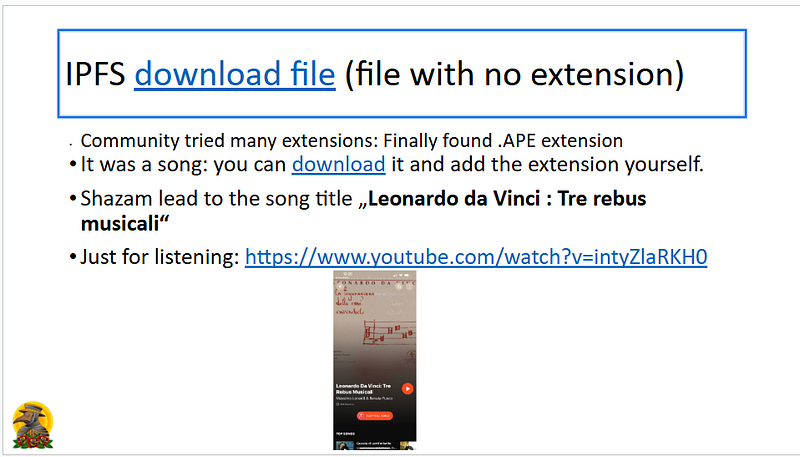
however in my runs to replicate the same file in 2025/26' i didn’t replicate the .ape layer end-to-end in a forensic, “anyone can reproduce it from scratch” sense because the chain broke at the deterministic CID derivation step.
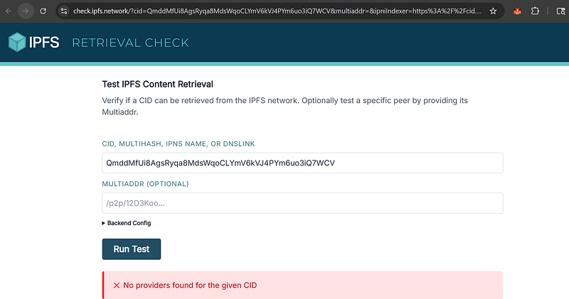
At the same time, we did record the CID and even a local payload path for the .ape, but we didn’t lock it down as a single canonical binary with sha256 + exact extraction/fetch commands published in the pack/repo — so we couldn’t honestly call it “replicated” under strict chain-of-custody standards. but the hunters in 2022 recorded their findings to provide us with that insight.
assuming the hunters did which they recorded back in 2022 found here:
https://docs.google.com/presentation/d/1MogotX537LcmEKuzjysjBM6dknClFFPUbMJQQsAMDLM/edit?usp=sharing
Fetching the data behind that CID yielded a packaged payload (the solver downloaded a small ZIP file).
Inside were two files:
first_riddle_song.apeandfirst_riddle.txt.
The.apefile name “Tre rebus musicali” (Italian for “Three musical riddles”) was itself a clue. An.apeis an audio file (Monkey’s Audio format), suggesting the next layer was audio steganography.
Sure enough, using the tool DeepSound (which can hide files in audio) to inspectfirst_riddle_song.aperevealed it was concealing an embedded text file – but required a password to extract. The hidden file was namedenkidu.txt, which hints at the password: “only the king’s lover has ears to hear” – in the Epic, Enkidu is the close companion of Gilgamesh. Using “enkidu” as the password, solvers unlocked the hidden text file via DeepSound.
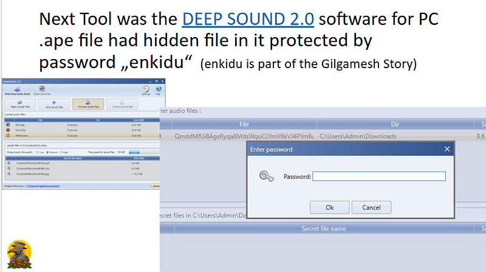
Inside enkidu.txt was yet another encoded string – a lengthy hex sequence, but curiously it contained letters beyond the usual 0-9 and a-f. In fact, letters U through Z appeared in place of A–F, evidently a simple substitution cipher on the hex digits. Once the team mapped U→A, V→B, … Z→F and then heeded the poem’s last advice (“walk backwards”) by reversing this hex string, the result could be decoded as ASCII and then themanifesto was born...
 manifesto can be found:
https://web.archive.org/web/20220615221519/https://pastebin.com/yhcajZq0
a key link made canon by the caw deployer after an onchain conversation with a whitehat.
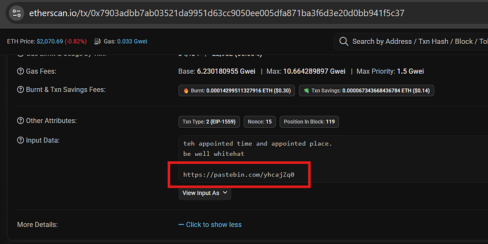
on MAY 10 2022 after the discovery of the manifesto , the hunters viewed the manifesto as an additional layer.
first noting the existence of a url listed within the manifesto itself which displays a picture of red fried fish or more commonly known in riddle hunts as a “red herring”. which they recalled was a warning given to us in the original old king riddle…
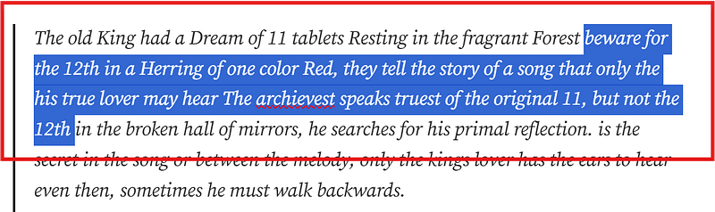
https://savoryandsweetfood.com/wp-content/uploads/2013/10/20131020-164849.jpg
they also noted all the misspellings and contradictions, the exact opposite of the riddle’s presentations so far
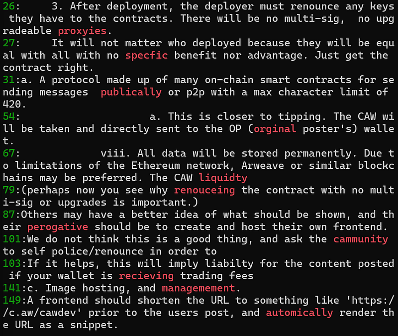
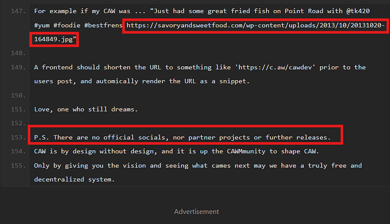
their was division growing amongst hunters that viewed the manifesto as canon and those that did not.
Telegram transcript for builders chat May 11,2022 and May 12, 2022:
Joop,
It’s not that I disagree with the vision. But we are not done researching
Joop,
Where is this from again ?
Joop,
100% we are not done yet
Joop,
There is more
Andy,
I’m still going to keep looking into the files and data. I reckon there is more Easter eggs for sure.
Kachoperro,
Yeah prob
Kachoperro,
More herrings
Deleted Account,
There absolutely has to be a lot more. Major CEX would have not listed without so. I can’t read all of the previous posts, but do the dates mean anything? Perhaps more clues will be given on the 12th and 13th?
CryptoLuche,
I absolutely don't believe to this manifesto.
This can't be the project whitepaper.
Only my opinion.
CryptoLuche,
Not a paid social network
Deleted Account,
https://savoryandsweetfood.com/wp-content/uploads/2013/10/20131020-164849.jpg"
A frontend should shorten the URL to something like 'https://c.aw/cawdev' prior to the users
post, and automically render the URL as a snippet
Deleted Account,
in the image link the dev purposefully choose a link with /wp-content n an image
Deleted Account,
i checked other images there they don t have wp-content
Deleted Account,
they also gave an example url after it so maybe there is a clue to finding a link
LP,
Zsteg on the fried fish picture
b1,rgba,lsb,xy .. text: "UU[Ysw[["
b2,r,lsb,xy .. text: "blSUT$5q"
b2,g,lsb,xy .. text: "UledhTFP"
b2,rgba,lsb,xy .. text: "7KKK7777"
b2,abgr,msb,xy .. text: ";;;;o;;;K"
b4,r,lsb,xy .. text: "FeVT4C4C#3DDdD "
b4,g,lsb,xy .. text: "VUDDDUfFsv"
b4,b,lsb,xy .. text: "WvgeETETVDUUuUSF"
b4,rgba,lsb,xy .. text: "PoO_>OO_O_>O>OO_O_>O,_=o>O>OO_O_O_O_a"
enkidu,
Hi guys... Nobody posted a link yet :(
Deleted Account,
A link?
enkidu,
I gave you one job
Kachoperro,
Aaaaaa
Kachoperro,
The whitepaper is not enough?
Deleted Account,
Fake white paper?
enkidu,
Price go up = real, price go down = fake?
Deleted Account,
Nah just thought it was so bad must be fake
enkidu,
Give you opinion on why bad
Kachoperro,
People didnt like the pay to tweet thing
KimDamyun,
and that community does everything I guess
enkidu,
I like this document actually
enkidu,
The great thing is it is a spec and idea
enkidu,
I think that sometimes in the worst red day of the year any info is worse then no info
enkidu,
As this is a specification and draws lines, some will like it, others won't
enkidu,
Nobody posted a link yet
Kachoperro,
Aaaaaa
Kachoperro,
https://pastebin.com/yhcajZq0
enkidu,
Aahh finally
Kachoperro,
Now you can read it
enkidu,
Ok. Interesting
enkidu,
Let's discuss the pushback against paid
enkidu,
My opinion is that usernames are defacto free unless you want vanity
enkidu,
So for vanity you have to burn to support the ecosystem (that supports you)
Kachoperro,
Agree
enkidu,
I am reading the spec the same as you
enkidu,
I think caw is built differently
enkidu,
Sorry
enkidu,
Many people had a difficult day because of that
enkidu,
But it shows that one should never place trust in a single man
enkidu,
I found if there is a clear spec and vision then it gets built
enkidu,
It doesn't matter who I am or what I did before. I'm just the same as everyone else
enkidu,
What matters is if this proposal is a accepted and worked on
enkidu,
If not then someone else can suggest something or we can all just go home
enkidu,
It is fairly easy
Winter,
Yeah, totally missed a lot of hints on our way to this text... 🤔
And it's more of a joke, ton of things are weird or easter eggs or jokes.
I just don't understand why @tehbull is pushing us in this direction
hedwig,
The red herring on the wp are a symbol of mislead. On the poem it states ''beware of the 12th in a red.. archevest trust 11th but not the 12th" and there is also RETURN JOURNEY in caps in one of our steps
Joop,
untill its somehow proven he is part of the team, i see him as we are. a hunter
Winter,
Yeah, no real reason to trust him for now even if we have some doubts
Winter,
Yeah bit with nothing built right now and a huge amount of rivals. It's not the same as when Bitcoin was created. Just throwing 15cex and telling the community "good luck" would be pure suicide now.
There is no way it's real, we missed something and this @tehbull is just luring us.
Joop,
you think he is part of the team?
Joop,
i need proof before i believe
Joop,
anyone can larp
Joop,
pretend to be the wise one
Joop,
signed tx
Joop,
otherwise he is a hunter like us
Joop,
just believing and trusting a total stranger, especially on the internet . nope
Deleted Account,
His name was Enkidu before we made the connection to Gilgamesh- and he was actually the first one to give anyone a hint or clue at what we should be finding and wouldn’t reveal anything until “someone else got something similar”
Joop,
everybody was looking for that image, and he clearly said that his girlfriend (with a smaller brain) found the link to the PNG image
Joop,
as i said last night, those who want to start wokring on the proposal = fine. do so
The others will keep researching
enkidu,
2- I will support building towards what's in the doc.
enkidu,
3 if others want to do different things then cool
enkidu,
What matters is how you want to contribute (or not)
enkidu,
If someone else discovers a different path then present it
enkidu,
The man in the arena gets priority
enkidu,
If you are not in the arena, your voice doesn't matter
enkidu,
Maybe the docdooooooors can fork off and build the doc and leave the huntdoooooors to keep 'hunting'
Joop,
but there is, and everybody is ignoring it
Joop,
what are your thoughts on the 2nd sequence of numbers, which is 100% similar the the one that lead us to the current WP ?
Joop,
this is nonense to me, the man in the arena gets priority ? While there are other clues to be figured out. What do we do with them, just ignore them?
Joop,
its the voice of the majority that dictates whats gonna happen next
Joop,
we research the 2nd sequence of numbers that is 100% similar to the one that lead us to the current WP
Joop,
why do we ignore that one ?
Joop,
but again, as I said - if you feel fine with the current WP - start building
Joop,
and if the 2nd sequence is nonsense - we will join with the others to build
Joop,
oh and please - if you are truly part of the team - just say so. I dislike creating a 'cult' surrounding a mystery person
Joop,
a lot of ppl put a lot of weight on his voice, bcs they think he is part of the team.
Joop,
it would be nice to know for 100%
Joop,
he could be a troll
Joop,
but to be clear @tehbull - EVERYONE is in the arena here .
Winter,
So you are no insider in the end
Joop,
until proven otherwise - he is just like you and me
enkidu,
Who ever claimed I was insidooor
Joop,
a lot of ppl - and you dont deny it either
enkidu,
I'm just like you
Joop,
lets do more research
Joop,
2nd sequence
Joop,
we need to figure out what it means, bcs its different then the 1st
enkidu,
Fair idea
Joop,
lets keep this room for research ?
enkidu,
Doctors vs hunters
enkidu,
Hunters should stay here
Winter,
Whitepaper is a fake one I think
enkidu,
https://pastebin.com/yhcajZq0
enkidu,
This is whitepaper. I believe it's real
enkidu,
Summer believes it's fake
Winter,
Yeah, we have different opinion on it
Winter, [5/12/2022 5:00 AM]
The future will tell 🙂
enkidu,
Half of us are starting to build
enkidu,
The others are looking for more clues and say it's a false trail
Joop,
there is more work to do
Deleted Account,
Projects need a leadership to guide people to the right track .
Joop,
the current WP ends with a link that points to 'red herring'.
Joop,
the current WP is splitting the group
Over the next four years, up to the present day, Enkidu, Kachoperro, and Gilgamesh assumed prominent roles in developing “the manifesto.” Yet, much like a decoy (no pun intended), they repeatedly missed the critical deadlines they had set for the cawmmunity, themselves and have yet to produce a working purpose. Given the facts, they promoted the manifesto as the central narrative while doing little to encourage deeper exploration of the riddles.
This pushed away the core group of hunters to this day.
thus the first CAW riddle was recognized, in one sentence:
On-chain key → image host → stego poem + coordinates → Gilgamesh book cipher → IPFS CID → audio container → DeepSound → enkidu → manifesto
For a long time the community treated the manifesto like the finish line. When I went back and rebuilt the chain with a “receipts-only” mindset — hashes, re-runs, and manual verification only— the elephant in the room became unavoidable, the riddle itself carries a warning that the “12th” is a herring, and the so-called manifesto URL literally resolves to a red fried fish image.
That doesn’t prove the manifesto is worthless, it proves you’re being told to be careful what you crown as “the answer.”
then a new puzzle appeared further proving there was more to the riddle. but before we dive into that, there were still strong leads coming from the first riddle.
Along the way, a second pattern stood out, some “errors in the manifesto” behave less like random typos and more like a constrained signal. In our own outputs, a letter pool labeled yaleandmeaa produces solutions that include “ayala demean,” which is interesting precisely because constrained puzzles collapse hard when there’s intention.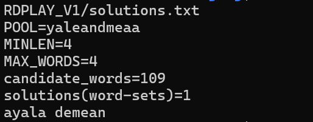
But I’m keeping this modest on purpose, we’ve also documented that at least one earlier typo-stream run was contaminated by pointing at the wrong source file, so anything “misspellings-derived” only becomes canon once reproduced from an authoritative manifesto input with a clean script trail.
What is canon today is simpler and sharper, the on-chain/image lane leads to the manifesto and embeds a red-herring warning, and that alone is enough to justify continuing the hunt — carefully, reproducibly, and without handing leadership to whoever talks the loudest.
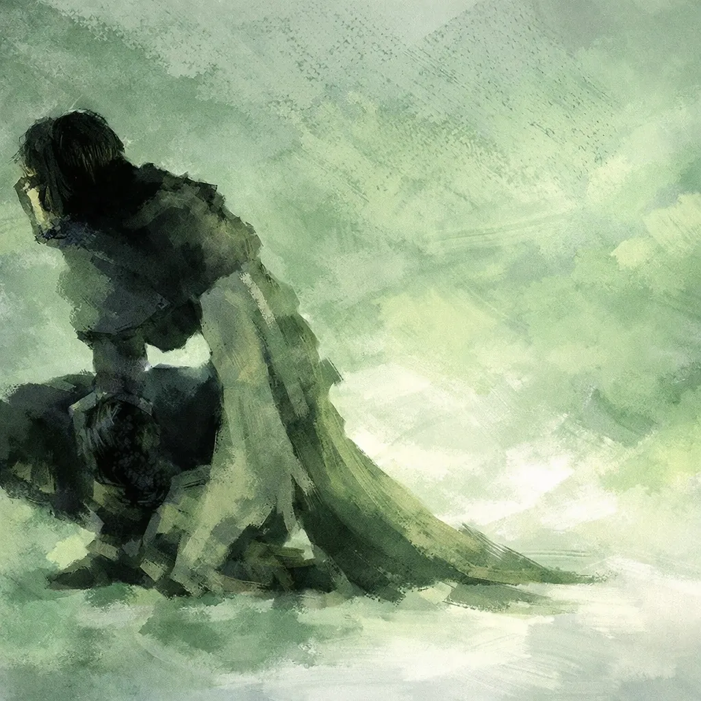
zrUfKaKV aka Riddle 2 (R2): “Lost Riddle” Pastebin — Multi-Layer Cipher and on going progress…
On-chain clue zrUfKaKV ⇒ Pastebin(zrUfKaKV) — a forensic briefing from the trenches (as of Feb 2026)
(from XT / Xubu_Trad — written for humans, but pinned to receipts)
The second transaction’s data, zrUfKaKV, was soon recognized as a Pastebin link key :pastebin.com/zrUfKaKV
Sure enough, a Pastebin page with that ID went live on July 17, 2022 – but it was accessible only briefly (it self-deleted or was deleted after two views).
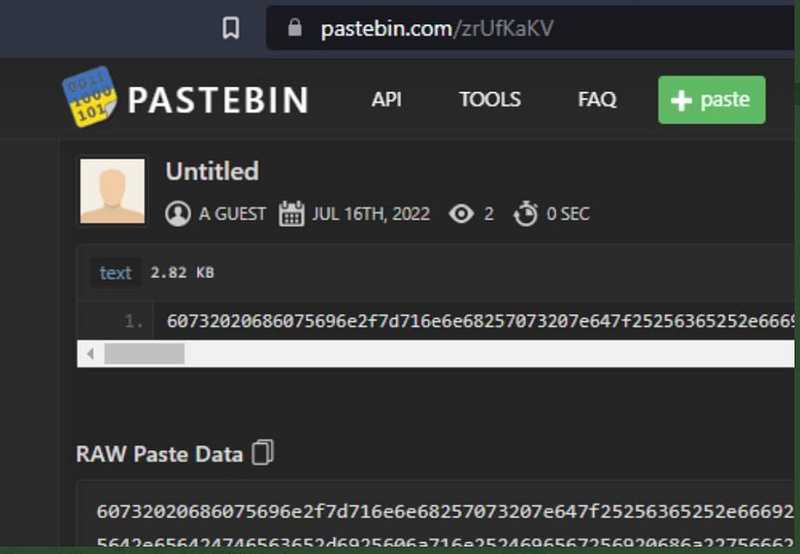
This abrupt disappearance left the community stuck, for over three years the contents were unknown, earning the moniker “the lost riddle” of the CAW saga. Finally, in August 2025, the Pastebin was recovered (Pastebin staff provided the original data to the cawmmunity) and Riddle 2 could properly begin.
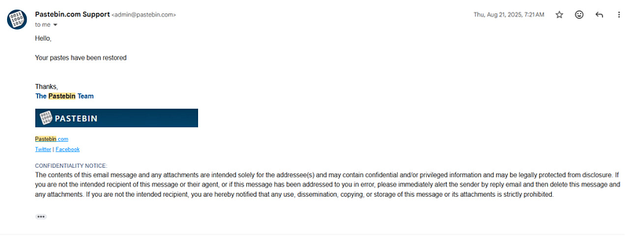
Pastebin Content — Hex-Encoded Binary..
The restored Pastebin did not contain a neat poem or list. Instead, it presented a very long string of characters that at first glance looked like hexadecimal — except it included letters beyond F (g, n, z, etc.). When we reconstruct the Paste content we’re working with, it’s hex (lowercase 0–9a–f), not “mystery base64.” We validated it as a real hex stream with:
2884 hex characters → 1442 bytes (plus a trailing newline in the raw scrape)
That’s important because it means: we’re not debating interpretations yet — we’re still in byte-land.
For reference, here is the Pastebin’s raw content:
60732020686075696e2f7d716e6e68257073207e647f25256365252e666924606f2464652c6e60666560776720746465656571756e2d70707a6464247f622465296365642e656424746563652d6925606a716e2524696567256920686a227566626f6f657527656f622d702424276e68606f6524646f702e296f6d7a757072217575602065626273706e246e227e2c2770607f6271696060697864436023636f7c7c67656029232466607820266065647323687d056460696d79636524206164247f242970246e67202469637f652e2960202274670364707e24207f60736f2962626025366061687c706c75797467226565246f6f74296472617e60657f70297550207070706064207f77416575702025602078697065786e6079606f61206f6070756e6060747978642e256e797562242f20256474676524646e207c647001257260702e6e63687e6772677f61696020657062757a60602e7120607f7e60227160652620696f79687f742560646f61797924732c6d667565386e607421606178656577207c2560232575696061706f71097160206d6d2e607d606f6f60627563296e6364206e737e60732020707521667478702c2474602071696253277270666421707c6f616562297061606460677564637f23747e647f722d712370692c6473646c6f7060602369666060636e2565606f606a6c69657862797c6760656e702420606270616920606d67247520206f7060626f6a64646420206262746e206f232e706361712e63607524742929706c66206f65236c6f2268626c7103267029646062636528626c792479696424607075606365646d726e6465220576707e296362717e6e60242365602025796461602020706225636420666f606871236a6e276b276069792164247225662163752069637564626e6560246e616323646c646e686e206577776f66236c7871657863726e252067252077626568626064786366687279647028706c766f64616465227a6267707f6e606f642d6675717572756e746e75607966626f656e6c636260717469667060647d70666d752460676973656074636d7f65657074486f6f7764646f6f7260622321672320795077617e2e602f2565647c6c7069766f2869697028757565656e6974766f6a747165286e697060656f60797470747f6e7025206066267c4568693f6f2160706f7e742f6066206067652567706129627074602072756420796d706822207f6e64646a6066702163636e2270246f2020636375607974622c7421752e62617473606a202464606e22626968272070697120702929692f6222207e60686f2e686569496970296e2065606b6774707120236025606c66707f73247903612174702c216d202f682f692465206164256e757068236978776e737d20606f002070622174636563646e7f216362057960646f226462226e2160636f69236425616f71206167266429727c2364746f757f2b7f7e69262e226e69746525246f6f2464696c646e63686564656f646165627e2c63732f6d716222276e71757b25602069602065276469740078206e2c79652964616465606e69646e6223762564796362657564796e706e6f276f7e6975636224646425657c206e5d606369756c616520280461737560777d606c67616d6c6677706567626f6063642500676e666f60607979752c620f65667078616160647061607c692e746f7467612064697060612569656e65006021776560652e277070626f7360736c606f6076222264216e6120246f6d737124707760616579642364627060256e256e2562707360686a6170206460606c606724606f7065607122706162236f607162662564297079767a7075292d762569296965647071256a7528696960292e707e6064656975706460777472606f6f206c6029726025242420742063286c606060692124687c286479206f61692d7d286f652968242768692125607e627e656464707078626274606f706e6570736e2568792a63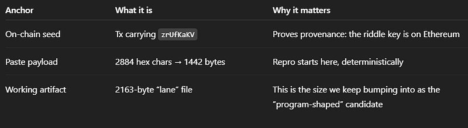
The structure did match the manifesto riddle style – an encoded payload requiring multi-step decoding.
Many attempts produced junk.
this wasnt just a lost riddle
its a very diffcult one
I’m not going to tell you “the community solved ZRU.”
It didn’t.
And I’m not going to certify a fairytale
heres a diagram of the evidence of one of those attempts
Ethereum tx (2022-07-17)
└── input data: "zrUfKaKV"
└── Pastebin slug (delivery)
└── hex payload (2884 chars → 1442 bytes)
└── deterministic transforms / probes
└── 2163-byte program-shaped candidate lane
└── controlled decode lanes → partial plaintext
└── (open) archive extraction claims (needs independent redo)The work has been local, reproducibility-first, and mostly solitary — with a resurfaced og riddle hunter, Peter Pan, being the only one who made a real attempt that moved the needle.
Peter said, “If you un-hex it and then parse the message with UTF-16 encoding… you get words.”
That hint flipped the puzzle on its head. The hex wasn’t compressed data, it was text encoded for another alphabet system. When decoded as UTF-16 LE, the gibberish suddenly turned into structured lines Chinese and Japanese-like glyphs arranged like verses.
獠†恨極⽮煽湮╨獰縠罤┥散⸥楦怤⑯敤測晠恥杷琠敤敥畱灰摺⑤承攤挩摥攮⑤整散椭急煪╮椤来椥栠≪晵潢敯❵潥ⵢ⑰✤桮潠⑥潤漩穭灵ⅲ畵扥獢湰渤縢✬恰承楱恠硩䍤⍠潣籼敧⥠␣恦⁸怦摥⍳絨搅楠祭散․摡缤⤤⑰杮␠捩敿⤮琢ͧ灤⑾缠獠⥯扢╠怶桡灼畬瑹≧敥漤瑯搩慲恾罥⥰偵瀠灰摠缠䅷略⁰急砠灩硥恮恹慯漠灠湵恠祴摸┮祮扵⼤┠瑤敧搤摼Ű爥灠渮档松杲慿恩攠扰穵恠焮怠繿≠恱♥️椠祯罨╴摠慯祹猤洬畦㡥恮ⅴ慠數睥簠急┣極慠潰ॱ恱洠絠潠息畢⥣据獮恾瀠ⅵ瑦灸恴焠扩❓灲摦瀡潼敡⥢慰摠杠摵罣琣摾牿焭瀣Ⱪ獤汤灯恠椣恦捠╮恥息汪敩扸籹恧湥⑰怠灢楡怠杭甤†灯扠橯摤戠瑢⍯瀮慣恣⑵⥴瀩晬漠⍥潬栢汢ͱ瀦搩扠散戨祬礤摩怤異捠摥牭摮≥瘅繰挩煢湾①攣礥慤瀠╢摣映息煨樣❮❫楠ⅹ⑤╲Ⅶ畣椠畣扤敮①慮⍣汤湤湨攠睷景氣煸硥牣╮朠‥扷桥恢硤晣牨摹⡰汰潶慤敤稢杢罰恮摯昭煵牵湵湴恵晹潢湥捬恢瑱晩恰絤晰畭怤楧敳瑠浣敿灥䡴潯摷潤牯扠℣⍧礠睐繡怮┯摥汼楰潶椨灩用敵湥瑩潶瑪敱渨灩敠息瑹瑰湿╰怠♦️䕼楨漿怡潰瑾怯杠╥灧⥡灢恴爠摵礠灭≨缠摮橤晠ⅰ捣≮⑰挠畣祠扴琬甡戮瑡恳搤湠戢桩‧楰ⁱ⥰椩戯•恾潨栮楥楉⥰恥杫灴ⁱ怣急晬罰⑳Ⅱ灴ℬ栯椯攤愠╤畮桰椣睸獮⁽潠 扰琡散摣置挡բ恹潤搢≢Ⅾ捠楯搣愥煯愠♧⥤籲搣潴罵缫楾⸦渢瑩╥漤⑯楤摬据敨敤摯敡繢挬⽳煭≢渧畱╻恩攠搧瑩砀渠礬⥥慤敤湠摩扮瘣搥捹敢摵湹湰❯繯畩扣搤╤籥渠恝楣汵敡⠠愄畳睠恽杬浡晬灷来潢捠╤最普息祠畹戬攏灦慸恡灤恡楼琮瑯慧搠灩慠椥湥eⅠ敷敠✮灰潢恳汳潠癠∢Ⅴ慮␠浯煳瀤恷敡摹搣灢╠╮╮灢恳橨灡搠恠恬⑧潠数煠瀢扡漣煠晢搥瀩癹灺⥵瘭椥椩摥煰樥⡵楩⥠瀮恾敤畩摰睠牴潠恬爩╠琠挠氨恠楠␡籨搨⁹慯⡽敯栩✤楨┡繠繢摥灤硰扢恴灯敮獰╮票挪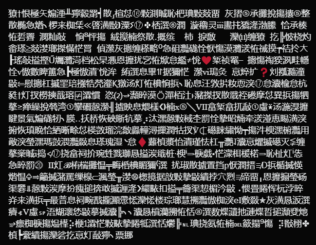
Running the decoded block through translation revealed something astonishing.. a poem, dark and deliberate:
The fangs of hatred incite the flames of destruction, The raging fire spreads like wildfire, The ashes of despair scatter in the wind, The remnants of shame lie scattered on the ground, The dust of defeat settles like a veil, The burden of guilt weighs heavy on the soul, The fragments of hope lie shattered and broken, The embers of despair smolder in the darkness.
Hashes confirmed the find: Raw bytes → a7f4839ffa14040e5a68d05ba668826ddcbda9bcdf28f5f8e5a59390a898d92c
Decoded UTF-8 text → 494ffd3029a6d788c6ccc3cdf44da9b511c465998b12ed3fea218d21e6a18e57 Perfect reproducibility … finally, a solid checksum trail.
it seemed to shed light
This solved what the community had debated since 2022: the second riddle was not another EXIF cipher or audio embed. It was a linguistic test… a hidden message disguised as hex, meant to be translated from emotion, not from bytes.
or so it seemed..
Peter’s ZRU “findings” are only “canon” in the forensic sense, they’re things we can reproduce and re-test, not a completed answer or final solution.
Two parts are high-confidence (0.9) because they repeat cleanly.
First, Peter’s long hex string (the one starting 787e2963...) is treated as the official input blob we’re working from, and we added checks to make sure we’re using the exact same starting bytes—so we don’t get into copy/paste drift arguments.Second, his note that you can unhex the data and then decode it as UTF-16 and get something that looks like “maybe a poem” is also solid as an observation: when we did it, the output matched
but…
What we don’t want to overstate (medium confidence, ~0.7) is what that output means. A block of text that looks poem-like or even CJK-ish isn’t proof there’s real meaning there. If you take random-ish bytes and interpret them as UTF-16/UTF-32, you can get something that looks like language even when it’s basically noise — and we call that out in the replication notes.
We’ve found bits of data that look meaningful — stuff that resembles QR codes, fragments that resemble a URL, and other patterns that seem like they could be “something.” But so far, none of it has turned into a clear, repeatable breakthrough.
In the end, the zrUfKaKV riddle is still unsolved.
Perhaps it truly requires a cawmmunity effort to crack the uncrackable
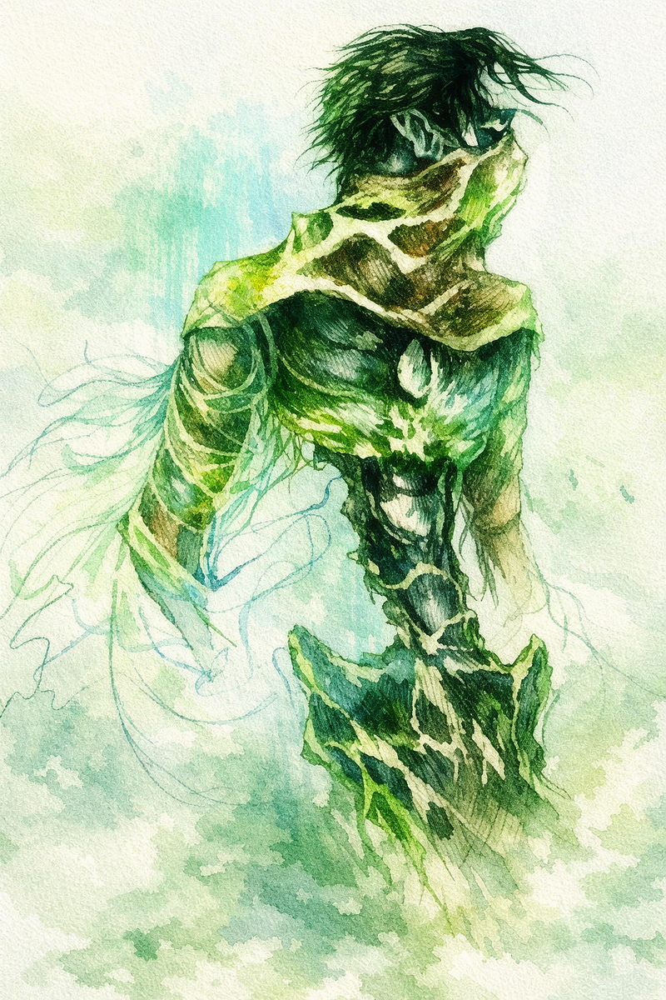
CAWmmunity,
I’m saying this with love, not judgment, I followed the loud story early too, but I’m not doing that anymore, because this thing only gets solved if we stick to what we can prove and stop filling the gaps with guesses; I’m not here to call anyone a villain or claim I know people’s intent, and I fully accept I could be wrong, but I am saying the steering and the noise have shaped what we chased and what we ignored, and I own my part in that. The only anchors I’m willing to treat as real “canon” are the ones we can verify from the chain, like the deployer pointing us to pastebin.com/yhcajZq0 and github.com/cawdevelopment, and the riddle itself literally warning us to “beware” the red herring — so we need to stop treating the manifesto like the finish line just because it’s the loudest thing on the table.
My belief is simple, if it doesn’t produce a unique, repeatable output we can all rerun (hash, CID, key, file signature, on-chain proof), it’s probably just burning our time, and I’m done arguing about it. To keep this open and real, I put everything in a public workspace here,
https://github.com/Xubu-Trad/caw-lab, and I also sent the repo invite to cawdevelopment for merge on 2026–02–08T06:29:46Z
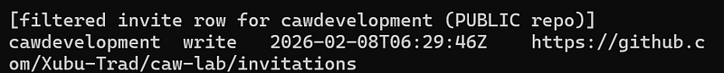
Now I’m asking for help — if you have experience in cryptography, ciphers, stego, compression, or on-chain forensics, please jump in, and if you don’t, please ask a friend or family member who does (even a few hours of clean eyes can change everything), this is the first major step — full discovery — and once we have that, we can finally move forward together as a cawmmunity.
-XT
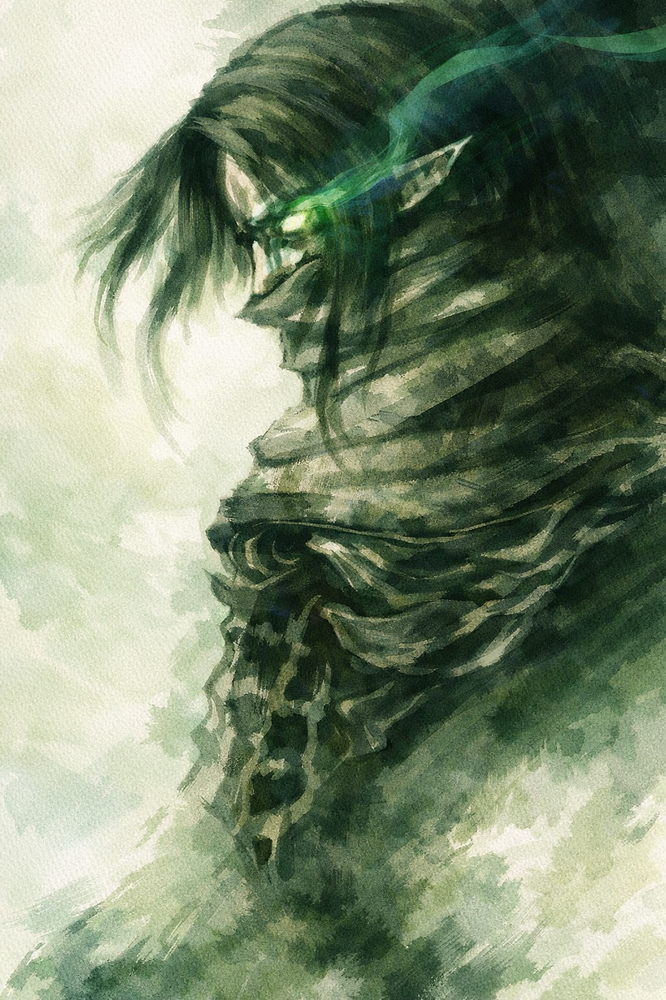